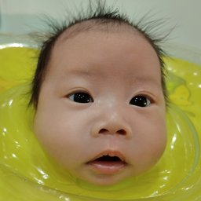

<!doctype html>
<html lang="zh-Hant">
<head>
<meta charset="utf-8">
<meta name="viewport" content="width=device-width,initial-scale=1,viewport-fit=cover">
<title>果果日記</title>
<meta name="theme-color" content="#EE7D95">
<meta name="description" content="夫妻共享的寶寶照護記錄">
<link rel="manifest" href="app.webmanifest">
<link rel="icon" href="icons/b-icon-192.png">
<link rel="apple-touch-icon" href="icons/b-apple-touch-icon.png">
<meta name="apple-mobile-web-app-capable" content="yes">
<meta name="apple-mobile-web-app-title" content="果果日記">
<link rel="preconnect" href="https://fonts.googleapis.com">
<link rel="stylesheet" href="https://fonts.googleapis.com/css2?family=Fredoka:wght@400;500;600&family=Huninn&display=swap">
<style>
/* 版型：手機單頁 App。粉色頂欄 + 今日摘要 + 時間軸，底部快速記錄列與分頁列。草莓牛奶粉為主，各記錄類型各有一色。 */
:root{
  --bg:#FFF5F7; --surface:#FFFFFF; --ink:#4B3F57; --muted:#9C90A6; --line:#F4DEE4;
  --primary:#EE7D95; --primary-deep:#D9607B; --on-primary:#FFFFFF;
  --c-breast:#F07E9A; --c-bmilk:#F59E7E; --c-formula:#F2B23A; --c-pump:#C69ADB;
  --c-pee:#4FC2A7; --c-poop:#C2864F; --c-sleep:#9686E6; --c-temp:#EF6A6A; --c-mood:#5FAEEB; --c-solid:#7DBB5A; --c-med:#E58AC8; --c-bath:#4DB6E8; --c-sick:#E8845A; --c-event:#8E9BD6; --primary-soft:#FDE3E8;
  --warn:#E5484D; --ok:#2E9E7A;
  --band:#F7E9EE; --shadow:0 6px 20px rgba(214,96,123,.12);
  --f:"Fredoka","Huninn","PingFang TC","Microsoft JhengHei","Noto Sans TC",sans-serif;
  --r:18px;
}
:root{color-scheme:light}
html{padding-top:env(safe-area-inset-top,0px)}
[hidden]{display:none!important}
img{max-width:100%}
.datenav button svg,.wkhead button svg{width:20px;height:20px;flex:none}
*{box-sizing:border-box}
html,body{height:100%}
body{background:var(--bg);color:var(--ink);font-family:var(--f);font-size:15px;margin:0;-webkit-tap-highlight-color:transparent}
button,input,select,textarea{font:inherit;color:inherit}
button{cursor:pointer;border:0;background:none}
:focus-visible{outline:3px solid var(--primary);outline-offset:2px;border-radius:10px}
.num{font-variant-numeric:tabular-nums}
.app{max-width:560px;margin:0 auto;min-height:100%;padding-bottom:calc(178px + env(safe-area-inset-bottom,0px))}
.app.notrack{padding-bottom:calc(84px + env(safe-area-inset-bottom,0px))}

/* header */
.hd{background:var(--primary);color:var(--on-primary);padding:14px 16px 16px;border-radius:0 0 26px 26px;position:relative;overflow:hidden}
.hd::after{content:"";position:absolute;right:-30px;top:-40px;width:150px;height:150px;border-radius:50%;background:rgba(255,255,255,.14)}
.hd-top{display:flex;align-items:center;gap:10px;position:relative;z-index:1}
.avatar{width:42px;height:42px;border-radius:50%;background:rgba(255,255,255,.95);display:grid;place-items:center;flex:none}
.avatar{overflow:hidden}
.face{width:100%;height:100%;object-fit:cover;border-radius:50%;display:block}
.who{flex:1;min-width:0}
.who b{font-family:"Huninn",var(--f);font-size:19px;font-weight:400;display:block}
.who span{font-size:12.5px;opacity:.9}
.daypill{text-align:right;font-size:11px;opacity:.95}
.daypill b{display:block;font-size:20px;font-weight:600;line-height:1}
.datenav{display:flex;align-items:center;justify-content:space-between;margin-top:12px;position:relative;z-index:1}
.datenav button{width:36px;height:36px;border-radius:50%;background:rgba(255,255,255,.22);color:inherit;display:grid;place-items:center}
.datenav button:disabled{opacity:.35;cursor:default}
.datenav .d{font-size:16px;text-align:center}
.datenav .d small{display:block;font-size:11.5px;opacity:.85}

.wrap{padding-inline:16px}
.since{margin:14px 0 0;background:var(--surface);border-radius:var(--r);padding:12px 14px;display:flex;align-items:center;gap:12px;box-shadow:var(--shadow)}
.since .big{font-size:22px;font-weight:600;color:var(--primary-deep)}
.since .sub{font-size:12.5px;color:var(--muted)}
.since .grow{flex:1;min-width:0}
.since .tag{font-size:12px;border-radius:999px;padding:4px 10px;background:color-mix(in srgb,var(--c-formula) 20%,var(--surface));color:var(--ink);white-space:nowrap}
.since .tag.due{background:color-mix(in srgb,var(--warn) 18%,var(--surface));color:var(--warn)}

.chips{display:grid;grid-template-columns:repeat(4,1fr);gap:8px;margin-top:12px}
.chip{background:var(--surface);border-radius:14px;padding:10px 4px 9px;text-align:center;box-shadow:var(--shadow)}
.chip .ic{width:26px;height:26px;border-radius:50%;background:var(--c);color:#fff;display:grid;place-items:center;margin:0 auto 3px}
.chip .ic svg{width:18px;height:18px}
.chip b{display:block;font-size:15px;font-weight:600}
.chip small{display:block;font-size:10.5px;color:var(--muted);line-height:1.3}

.ribbon{margin-top:12px;background:var(--surface);border-radius:var(--r);padding:10px 12px 6px;box-shadow:var(--shadow)}
.ribbon svg{width:100%;height:auto;display:block}
.ribbon .lg{display:flex;gap:12px;font-size:11px;color:var(--muted);flex-wrap:wrap;margin-top:2px}
.ribbon .lg i{display:inline-block;width:8px;height:8px;border-radius:50%;margin-right:4px;vertical-align:1px}

.sect{display:flex;align-items:baseline;justify-content:space-between;margin:18px 2px 8px}
.sect h2{font-family:"Huninn",var(--f);font-weight:400;font-size:17px;margin:0}
.sect span{font-size:12px;color:var(--muted)}

.tl{list-style:none;margin:0;padding:0;background:var(--surface);border-radius:var(--r);box-shadow:var(--shadow);overflow:hidden}
.tl li{display:flex;align-items:center;gap:12px;padding:11px 14px;border-bottom:1px solid var(--line);cursor:pointer}
.tl li:last-child{border-bottom:0}
.tl li:hover{background:color-mix(in srgb,var(--primary) 5%,var(--surface))}
.tl .tm{width:44px;font-size:15px;font-weight:500;color:var(--muted);flex:none}
.badge{width:34px;height:34px;border-radius:50%;background:var(--c);color:#fff;display:grid;place-items:center;flex:none}
.badge svg{width:22px;height:22px}
.tl .body{flex:1;min-width:0}
.tl .body b{font-weight:500}
.tl .val{color:var(--c);font-weight:600;margin-left:6px}
.tl .meta{display:block;font-size:12px;color:var(--muted);overflow-wrap:anywhere}
.tl .flag{font-size:11px;color:var(--warn);border:1px solid var(--warn);border-radius:6px;padding:0 5px;margin-left:6px}
.wake{background:var(--c-sleep);color:#fff;border-radius:999px;padding:6px 12px;font-size:13px;flex:none}
.empty{background:var(--surface);border-radius:var(--r);padding:26px 18px;text-align:center;color:var(--muted);box-shadow:var(--shadow);line-height:1.7}
.empty svg{width:64px;height:64px;color:var(--primary);display:block;margin:0 auto 6px}

/* quick-add tray */
.tray{position:fixed;left:0;right:0;bottom:calc(64px + env(safe-area-inset-bottom,0px));z-index:20;pointer-events:none}
.tray-in{max-width:560px;margin:0 auto;padding:0 10px}
.tray-card{pointer-events:auto;background:var(--surface);border-radius:22px;box-shadow:0 -2px 24px rgba(214,96,123,.18);padding:10px 6px 8px;display:flex;gap:2px;overflow-x:auto;scrollbar-width:none}
.tray-card::-webkit-scrollbar{display:none}
.qa{flex:1 0 58px;display:flex;flex-direction:column;align-items:center;gap:4px;font-size:11.5px;color:var(--ink);padding:2px 0}
.qa .badge{width:44px;height:44px;transition:transform .15s}
.qa .badge svg{width:28px;height:28px}
.qa:active .badge{transform:scale(.9)}
.qa.xtra{display:none}
.mgrid{display:grid;grid-template-columns:repeat(4,1fr);gap:12px 4px;margin-top:6px}
.mgrid .qa{flex:none}
@media(min-width:700px){.qa.xtra{display:flex}.qa.more{display:none}}
.runbar{pointer-events:auto;margin-bottom:8px;background:var(--c-breast);color:#fff;border-radius:999px;padding:8px 8px 8px 14px;display:flex;align-items:center;gap:10px;box-shadow:var(--shadow)}
.runbar.sleep{background:var(--c-sleep)}
.runbar span{flex:1;font-size:13.5px}
.runbar button{background:#fff;color:var(--ink);border-radius:999px;padding:6px 14px;font-size:13px}

.tabs{position:fixed;left:0;right:0;bottom:0;z-index:21;background:var(--surface);border-top:1px solid var(--line);padding-bottom:env(safe-area-inset-bottom,0px)}
.tabs-in{max-width:560px;margin:0 auto;display:grid;grid-template-columns:repeat(4,1fr)}
.tab{height:64px;display:flex;flex-direction:column;align-items:center;justify-content:center;gap:3px;font-size:11.5px;color:var(--muted)}
.tab svg{width:24px;height:24px}
.tab[aria-selected="true"]{color:var(--primary-deep)}
.tab[aria-selected="true"] svg{transform:translateY(-1px)}

/* sheet */
.scrim{position:fixed;inset:0;background:rgba(40,20,40,.38);z-index:40;display:flex;align-items:flex-end;justify-content:center}
.sheet{background:var(--bg);width:100%;max-width:560px;max-height:92%;overflow:auto;border-radius:26px 26px 0 0;padding:8px 16px calc(18px + env(safe-area-inset-bottom,0px));animation:up .22s ease-out}
@keyframes up{from{transform:translateY(40px);opacity:.4}to{transform:none;opacity:1}}
@media (prefers-reduced-motion:reduce){.sheet{animation:none}}
.grab{width:42px;height:5px;border-radius:9px;background:var(--line);margin:4px auto 10px}
.sh-hd{display:flex;align-items:center;gap:10px;margin-bottom:12px}
.sh-hd h3{font-family:"Huninn",var(--f);font-weight:400;font-size:19px;margin:0;flex:1}
.x{width:34px;height:34px;border-radius:50%;background:var(--surface);display:grid;place-items:center;color:var(--muted)}
.x svg{width:18px;height:18px}
.card{background:var(--surface);border-radius:var(--r);padding:12px 14px;margin-bottom:10px}
.lbl{font-size:12.5px;color:var(--muted);margin:0 0 6px;display:block}
.field{width:100%;border:1.5px solid var(--line);background:var(--bg);border-radius:12px;padding:10px 12px;font-size:16px}
.field:focus{border-color:var(--primary);outline:0}
.row{display:flex;gap:10px;align-items:center}
.row>*{min-width:0}
.pills{display:flex;flex-wrap:wrap;gap:7px}
.pill{border:1.5px solid var(--line);background:var(--bg);border-radius:999px;padding:7px 13px;font-size:14px}
.pill[aria-pressed="true"]{background:var(--c,var(--primary));border-color:var(--c,var(--primary));color:#fff}
.stepper{display:flex;align-items:center;gap:10px;justify-content:center;margin:4px 0 10px}
.stepper button{width:48px;height:48px;border-radius:50%;background:color-mix(in srgb,var(--c) 18%,var(--surface));color:var(--c);font-size:24px;font-weight:600}
.stepper .v{font-size:40px;font-weight:600;min-width:120px;text-align:center;color:var(--c)}
.stepper .v small{font-size:16px;margin-left:2px}
.save{width:100%;height:52px;border-radius:999px;background:var(--c,var(--primary));color:#fff;font-size:17px;display:flex;align-items:center;justify-content:center;gap:8px;margin-top:6px}
.save svg{width:20px;height:20px}
.del{width:100%;margin-top:10px;color:var(--warn);font-size:14px;padding:10px}
.confirm{display:flex;gap:8px;margin-top:10px}
.confirm button{flex:1;height:44px;border-radius:999px;background:var(--surface);font-size:14px}
.confirm .yes{background:var(--warn);color:#fff}
.hint{font-size:12px;color:var(--muted);margin:8px 0 0;line-height:1.55}
.hint.warn{color:var(--warn)}
.swatches{display:flex;gap:10px;flex-wrap:wrap}
.sw{display:flex;flex-direction:column;align-items:center;gap:4px;font-size:11.5px;color:var(--muted)}
.sw i{width:38px;height:38px;border-radius:50%;border:3px solid transparent;box-shadow:inset 0 0 0 1px rgba(0,0,0,.08)}
.sw[aria-pressed="true"] i{border-color:var(--ink)}
.sw[aria-pressed="true"]{color:var(--ink)}

/* breast timer */
.timer-opts{display:flex;align-items:center;justify-content:space-between;font-size:13.5px;margin-bottom:8px}
.toggle{width:46px;height:26px;border-radius:999px;background:var(--line);position:relative;flex:none}
.toggle::after{content:"";position:absolute;top:3px;left:3px;width:20px;height:20px;border-radius:50%;background:#fff;transition:left .15s;box-shadow:0 1px 3px rgba(0,0,0,.2)}
.toggle[aria-pressed="true"]{background:var(--c-breast)}
.toggle[aria-pressed="true"]::after{left:23px}
.mins{display:flex;gap:6px;justify-content:space-between}
.mins .pill{padding:6px 0;flex:1;text-align:center;font-size:13px}
.sides{display:grid;grid-template-columns:1fr auto 1fr;gap:8px;align-items:center;margin-top:14px}
.side{aspect-ratio:1;max-width:150px;width:100%;justify-self:center;border-radius:50%;background:color-mix(in srgb,var(--c-breast) 22%,var(--surface));color:var(--c-breast);display:flex;flex-direction:column;align-items:center;justify-content:center;gap:2px;border:3px solid transparent;position:relative}
.side.on{background:var(--c-breast);color:#fff;box-shadow:0 0 0 6px color-mix(in srgb,var(--c-breast) 25%,transparent)}
.side small{font-size:12.5px}
.side b{font-size:28px;font-weight:600}
.side svg{width:20px;height:20px}
.side .last{position:absolute;bottom:-8px;font-size:11px;background:var(--surface);color:var(--c-breast);border-radius:999px;padding:1px 8px;border:1px solid var(--c-breast)}
.mid{display:flex;flex-direction:column;align-items:center;gap:6px;font-size:12px;color:var(--muted)}
.mid button{background:var(--surface);border-radius:999px;padding:6px 12px;color:var(--c-breast);font-size:13px}
.mid b{font-size:18px;color:var(--ink)}

/* summary + growth */
.seg{display:flex;background:var(--surface);border-radius:999px;padding:4px;gap:4px;margin:14px 0 10px}
.seg button{flex:1;height:36px;border-radius:999px;font-size:13.5px;color:var(--muted)}
.seg button[aria-pressed="true"]{background:var(--primary);color:var(--on-primary)}
.chart{background:var(--surface);border-radius:var(--r);padding:12px 8px 8px;box-shadow:var(--shadow);overflow-x:auto}
.chart svg{display:block;width:100%;min-width:320px;height:auto}
.chart text{font-family:var(--f)}
.legend{display:flex;flex-wrap:wrap;gap:6px 14px;justify-content:center;font-size:11.5px;color:var(--muted);margin-top:6px}
.legend i{display:inline-block;width:12px;height:8px;border-radius:3px;margin-right:4px}
.wkhead{display:flex;align-items:center;justify-content:space-between;margin-top:14px}
.wkhead button{width:36px;height:36px;border-radius:50%;background:var(--surface);display:grid;place-items:center;color:var(--primary-deep)}
.wkhead button:disabled{opacity:.35}
.wkhead div{font-size:14.5px}
.avg{display:grid;grid-template-columns:repeat(3,1fr);gap:8px;margin-top:10px}
.avg div{background:var(--surface);border-radius:14px;padding:10px;text-align:center}
.avg b{display:block;font-size:19px;font-weight:600;color:var(--primary-deep)}
.avg small{font-size:11.5px;color:var(--muted)}
.gl{list-style:none;margin:0;padding:0;background:var(--surface);border-radius:var(--r);overflow:hidden}
.gl li{display:grid;grid-template-columns:1.2fr 1fr 1fr 1fr;padding:10px 14px;border-bottom:1px solid var(--line);font-size:14px;cursor:pointer}
.gl li.h{color:var(--muted);font-size:12px;cursor:default}
.gl li:last-child{border-bottom:0}
.mlt li{grid-template-columns:1.25fr 1.15fr 1fr .9fr 1fr;padding:10px 12px;font-size:13.5px;align-items:center}
.mlt li b{font-size:15px;color:var(--primary-deep);font-weight:600}
.mlt li small{display:block;font-size:10.5px;color:var(--muted)}
.mlt li.now{background:color-mix(in srgb,var(--primary) 7%,var(--surface))}
.mlt li.tot{background:var(--band);color:var(--ink);font-size:13px}
.addbtn{display:flex;align-items:center;justify-content:center;gap:6px;width:100%;height:46px;border-radius:999px;background:var(--primary);color:var(--on-primary);margin-top:12px;font-size:15px}
.addbtn svg{width:18px;height:18px}
.set .card label{display:block}
.set .card+.card{margin-top:0}
.btnline{display:flex;gap:8px;flex-wrap:wrap}
.btn2{border-radius:999px;padding:10px 16px;background:var(--surface);border:1.5px solid var(--line);font-size:14px}
.note{font-size:12.5px;color:var(--muted);line-height:1.7}
.tabs-in{grid-template-columns:repeat(5,1fr)}
/* what's next + last cards */
.next{margin-top:14px;background:var(--surface);border-radius:var(--r);padding:12px 14px 10px;box-shadow:var(--shadow)}
.next h3{margin:0 0 8px;font-family:"Huninn",var(--f);font-weight:400;font-size:15px;color:var(--primary-deep);display:flex;justify-content:space-between;align-items:baseline}
.next h3 small{font-size:11px;color:var(--muted);font-family:var(--f)}
.nx{display:flex;align-items:center;gap:10px;padding:6px 0}
.nx .badge{width:30px;height:30px}.nx .badge svg{width:20px;height:20px}
.nx .t{flex:1;min-width:0;font-size:13.5px}
.nx .t b{font-size:17px;font-weight:600;color:var(--c)}
.nx .t small{display:block;color:var(--muted);font-size:11.5px}
.nx .late{color:var(--warn)}
.bar{height:6px;border-radius:9px;background:var(--line);position:relative;margin:2px 0 0;overflow:hidden}
.bar i{position:absolute;top:0;bottom:0;border-radius:9px;background:var(--c);opacity:.75}
.bar em{position:absolute;top:-1px;width:8px;height:8px;border-radius:50%;background:var(--primary-deep);margin-left:-4px}
.lasts{display:grid;grid-template-columns:1fr 1fr;gap:8px;margin-top:10px}
.lastc{background:var(--surface);border-radius:14px;padding:10px 12px;display:flex;gap:10px;align-items:center;border:1.5px solid color-mix(in srgb,var(--c) 28%,transparent);text-align:left}
.lastc .badge{width:32px;height:32px}.lastc .badge svg{width:21px;height:21px}
.lastc div{min-width:0}
.lastc b{display:block;font-size:14.5px;font-weight:600;color:var(--c)}
.lastc small{display:block;font-size:11.5px;color:var(--muted);white-space:nowrap;overflow:hidden;text-overflow:ellipsis}
/* album */
.alb{display:grid;grid-template-columns:1fr 1fr;gap:10px}
.mo{background:var(--surface);border-radius:var(--r);overflow:hidden;box-shadow:var(--shadow);cursor:pointer;text-align:left;padding:0;display:flex;flex-direction:column}
.mo .ph{aspect-ratio:1;max-width:100%;background:var(--band);display:grid;place-items:center;color:var(--primary);overflow:hidden}
.mo .ph img{width:100%;height:100%;object-fit:cover;display:block}
.mo .ph svg{width:44px;height:44px}
.mo .cap{padding:8px 10px 10px}
.mo .cap b{display:block;font-size:14px;font-weight:500;overflow-wrap:anywhere}
.mo .cap small{font-size:11.5px;color:var(--muted)}
.mo .ms{display:inline-block;font-size:10.5px;background:var(--primary-soft,#FDE3E8);color:var(--primary-deep);border-radius:999px;padding:1px 7px;margin-bottom:3px}
.picks{display:flex;gap:8px;flex-wrap:wrap}
.thumb{width:84px;height:84px;border-radius:12px;overflow:hidden;position:relative;background:var(--band)}
.thumb img{width:100%;height:100%;object-fit:cover}
.lthumb{width:44px;height:44px;border-radius:10px;object-fit:cover;flex:none;margin-left:8px;background:var(--band)}
.thumb button{position:absolute;top:3px;right:3px;width:24px;height:24px;border-radius:50%;background:rgba(0,0,0,.55);color:#fff;display:grid;place-items:center}
.thumb button svg{width:14px;height:14px}
.addph{width:84px;height:84px;border-radius:12px;border:2px dashed var(--line);display:grid;place-items:center;color:var(--primary);cursor:pointer}
.addph svg{width:30px;height:30px}
.viewer{display:flex;flex-direction:column;gap:8px}
.viewer img{width:100%;border-radius:14px;display:block}
.fsb{width:36px;height:36px;border-radius:50%;background:rgba(255,255,255,.22);color:inherit;display:grid;place-items:center;flex:none;margin-left:6px}
.fsb svg{width:18px;height:18px}
/* onboarding */
.ob{position:fixed;inset:0;z-index:50;background:var(--bg);overflow:auto;padding:calc(16px + env(safe-area-inset-top,0px)) 16px calc(20px + env(safe-area-inset-bottom,0px))}
.ob-in{max-width:480px;margin:0 auto;min-height:100%;display:flex;flex-direction:column}
.ob-top{display:flex;align-items:center;justify-content:space-between;height:36px}
.ob-top button{color:var(--muted);font-size:14px;padding:6px 4px}
.dots{display:flex;gap:6px}
.dots i{width:7px;height:7px;border-radius:9px;background:var(--line);transition:width .2s}
.dots i.on{width:20px;background:var(--primary)}
.ob-hero{width:132px;height:132px;border-radius:50%;background:var(--primary-soft);display:grid;place-items:center;margin:22px auto 14px;color:var(--primary)}
.ob-hero{overflow:hidden;padding:0}
.ob-hero svg{width:84px;height:84px}
.ob-hero .face{width:100%;height:100%}
.ob h2{font-family:"Huninn",var(--f);font-weight:400;font-size:24px;text-align:center;margin:4px 0 6px;text-wrap:balance}
.ob .lead{text-align:center;color:var(--muted);line-height:1.7;margin:0 auto 16px;max-width:30em}
.feat{display:grid;grid-template-columns:1fr 1fr;gap:10px;margin:6px 0 10px}
.feat div{background:var(--surface);border-radius:16px;padding:12px;display:flex;gap:10px;align-items:flex-start}
.feat .badge{width:34px;height:34px}
.feat b{display:block;font-size:14px;font-weight:500}
.feat small{display:block;font-size:11.5px;color:var(--muted);line-height:1.5;margin-top:2px}
.ob .grow{flex:1}
.ob-foot{display:flex;gap:10px;margin-top:18px}
.ob-foot button{flex:1;height:52px;border-radius:999px;font-size:16px}
.ob-foot .back{background:var(--surface);flex:0 0 96px}
.ob-foot .go{background:var(--primary);color:var(--on-primary)}
.ob-foot .go:disabled{opacity:.45}
.bigpick{display:grid;grid-template-columns:1fr 1fr;gap:12px}
.bigpick button{background:var(--surface);border:2.5px solid var(--line);border-radius:22px;padding:18px 8px;display:flex;flex-direction:column;align-items:center;gap:8px;font-size:16px}
.bigpick button[aria-pressed="true"]{border-color:var(--c);background:color-mix(in srgb,var(--c) 12%,var(--surface))}
.bigpick .badge{width:60px;height:60px}.bigpick .badge svg{width:40px;height:40px}
.listpick{display:flex;flex-direction:column;gap:8px}
.listpick button{background:var(--surface);border:2px solid var(--line);border-radius:16px;padding:13px 16px;text-align:left;font-size:15.5px}
.listpick button small{display:block;color:var(--muted);font-size:12px;margin-top:2px}
.listpick button[aria-pressed="true"]{border-color:var(--primary);background:var(--primary-soft)}
.toast{position:fixed;left:50%;top:calc(14px + env(safe-area-inset-top,0px));transform:translateX(-50%);background:var(--ink);color:var(--bg);padding:9px 16px;border-radius:999px;font-size:13.5px;z-index:60;max-width:90%}
.ro{background:color-mix(in srgb,var(--warn) 12%,var(--surface));color:var(--warn);font-size:12.5px;padding:8px 12px;border-radius:12px;margin-top:12px}
/* login */
.gate{position:fixed;inset:0;z-index:70;background:var(--bg);display:flex;align-items:center;justify-content:center;padding:24px 16px}
.gate-in{max-width:420px;width:100%;text-align:center}
.gate .ob-hero{margin-top:0}
.gbtn{display:flex;align-items:center;justify-content:center;gap:10px;width:100%;height:54px;border-radius:999px;background:var(--surface);border:2px solid var(--line);font-size:16px;margin-top:14px;box-shadow:var(--shadow)}
.gbtn svg{width:22px;height:22px}
.gate .alt{display:block;margin:14px auto 0;color:var(--muted);font-size:13.5px;text-decoration:underline}
.mem{display:flex;align-items:center;justify-content:space-between;gap:8px;padding:8px 0;border-bottom:1px solid var(--line);font-size:14px}
.mem:last-child{border-bottom:0}
.mem span{min-width:0;overflow-wrap:anywhere}
.mem button{color:var(--warn);font-size:13px;flex:none}


/* 疫苗與健檢 */
.carebn{width:100%;margin-top:14px;display:flex;align-items:center;gap:12px;text-align:left;background:color-mix(in srgb,var(--warn) 12%,var(--surface));border:1.5px solid color-mix(in srgb,var(--warn) 35%,transparent);border-radius:var(--r);padding:12px 14px;color:var(--ink)}
.carebn>svg{width:26px;height:26px;color:var(--warn);flex:none}
.carebn>svg:last-child{width:18px;height:18px;color:var(--muted)}
.carebn div{flex:1;min-width:0}.carebn b{display:block;font-weight:600;font-size:15px}.carebn small{color:var(--muted);font-size:12.5px}
.dot{font-style:normal;display:inline-grid;place-items:center;min-width:18px;height:18px;border-radius:9px;background:var(--warn);color:#fff;font-size:11px;padding:0 5px;margin-left:2px}
.notif{display:flex;align-items:center;gap:12px}
.notif>svg{width:26px;height:26px;color:var(--primary);flex:none}
.notif div{flex:1;min-width:0}.notif b{display:block;font-weight:600}.notif small{color:var(--muted);font-size:12.5px;line-height:1.5}
.mini{background:var(--primary);color:#fff;border-radius:999px;padding:8px 16px;font-size:14px;flex:none}
.addbtn.ghost{background:var(--surface);color:var(--primary-deep);border:1.5px solid var(--primary-soft);margin:4px 0 2px}
.cl{list-style:none;margin:0;padding:0;background:var(--surface);border-radius:var(--r);box-shadow:var(--shadow);overflow:hidden;margin-bottom:12px}
.cr{display:flex;align-items:flex-start;gap:12px;padding:12px 14px;border-bottom:1px solid var(--line);cursor:pointer}
.cr:last-child{border-bottom:0}.cr:hover{background:color-mix(in srgb,var(--primary) 5%,var(--surface))}
.cr.soon{background:color-mix(in srgb,var(--warn) 7%,var(--surface))}
.cr .ck{width:30px;height:30px;border-radius:50%;border:2px solid var(--line);display:grid;place-items:center;color:transparent;flex:none;margin-top:2px}
.cr .ck svg{width:18px;height:18px}
.cr .ck[aria-pressed="true"]{background:var(--c-pee);border-color:var(--c-pee);color:#fff}
.cr .body{flex:1;min-width:0}.cr b{display:block;font-weight:500;line-height:1.45}
.cr small{display:block;font-size:12px;color:var(--muted);line-height:1.5}.cr small.warn{color:var(--warn);font-weight:600}
.cr.done b{color:var(--muted);text-decoration:line-through;text-decoration-color:color-mix(in srgb,var(--muted) 50%,transparent)}
.kd{display:inline-block;font-size:10.5px;border-radius:999px;padding:1px 8px;margin-bottom:3px;background:color-mix(in srgb,var(--c) 18%,var(--surface));color:var(--ink)}
.more{width:100%;padding:8px;color:var(--primary-deep);font-size:13.5px;margin:-4px 0 10px}
.link{color:var(--primary-deep);font-size:13px;margin-top:6px;text-decoration:underline}
.ckrow{display:flex;align-items:center;gap:8px;font-size:15px}.ckrow input{width:20px;height:20px;accent-color:var(--c-pee)}
/* 花費 */
.mb{width:34px;height:34px;border-radius:50%;background:var(--c);color:#fff;display:grid;place-items:center;flex:none;font-family:"Huninn",var(--f);font-size:16px;line-height:1}
.mb.big{width:34px;height:34px}
.mhead{margin-top:14px;box-shadow:var(--shadow)}
.mtot{display:flex;align-items:flex-start;gap:10px}
.mtot>div{flex:1;min-width:0}
.mtot small{font-size:12.5px;color:var(--muted)}
.mtot b{display:block;font-size:32px;font-weight:600;color:var(--primary-deep);line-height:1.2}
.mtot .sub{font-size:12.5px;color:var(--muted)}
.mtot .mini{background:var(--primary-soft);color:var(--primary-deep);padding:8px;border-radius:50%;display:grid;place-items:center}
.mtot .mini svg{width:18px;height:18px}
.bud{margin-top:10px}
.bud-bar{height:10px;border-radius:9px;background:var(--line);position:relative;overflow:visible}
.bud-bar i{position:absolute;left:0;top:0;bottom:0;border-radius:9px}
.bud-bar em{position:absolute;top:-3px;width:2px;height:16px;background:var(--ink);opacity:.45}
.bud small{display:block;font-size:12.5px;color:var(--muted);margin-top:6px}
.mact{display:flex;gap:8px}
.mact .addbtn{flex:1;font-size:14.5px}
.addbtn.ghost2{background:var(--surface);color:var(--primary-deep);border:1.5px solid var(--primary-soft);cursor:pointer}
.donut{display:flex;gap:12px;align-items:center;box-shadow:var(--shadow)}
.donut svg{width:132px;height:132px;flex:none}
.donut text{font-family:var(--f)}
.mcl{list-style:none;margin:0;padding:0;flex:1;min-width:0}
.mcl button{display:flex;align-items:center;gap:8px;width:100%;padding:5px 0;text-align:left}
.mcl .mb{width:24px;height:24px;font-size:12px}
.mcl .nm{flex:1;min-width:0;font-size:13.5px}
.bar2{display:block;height:4px;border-radius:4px;background:var(--line);margin-top:3px;overflow:hidden}
.bar2 i{display:block;height:100%;border-radius:4px}
.mcl .v{font-size:13.5px;font-weight:600;text-align:right;min-width:64px}
.mcl .v small{display:block;font-size:10.5px;color:var(--muted);font-weight:400}
.tl .amt{font-weight:600;color:var(--ink);flex:none;text-align:right;font-size:15px}
.tl .amt small{display:block;font-size:10.5px;color:var(--muted);font-weight:400}
.tl .amt.gift{color:var(--c-med);font-size:13px}
.mpills{flex-wrap:nowrap;overflow-x:auto;scrollbar-width:none;padding-bottom:2px}
.mpills::-webkit-scrollbar{display:none}
.mpills .pill{flex:none;font-size:13px;padding:6px 12px}
.field.big{font-size:24px;font-weight:600}
.field:disabled{opacity:.4}
.scrow{padding:10px 12px}
.scrow input[type=checkbox]{width:22px;height:22px;flex:none;accent-color:var(--primary)}
select.field{appearance:auto;padding:9px 8px}
.code{font-size:26px;font-weight:600;letter-spacing:2px;text-align:center;background:var(--primary-soft);color:var(--primary-deep);border-radius:14px;padding:12px;margin:8px 0 0;user-select:all}
/* ───── 平板：畫面加寬 ───── */
@media (min-width:700px){
  .app,.tray-in,.tabs-in{max-width:720px}
  .sheet{max-width:640px}
  .lasts{grid-template-columns:repeat(4,1fr)}
  .alb{grid-template-columns:repeat(3,1fr)}
  .ribbon svg{max-width:640px;margin:0 auto}
}
/* ───── 電腦：左側選單＋中間內容＋右側快速記錄 ───── */
@media (min-width:1024px){
  body{background:var(--bg)}
  .tabs{top:0;bottom:0;right:auto;width:220px;border-top:0;border-right:1px solid var(--line);padding:22px 14px}
  .tabs::before{content:"果果日記";display:block;font-family:"Huninn",var(--f);font-size:22px;color:var(--primary-deep);padding:4px 14px 18px}
  .tabs-in{max-width:none;display:flex;flex-direction:column;gap:4px}
  .tab{height:50px;flex-direction:row;justify-content:flex-start;gap:12px;padding:0 16px;border-radius:14px;font-size:15.5px}
  .tab:hover{background:color-mix(in srgb,var(--primary) 6%,var(--surface))}
  .tab[aria-selected="true"]{background:var(--primary-soft);color:var(--primary-deep)}
  .tab[aria-selected="true"] svg{transform:none}

  .app,.app.notrack{max-width:none;margin:0 0 0 220px;padding:24px 344px 48px 36px}
  .app.notrack{padding-right:36px}
  .app>*{max-width:880px;margin-left:auto;margin-right:auto}
  .hd{border-radius:26px;padding:18px 22px 20px}
  .wrap{padding-inline:0}
  .ribbon svg{max-width:680px;margin:0 auto}

  .tray{left:auto;right:24px;top:24px;bottom:auto;width:296px}
  .tray-in{max-width:none;padding:0}
  .tray-card{display:grid;grid-template-columns:repeat(3,1fr);gap:14px 4px;padding:16px 10px 14px;overflow:visible;box-shadow:var(--shadow)}
  .tray-card::before{content:"快速記錄";grid-column:1/-1;font-family:"Huninn",var(--f);font-size:16px;padding:0 8px 2px;color:var(--ink)}
  .qa{flex:none;font-size:12.5px}
  .qa:hover .badge{transform:scale(1.07)}

  .chips{grid-template-columns:repeat(4,1fr)}
  .lasts{grid-template-columns:repeat(4,1fr)}
  .alb{grid-template-columns:repeat(4,1fr)}

  .scrim{align-items:center;padding:24px}
  .sheet{max-width:640px;max-height:88vh;border-radius:26px;padding:12px 24px 24px}
  .grab{display:none}
}
@media (min-width:1440px){
  .app>*{max-width:960px}
  .alb{grid-template-columns:repeat(5,1fr)}
}

/* ── 風格 v2：白天「嬰兒房」＋ 夜間「夜燈」 ──
   白天：淡霧粉底、白卡、深梅色字；粉紅只留給動作與重點。
   夜間：晚上 8 點到早上 7 點自動切換，深紫藍底、暖粉字，半夜餵奶不刺眼。
   記錄類型圖示：清單與數字卡改成淡色底＋彩色圖示，只有快速記錄按鈕保持實心，好按好找。 */
:root{
  --bg:#FBF6F8; --surface:#FFFFFF; --ink:#3F3550; --muted:#8E849B; --line:#EFE4EA; --band:#F5EDF1;
  --primary:#E9718C; --primary-deep:#C9536F; --primary-soft:#FBE4EA;
  --shadow:0 1px 2px rgba(63,53,80,.05),0 6px 18px rgba(63,53,80,.05);
  --tint:16%; --tint-ink:72%;
}
:root[data-theme="night"]{
  color-scheme:dark;
  --bg:#17151F; --surface:#221F2D; --ink:#ECE6F1; --muted:#9F97AD; --line:#353042; --band:#2C2839;
  --primary:#CF6680; --primary-deep:#F5AFBF; --primary-soft:#3B2A36; --on-primary:#FFFFFF;
  --warn:#FF7B80; --ok:#5CCBA4;
  --shadow:0 0 0 1px rgba(255,255,255,.03);
  --tint:24%; --tint-ink:100%;
}
body{transition:background-color .3s}
/* 頂欄：不再是整片粉紅，寶寶臉＋大大的「第幾天」 */
.hd{background:transparent;color:var(--ink);padding:16px 16px 6px;border-radius:0;overflow:visible}
.hd::after{display:none}
.avatar{width:52px;height:52px;background:var(--surface);box-shadow:0 0 0 3px var(--primary-soft)}
.who b{font-size:22px;letter-spacing:.02em}
.who span{color:var(--muted);opacity:1;font-size:13px}
.daypill{color:var(--muted);font-size:11.5px;opacity:1;line-height:1.15}
.daypill b{font-family:"Fredoka",var(--f);font-size:34px;font-weight:600;color:var(--primary-deep);letter-spacing:-.01em}
.fsb{background:var(--surface);color:var(--muted);box-shadow:var(--shadow)}
.datenav{background:var(--surface);border-radius:999px;padding:5px;margin-top:14px;box-shadow:var(--shadow)}
.datenav button{background:var(--band);color:var(--ink);width:34px;height:34px}
.datenav .d{font-family:"Huninn",var(--f);font-size:16px}
.datenav .d small{color:var(--muted);opacity:1}
/* 淡色圖示 */
.badge,.chip .ic,.mb{background:color-mix(in srgb,var(--c) var(--tint),var(--surface));color:color-mix(in srgb,var(--c) var(--tint-ink),var(--ink))}
.qa .badge,.side.on{background:var(--c);color:#fff}
:root[data-theme="night"] .qa .badge{background:color-mix(in srgb,var(--c) 78%,#000)}
.chip{box-shadow:var(--shadow)}
.chip b{font-family:"Fredoka",var(--f);font-size:17px}
.tl li .tm{color:var(--muted)}
/* 夜間細節 */
:root[data-theme="night"] .runbar button{background:var(--ink);color:var(--surface)}
:root[data-theme="night"] .tabs{background:var(--surface)}
:root[data-theme="night"] .tray-card{box-shadow:0 -6px 24px rgba(0,0,0,.35)}
:root[data-theme="night"] .scrim{background:rgba(0,0,0,.55)}
:root[data-theme="night"] img.face{filter:brightness(.88)}
.theme-pills .pill small{display:block;font-size:10.5px;opacity:.8}
.cy-open{display:flex;align-items:center;gap:12px;width:100%;margin-top:12px;background:var(--surface);border-radius:var(--r);padding:12px 14px;box-shadow:var(--shadow);text-align:left}
.cy-open svg{width:30px;height:30px;color:var(--primary-deep);flex:none}
.cy-open b{display:block;font-family:"Huninn",var(--f);font-weight:400;font-size:15.5px}
.cy-open small{display:block;font-size:12px;color:var(--muted);margin-top:2px}
.cy-ctx{display:flex;justify-content:space-between;padding:7px 0;border-bottom:1px solid var(--line);font-size:14px}
.cy-ctx:last-child{border-bottom:0}.cy-ctx span{color:var(--muted)}
.cy-r{padding:9px 0;border-bottom:1px solid var(--line)}.cy-r:last-of-type{border-bottom:0}
.cy-rh{display:flex;justify-content:space-between;align-items:baseline}
.cy-rh b{font-weight:500;font-size:15px}.cy-rh span{font-family:"Fredoka",var(--f);font-weight:600;font-size:16px;color:color-mix(in srgb,var(--c) 75%,var(--ink))}
.cy-r.top .cy-rh b{font-size:17px}.cy-r.top .cy-rh span{font-size:22px}
.cy-bar{height:8px;border-radius:4px;background:var(--band);margin-top:5px;overflow:hidden}.cy-bar i{display:block;height:100%;background:var(--c);border-radius:4px}
.cy-r small{display:block;font-size:12px;color:var(--muted);margin-top:5px;line-height:1.5}
.cy-alert{border:2px solid var(--warn)}.cy-alert b{color:var(--warn);font-size:17px}.cy-alert p{margin:8px 0;line-height:1.6;font-size:14px}
.cy-done{margin:0 0 8px;font-size:14.5px}
</style>

<svg width="0" height="0" style="position:absolute" aria-hidden="true">
  <defs>
    <symbol id="i-breast" viewBox="0 0 32 32"><g fill="none" stroke="currentColor" stroke-width="2.2" stroke-linecap="round" stroke-linejoin="round"><circle cx="12" cy="9" r="4.5"/><path d="M5 27c0-6 3-10 7-10s5 2 6 4"/><circle cx="21" cy="19" r="3.4" fill="currentColor" fill-opacity=".25"/><path d="M14 25c2 2 8 2 11-1"/></g></symbol>
    <symbol id="i-bmilk" viewBox="0 0 32 32"><g fill="none" stroke="currentColor" stroke-width="2.2" stroke-linecap="round" stroke-linejoin="round"><path d="M13 3.5h6M14 3.5v3h4v-3"/><rect x="9.5" y="9" width="13" height="19.5" rx="5"/><path d="M9 9h14"/><path d="M16 23.5c-3-2-4-3.4-4-4.8a2 2 0 0 1 4-.6 2 2 0 0 1 4 .6c0 1.4-1 2.8-4 4.8z" fill="currentColor"/></g></symbol>
    <symbol id="i-formula" viewBox="0 0 32 32"><g fill="none" stroke="currentColor" stroke-width="2.2" stroke-linecap="round" stroke-linejoin="round"><path d="M13 3.5h6M14 3.5v3h4v-3"/><rect x="9.5" y="9" width="13" height="19.5" rx="5"/><path d="M9 9h14M9.5 17h13" /><path d="M12 17v6.5a3 3 0 0 0 3 3h2a3 3 0 0 0 3-3V17z" fill="currentColor" fill-opacity=".45" stroke="none"/><path d="M19 13h3M19 20.5h3"/></g></symbol>
    <symbol id="i-pump" viewBox="0 0 32 32"><g fill="none" stroke="currentColor" stroke-width="2.2" stroke-linecap="round" stroke-linejoin="round"><path d="M4 7c3 0 9 1 9 5v2"/><path d="M4 4.5v9"/><rect x="10" y="14" width="8" height="5" rx="1.5"/><path d="M11 19v6a3 3 0 0 0 3 3h0a3 3 0 0 0 3-3v-6"/><path d="M18 16h5a3 3 0 0 1 3 3v2"/><path d="M26 25.5a1.6 1.6 0 1 1-3 0c0-1 1.5-3 1.5-3s1.5 2 1.5 3z" fill="currentColor"/></g></symbol>
    <symbol id="i-pee" viewBox="0 0 32 32"><g fill="none" stroke="currentColor" stroke-width="2.2" stroke-linejoin="round"><path d="M11 5c-3 5-5 8-5 11a5 5 0 0 0 10 0c0-3-2-6-5-11z" fill="currentColor" fill-opacity=".3"/><path d="M22 12c-2.2 3.6-3.6 5.8-3.6 8a3.6 3.6 0 0 0 7.2 0c0-2.2-1.4-4.4-3.6-8z"/></g></symbol>
    <symbol id="i-poop" viewBox="0 0 32 32"><g fill="none" stroke="currentColor" stroke-width="2.2" stroke-linecap="round" stroke-linejoin="round"><path d="M16 4c1 2 4 2.5 4 5.5H12C12 7 15 7 16 4z"/><path d="M10 9.5h12a3.5 3.5 0 0 1 0 7H10a3.5 3.5 0 0 1 0-7z"/><path d="M7.5 16.5h17a4 4 0 0 1 0 8h-17a4 4 0 0 1 0-8z" fill="currentColor" fill-opacity=".3"/><circle cx="13" cy="20.5" r=".6" fill="currentColor"/><circle cx="19" cy="20.5" r=".6" fill="currentColor"/></g></symbol>
    <symbol id="i-sleep" viewBox="0 0 32 32"><g fill="none" stroke="currentColor" stroke-width="2.2" stroke-linecap="round" stroke-linejoin="round"><path d="M20 5a10.5 10.5 0 1 0 7 17.5A9 9 0 0 1 20 5z" fill="currentColor" fill-opacity=".3"/><path d="M12 17.5q1.4 1.5 2.8 0M18.5 17.5q1.4 1.5 2.8 0"/><path d="M24 4.5l.8 1.7 1.7.8-1.7.8-.8 1.7-.8-1.7-1.7-.8 1.7-.8z" fill="currentColor"/></g></symbol>
    <symbol id="i-temp" viewBox="0 0 32 32"><g fill="none" stroke="currentColor" stroke-width="2.2" stroke-linecap="round" stroke-linejoin="round"><path d="M13 19V7a3 3 0 0 1 6 0v12a5 5 0 1 1-6 0z"/><circle cx="16" cy="23" r="2.4" fill="currentColor"/><path d="M16 21V12"/><path d="M22 9h3M22 13h2"/></g></symbol>
    <symbol id="i-mood" viewBox="0 0 32 32"><g fill="none" stroke="currentColor" stroke-width="2.2" stroke-linecap="round" stroke-linejoin="round"><circle cx="16" cy="16" r="11" fill="currentColor" fill-opacity=".25"/><circle cx="12" cy="14" r="1.3" fill="currentColor"/><circle cx="20" cy="14" r="1.3" fill="currentColor"/><path d="M11.5 19c2.5 3 6.5 3 9 0"/><circle cx="8.8" cy="18" r="1.4" fill="currentColor" fill-opacity=".5" stroke="none"/><circle cx="23.2" cy="18" r="1.4" fill="currentColor" fill-opacity=".5" stroke="none"/></g></symbol>
    <symbol id="i-solid" viewBox="0 0 32 32"><g fill="none" stroke="currentColor" stroke-width="2.2" stroke-linecap="round" stroke-linejoin="round"><path d="M4.5 15h23a11.5 11.5 0 0 1-23 0z" fill="currentColor" fill-opacity=".3"/><path d="M12 27h8"/><path d="M20 12l7-8"/><ellipse cx="25.5" cy="5.5" rx="2" ry="3" transform="rotate(40 25.5 5.5)"/><path d="M10 11c0-2 2-2 2-4M15 11c0-2 2-2 2-4"/></g></symbol>
    <symbol id="i-med" viewBox="0 0 32 32"><g fill="none" stroke="currentColor" stroke-width="2.2" stroke-linecap="round" stroke-linejoin="round"><path d="M13 4h6v4h-6z" fill="currentColor" fill-opacity=".35"/><path d="M11 8h10v4l1.5 2v12a2 2 0 0 1-2 2h-9a2 2 0 0 1-2-2V14L11 12z"/><path d="M16 16.5v6M13 19.5h6"/></g></symbol>
    <symbol id="i-bath" viewBox="0 0 32 32"><g fill="none" stroke="currentColor" stroke-width="2.2" stroke-linecap="round" stroke-linejoin="round"><path d="M3.5 15h25v2a8 8 0 0 1-8 8h-9a8 8 0 0 1-8-8z" fill="currentColor" fill-opacity=".28"/><path d="M8 25l-1.5 3M24 25l1.5 3"/><path d="M7 15V9a3.5 3.5 0 0 1 6.5-1.8"/><circle cx="19" cy="10" r="1.2"/><circle cx="23.5" cy="7.5" r="1"/><circle cx="25" cy="12" r=".9"/></g></symbol>
    <symbol id="i-sick" viewBox="0 0 32 32"><g fill="none" stroke="currentColor" stroke-width="2.2" stroke-linecap="round" stroke-linejoin="round"><circle cx="16" cy="16" r="11" fill="currentColor" fill-opacity=".22"/><path d="M10.5 13l3 1.3M21.5 13l-3 1.3"/><path d="M11.5 22c2.6-2.6 6.4-2.6 9 0"/><path d="M22 6.5c1.2 1.6 2 2.6 2 3.8a2 2 0 0 1-4 0c0-1.2.8-2.2 2-3.8z" fill="currentColor" fill-opacity=".5"/></g></symbol>
    <symbol id="i-event" viewBox="0 0 32 32"><g fill="none" stroke="currentColor" stroke-width="2.2" stroke-linecap="round" stroke-linejoin="round"><rect x="5" y="7" width="22" height="20" rx="4" fill="currentColor" fill-opacity=".22"/><path d="M11 4v5M21 4v5M5 13h22"/><path d="M16 16.2l1.6 3.2 3.5.5-2.5 2.4.6 3.5-3.2-1.7-3.2 1.7.6-3.5-2.5-2.4 3.5-.5z" fill="currentColor" fill-opacity=".5"/></g></symbol>
    <symbol id="i-photo" viewBox="0 0 32 32"><g fill="none" stroke="currentColor" stroke-width="2.2" stroke-linecap="round" stroke-linejoin="round"><path d="M4 11a3 3 0 0 1 3-3h3l2-3h8l2 3h3a3 3 0 0 1 3 3v12a3 3 0 0 1-3 3H7a3 3 0 0 1-3-3z"/><circle cx="16" cy="17" r="5" fill="currentColor" fill-opacity=".25"/><circle cx="24" cy="12" r=".8" fill="currentColor"/></g></symbol>
    <symbol id="i-flag" viewBox="0 0 32 32"><g fill="none" stroke="currentColor" stroke-width="2.2" stroke-linecap="round" stroke-linejoin="round"><path d="M8 28V4"/><path d="M8 5h15l-3.5 5L23 15H8" fill="currentColor" fill-opacity=".3"/><path d="M12 9.5l1 1.2 2.5-2.5"/></g></symbol>
    <symbol id="i-album" viewBox="0 0 24 24"><g fill="none" stroke="currentColor" stroke-width="2" stroke-linecap="round" stroke-linejoin="round"><rect x="3" y="4" width="18" height="16" rx="3"/><path d="M3 16l5-5 4 4 3-3 6 6"/><circle cx="16" cy="9" r="1.6"/></g></symbol>
    <symbol id="i-expand" viewBox="0 0 24 24"><path d="M4 9V4h5M20 9V4h-5M4 15v5h5M20 15v5h-5" fill="none" stroke="currentColor" stroke-width="2.2" stroke-linecap="round" stroke-linejoin="round"/></symbol>
    <symbol id="i-shrink" viewBox="0 0 24 24"><path d="M9 4v5H4M15 4v5h5M9 20v-5H4M15 20v-5h5" fill="none" stroke="currentColor" stroke-width="2.2" stroke-linecap="round" stroke-linejoin="round"/></symbol>
    <symbol id="i-share" viewBox="0 0 32 32"><g fill="none" stroke="currentColor" stroke-width="2.2" stroke-linecap="round" stroke-linejoin="round"><circle cx="11" cy="11" r="4"/><circle cx="22" cy="12" r="3.4"/><path d="M4 26c0-4 3-7 7-7s7 3 7 7M18 20.5c1-1 2.4-1.5 4-1.5 3.3 0 6 2.5 6 6"/></g></symbol>
    <symbol id="i-peach" viewBox="90 60 340 360"><path d="M256 128c-30-34-96-34-126 10-40 58-22 160 30 214 34 36 70 50 96 50s62-14 96-50c52-54 70-156 30-214-30-44-96-44-126-10z" fill="#FF9DB0"/><path d="M256 132c-8-40-48-62-86-54 10 38 46 60 86 54z" fill="#7DCB8A"/><path d="M258 130c18-36 60-46 92-28-20 32-58 42-92 28z" fill="#5DB874"/><ellipse cx="200" cy="268" rx="15" ry="19" fill="#4B3F57"/><ellipse cx="312" cy="268" rx="15" ry="19" fill="#4B3F57"/><circle cx="205" cy="261" r="5" fill="#fff"/><circle cx="317" cy="261" r="5" fill="#fff"/><path d="M236 302q20 20 40 0" stroke="#4B3F57" stroke-width="9" stroke-linecap="round" fill="none"/><ellipse cx="166" cy="310" rx="24" ry="14" fill="#F2617F" opacity=".45"/><ellipse cx="346" cy="310" rx="24" ry="14" fill="#F2617F" opacity=".45"/></symbol>
    <symbol id="i-baby" viewBox="0 0 32 32"><g fill="none" stroke="currentColor" stroke-width="2" stroke-linecap="round" stroke-linejoin="round"><circle cx="16" cy="17" r="10"/><path d="M14 7.5c0-2 2-3 3.5-2.2"/><circle cx="12.5" cy="16.5" r="1.2" fill="currentColor"/><circle cx="19.5" cy="16.5" r="1.2" fill="currentColor"/><path d="M13.5 21q2.5 2 5 0"/><circle cx="9.5" cy="20" r="1.5" fill="currentColor" fill-opacity=".35" stroke="none"/><circle cx="22.5" cy="20" r="1.5" fill="currentColor" fill-opacity=".35" stroke="none"/></g></symbol>
    <symbol id="i-pen" viewBox="0 0 24 24"><g fill="none" stroke="currentColor" stroke-width="2" stroke-linecap="round" stroke-linejoin="round"><path d="M4 20l1-4L16 5l3 3L8 19z"/><path d="M14 7l3 3"/></g></symbol>
    <symbol id="i-bars" viewBox="0 0 24 24"><g fill="none" stroke="currentColor" stroke-width="2.2" stroke-linecap="round"><path d="M6 20v-7M12 20V5M18 20v-10"/></g></symbol>
    <symbol id="i-trend" viewBox="0 0 24 24"><g fill="none" stroke="currentColor" stroke-width="2" stroke-linecap="round" stroke-linejoin="round"><path d="M3 18l6-6 4 3 7-8"/><path d="M15 7h5v5"/></g></symbol>
    <symbol id="i-gear" viewBox="0 0 24 24"><g fill="none" stroke="currentColor" stroke-width="2" stroke-linecap="round" stroke-linejoin="round"><circle cx="12" cy="12" r="3"/><path d="M12 2.5v2.2M12 19.3v2.2M2.5 12h2.2M19.3 12h2.2M5.3 5.3l1.6 1.6M17.1 17.1l1.6 1.6M5.3 18.7l1.6-1.6M17.1 6.9l1.6-1.6"/></g></symbol>
    <symbol id="i-left" viewBox="0 0 24 24"><path d="M15 5l-7 7 7 7" fill="none" stroke="currentColor" stroke-width="2.4" stroke-linecap="round" stroke-linejoin="round"/></symbol>
    <symbol id="i-right" viewBox="0 0 24 24"><path d="M9 5l7 7-7 7" fill="none" stroke="currentColor" stroke-width="2.4" stroke-linecap="round" stroke-linejoin="round"/></symbol>
    <symbol id="i-x" viewBox="0 0 24 24"><path d="M6 6l12 12M18 6L6 18" fill="none" stroke="currentColor" stroke-width="2.4" stroke-linecap="round"/></symbol>
    <symbol id="i-play" viewBox="0 0 24 24"><path d="M8 5.5v13l10-6.5z" fill="currentColor"/></symbol>
    <symbol id="i-pause" viewBox="0 0 24 24"><path d="M7 5h3.5v14H7zM13.5 5H17v14h-3.5z" fill="currentColor"/></symbol>
    <symbol id="i-vax" viewBox="0 0 24 24"><path d="M17 3l4 4M19 5l-3 3M14.5 5.5l4 4M8 11l2 2M11 8l2 2M16.5 7.5l-9 9-3.5 1 1-3.5 9-9M4.5 19.5L3 21" fill="none" stroke="currentColor" stroke-width="2" stroke-linecap="round" stroke-linejoin="round"/></symbol>
    <symbol id="i-bell" viewBox="0 0 24 24"><path d="M6 16V11a6 6 0 0112 0v5l1.5 2h-15L6 16zM10 20.5a2 2 0 004 0" fill="none" stroke="currentColor" stroke-width="2" stroke-linecap="round" stroke-linejoin="round"/></symbol>
    <symbol id="i-check" viewBox="0 0 24 24"><path d="M5 12.5l4.5 4.5L19 7.5" fill="none" stroke="currentColor" stroke-width="2.6" stroke-linecap="round" stroke-linejoin="round"/></symbol>
    <symbol id="i-coin" viewBox="0 0 24 24"><g fill="none" stroke="currentColor" stroke-width="2" stroke-linecap="round" stroke-linejoin="round"><ellipse cx="12" cy="7" rx="7.5" ry="3"/><path d="M4.5 7v5c0 1.7 3.4 3 7.5 3s7.5-1.3 7.5-3V7"/><path d="M4.5 12v5c0 1.7 3.4 3 7.5 3s7.5-1.3 7.5-3v-5"/></g></symbol>
    <symbol id="i-plus" viewBox="0 0 24 24"><path d="M12 5v14M5 12h14" fill="none" stroke="currentColor" stroke-width="2.6" stroke-linecap="round"/></symbol>
  </defs>
</svg>

<body>
<div class="app" id="app"></div>
<nav class="tray" id="tray" aria-label="快速記錄"></nav>
<nav class="tabs" aria-label="分頁"><div class="tabs-in" id="tabs" role="tablist"></div></nav>
<div id="modal"></div>

<script src="https://www.gstatic.com/firebasejs/10.12.5/firebase-app-compat.js"></script>
<script src="https://www.gstatic.com/firebasejs/10.12.5/firebase-auth-compat.js"></script>
<script src="https://www.gstatic.com/firebasejs/10.12.5/firebase-firestore-compat.js"></script>
<script src="config.js"></script>
<script>
/* ───────── constants ───────── */
const TYPES = {
  breast:{n:'母乳',c:'--c-breast',ic:'breast'},
  bmilk:{n:'瓶餵母乳',c:'--c-bmilk',ic:'bmilk'},
  formula:{n:'配方奶',c:'--c-formula',ic:'formula'},
  pump:{n:'擠奶',c:'--c-pump',ic:'pump'},
  pee:{n:'尿尿',c:'--c-pee',ic:'pee'},
  poop:{n:'便便',c:'--c-poop',ic:'poop'},
  sleep:{n:'睡覺',c:'--c-sleep',ic:'sleep'},
  temp:{n:'體溫',c:'--c-temp',ic:'temp'},
  mood:{n:'寶寶狀態',c:'--c-mood',ic:'mood'},
  solid:{n:'副食品',c:'--c-solid',ic:'solid'},
  med:{n:'用藥',c:'--c-med',ic:'med'},
  bath:{n:'洗澡',c:'--c-bath',ic:'bath'},
  sick:{n:'不舒服',c:'--c-sick',ic:'sick'},
  event:{n:'其他事件',c:'--c-event',ic:'event'},
};
const ORDER = ['breast','bmilk','formula','pee','poop','sleep','pump','temp','mood','bath','sick','solid','med','event'];
const MILESTONES = ['回家囉','滿月','第一次洗澡','第一次笑','會抬頭','會翻身','長牙','會坐','會爬','叫爸爸媽媽','會站','第一步','收涎','抓周'];
const FEEDS = ['breast','bmilk','formula'];
/* 台灣嬰兒大便卡：1–3 號（灰白、淡黃）需盡快就醫 */
const POOP_COLORS = [
  {k:'yellow',n:'黃色',hex:'#E9C13B'},{k:'mustard',n:'芥末黃',hex:'#C99A2E'},{k:'green',n:'綠色',hex:'#7FA548'},
  {k:'brown',n:'褐色',hex:'#8A5A35'},{k:'pale',n:'淡黃／灰白',hex:'#EFE6C9',warn:true},
  {k:'black',n:'黑色',hex:'#2B2522',warn:true},{k:'red',n:'帶血絲',hex:'#C8403F',warn:true}];
const POOP_TEX = ['水狀','稀糊','軟糊','條狀','硬粒'];
const AMOUNT = ['少','中','多'];
const BATH_HOW=['盆浴','擦澡','只洗頭','游泳'], BATH_TAG=['洗頭','擦乳液','臍帶護理','剪指甲','洗完睡得好','哭鬧'];
const SICK_TAG=['發燒','咳嗽','流鼻水','鼻塞','嘔吐','吐奶變多','腹瀉','便秘','疹子','尿布疹','眼屎多','哭鬧不止','食慾差','精神不好','脹氣','呼吸變快','黃疸','出牙不舒服','其他'];
const SICK_SEV=['輕微','中等','嚴重'];
const EVENT_TAG=['看醫生','打疫苗','健康檢查','日光浴','外出','按摩','拍照','訪客','旅行','其他'];
const MOODS = ['開心','安穩','哭鬧','難安撫','吐奶','溢奶','打嗝','脹氣','紅屁屁','鼻塞','咳嗽','黃疸'];
/* WHO 0–12 月（P3 / P50 / P97）近似值 */
const WHO_F = {
  w:{u:'kg',p3:[2.4,3.2,3.9,4.5,5.0,5.4,5.7,6.0,6.3,6.5,6.7,6.9,7.0],p50:[3.2,4.2,5.1,5.8,6.4,6.9,7.3,7.6,7.9,8.2,8.5,8.7,8.9],p97:[4.2,5.4,6.5,7.4,8.1,8.7,9.2,9.6,10.0,10.4,10.7,11.0,11.3]},
  h:{u:'cm',p3:[45.6,50.0,53.2,55.8,58.0,59.9,61.5,62.9,64.3,65.6,66.8,68.0,69.2],p50:[49.1,53.7,57.1,59.8,62.1,64.0,65.7,67.3,68.7,70.1,71.5,72.8,74.0],p97:[52.7,57.4,60.9,63.8,66.2,68.2,70.0,71.6,73.2,74.7,76.1,77.5,78.9]},
  hc:{u:'cm',p3:[31.7,34.3,36.0,37.2,38.2,39.0,39.7,40.4,40.9,41.3,41.7,42.0,42.3],p50:[33.9,36.5,38.3,39.5,40.6,41.5,42.2,42.8,43.4,43.8,44.2,44.6,44.9],p97:[36.1,38.8,40.5,41.9,43.0,43.9,44.6,45.3,45.9,46.3,46.7,47.1,47.5]},
};
const WHO_M = {
  w:{u:'kg',p3:[2.5,3.4,4.4,5.1,5.6,6.1,6.4,6.7,7.0,7.2,7.5,7.7,7.8],p50:[3.3,4.5,5.6,6.4,7.0,7.5,7.9,8.3,8.6,8.9,9.2,9.4,9.6],p97:[4.4,5.8,7.1,8.0,8.7,9.3,9.8,10.3,10.7,11.0,11.4,11.7,12.0]},
  h:{u:'cm',p3:[46.3,51.1,54.7,57.6,60.0,61.9,63.6,65.1,66.5,67.7,69.0,70.2,71.3],p50:[49.9,54.7,58.4,61.4,63.9,65.9,67.6,69.2,70.6,72.0,73.3,74.5,75.7],p97:[53.4,58.4,62.2,65.3,67.8,69.9,71.6,73.2,74.7,76.2,77.6,78.9,80.2]},
  hc:{u:'cm',p3:[32.1,34.9,36.8,38.1,39.2,40.1,40.9,41.5,42.0,42.5,42.9,43.2,43.5],p50:[34.5,37.3,39.1,40.5,41.6,42.6,43.3,44.0,44.5,45.0,45.4,45.8,46.1],p97:[36.9,39.6,41.5,42.9,44.0,45.0,45.8,46.4,47.0,47.5,47.9,48.3,48.6]},
};
function who(){return S.baby.sex==='男'?WHO_M:WHO_F}
const DAY = 864e5;
const WK = ['日','一','二','三','四','五','六'];

/* ───────── state ───────── */
const S = {
  tab:'log', day:startOfDay(Date.now()), wk:startOfDay(Date.now()) - 6*DAY, sumMode:'ml', gMode:'w',
  logs:[], growth:[], baby:{name:'寶寶',birth:'',interval:3}, names:{}, uid:null, readOnly:false, fam:null, gateMsg:'',
  mode:'local', older:{}, ready:false,
};
let db=null, userCap=null, dl=null, assetsCap=null;
S.moments=[]; S.albumFilter='all';
const since = startOfDay(Date.now()) - 30*DAY;

/* ───────── helpers ───────── */
function startOfDay(t){const d=new Date(t);d.setHours(0,0,0,0);return d.getTime()}
function pad(n){return String(n).padStart(2,'0')}
function hm(t){const d=new Date(t);return pad(d.getHours())+':'+pad(d.getMinutes())}
function toInput(t){const d=new Date(t);return d.getFullYear()+'-'+pad(d.getMonth()+1)+'-'+pad(d.getDate())+'T'+pad(d.getHours())+':'+pad(d.getMinutes())}
function fromInput(v){return v?new Date(v).getTime():Date.now()}
function dur(ms){ms=Math.max(0,ms);const m=Math.round(ms/6e4);const h=Math.floor(m/60);return h?h+'小時'+(m%60?m%60+'分':''):m+'分'}
function durShort(ms){const m=Math.round(Math.max(0,ms)/6e4);return Math.floor(m/60)+':'+pad(m%60)}
function mmss(s){s=Math.floor(s);return pad(Math.floor(s/60))+':'+pad(s%60)}
function esc(s){return String(s??'').replace(/[&<>"']/g,c=>({'&':'&amp;','<':'&lt;','>':'&gt;','"':'&quot;',"'":'&#39;'}[c]))}
function ic(id){return `<svg aria-hidden="true"><use href="#i-${id}"/></svg>`}
function badge(type){const T=TYPES[type];return `<span class="badge" style="--c:var(${T.c})">${ic(T.ic)}</span>`}
function cvar(type){return `var(${TYPES[type].c})`}
function ls(k,v){try{if(v===undefined)return JSON.parse(localStorage.getItem(k));localStorage.setItem(k,JSON.stringify(v))}catch(e){return null}}
function toast(msg){const el=document.createElement('div');el.className='toast';el.textContent=msg;document.body.appendChild(el);setTimeout(()=>el.remove(),2400)}
function age(t){
  if(!S.baby.birth) return null;
  const b=new Date(S.baby.birth+'T00:00'); const d=new Date(startOfDay(t));
  if(d<b) return null;
  let y=d.getFullYear()-b.getFullYear(), m=d.getMonth()-b.getMonth(), dd=d.getDate()-b.getDate();
  if(dd<0){m--; dd+=new Date(d.getFullYear(),d.getMonth(),0).getDate()}
  if(m<0){y--; m+=12}
  const days=Math.round((d-b)/DAY), ga=+S.baby.ga||0; let corr=null;
  if(ga&&ga<37){const cd=days-(40-ga)*7; corr=cd<0?`預產期前 ${-cd} 天`:`${Math.floor(cd/30.4375)}月${Math.round(cd%30.4375)}日`}
  return {txt:`${y}歲${m}月${dd}日`, day:days+1, months:days/30.4375, corr};
}
function dateLabel(t){const d=new Date(t);return `${d.getMonth()+1}月${d.getDate()}日 週${WK[d.getDay()]}`}

/* ───────── store ───────── */
/* ───────── Firebase store ─────────
   families/{fid}            { emails:[], members:{uid:name}, owner, geminiKey }
   families/{fid}/logs|growth|moments|insights|meta|photos
*/
let fb=null, famRef=null, me=null, subs=[];
function fbReady(){ return !!(window.firebase && window.FIREBASE_CONFIG && window.FIREBASE_CONFIG.apiKey) }
async function initStore(){
  if(!fbReady()){ // not configured yet: work on this device only
    S.mode='local'; S.logs = ls('bl_logs')||[]; S.growth = ls('bl_growth')||[]; S.moments = ls('bl_moments')||[]; S.insights = ls('bl_insights')||[]; S.baby = {...S.baby,...(ls('bl_baby')||{})}; S.care={ov:{},own:{},...(ls('bl_care')||{})}; moneyLocal(); window.cryAttach&&cryAttach(); setTimeout(()=>{syncReminderCache();notifyDue()},500); S.ready=true; S.babyLoaded=true;
    S.noCloud=true; maybeOnboard(); render(); return;
  }
  const c=ls('bl_cache');
  if(c&&c.fid){ // 先用上次的畫面，不等網路
    S.logs=c.logs||[]; S.growth=c.growth||[]; S.baby={...S.baby,...(c.baby||{})}; S.care={ov:{},own:{},...(c.care||{})}; S.names=c.names||{};
    S.ready=true; S.babyLoaded=true; S.booting=true; render();
  } else showGate('loading');
  fb = firebase.initializeApp(window.FIREBASE_CONFIG);
  try{ await firebase.auth().setPersistence(firebase.auth.Auth.Persistence.LOCAL) }catch(e){}
  try{ await firebase.firestore().enablePersistence({synchronizeTabs:true}) }catch(e){}
  firebase.auth().getRedirectResult().catch(e=>{ if(e&&e.code) gateMsg(authMsg(e)) });
  firebase.auth().onAuthStateChanged(async u=>{
    subs.forEach(f=>f()); subs=[]; famRef=null;
    if(!u){ me=null; S.booting=false; ls('bl_cache',null); showGate('login'); return }
    me=u; S.uid=u.uid;
    const cc=ls('bl_cache');
    if(cc&&cc.fid&&cc.uid===u.uid){ attachFamily(firebase.firestore().collection('families').doc(cc.fid),true); return }
    showGate('loading');
    await findFamily();
  });
}
function authMsg(e){
  if(e.code==='auth/unauthorized-domain') return '這個網址還沒加進 Firebase 的「授權網域」。';
  if(e.code==='auth/popup-closed-by-user'||e.code==='auth/cancelled-popup-request') return '';
  return '登入失敗：'+(e.message||e.code);
}
async function findFamily(){
  const email=(me.email||'').toLowerCase();
  try{
    const q=await firebase.firestore().collection('families').where('emails','array-contains',email).limit(1).get();
    if(!q.empty){ attachFamily(q.docs[0].ref); return }
    showGate('nofamily');
  }catch(e){ console.warn(e); gateMsg('讀取資料失敗：'+(e.code||e.message)+'。請確認 Firestore 規則已發布。'); showGate('nofamily') }
}
async function createFamily(){
  const email=(me.email||'').toLowerCase();
  const ref=firebase.firestore().collection('families').doc();
  await ref.set({emails:[email],members:{[me.uid]:me.displayName||email},owner:me.uid,created:Date.now()});
  attachFamily(ref);
}
let _cacheT=0;
function saveCache(){ clearTimeout(_cacheT); _cacheT=setTimeout(()=>{ if(S.mode!=='db'||!famRef||!S.uid) return;
  const cut=startOfDay(Date.now())-2*DAY;
  ls('bl_cache',{fid:famRef.id,uid:S.uid,baby:S.baby,care:S.care,growth:S.growth,names:S.names,logs:S.logs.filter(l=>l.t>=cut||(l.type==='sleep'&&!l.end)).slice(0,300).map(l=>{const {photos,...r}=l;return photos?{...r,photos:photos.filter(p=>!String(p).startsWith('data:'))}:r})});
 },800) }
function attachFamily(ref,fromCache){
  famRef=ref; S.mode='db'; S.booting=false; hideGate();
  db={collection:p=>famRef.collection(p), doc:p=>{const [c,d]=p.split('/');return famRef.collection(c).doc(d)}};
  const fsErr=e=>{console.warn(e); if(e&&e.code==='permission-denied'){toast('你已不在這本日記的成員名單中');}};
  subs.push(famRef.onSnapshot(s=>{ saveCache(); const d=s.data()||{}; S.fam=d; S.names=d.members||{};
    if(me&&!(d.members||{})[me.uid]) famRef.update({['members.'+me.uid]:me.displayName||me.email}).catch(()=>{});
    if(!document.querySelector('.scrim')) render() },e=>{ if(fromCache&&e&&e.code==='permission-denied'){ ls('bl_cache',null); subs.forEach(f=>f()); subs=[]; famRef=null; S.mode=undefined; showGate('loading'); findFamily(); return } fsErr(e) }));
  subs.push(db.collection('logs').where('t','>=',since).orderBy('t','desc').limit(1000).onSnapshot(snap=>{
    S.logs = snap.docs.map(d=>({id:d.id,...d.data()})); S.ready=true; render(); saveCache(); },fsErr));
  subs.push(db.collection('growth').orderBy('d').onSnapshot(snap=>{S.growth=snap.docs.map(d=>({id:d.id,...d.data()}));render()},fsErr));
  subs.push(db.doc('meta/push').onSnapshot(s=>{ S.pushKey=s.exists?s.data().publicKey:''; S.pushLast=s.exists?s.data().lastSummary:null; if(S.tab==='set'&&!document.querySelector('.scrim')) render() },()=>{}));
  subs.push(db.doc('meta/remind').onSnapshot(s=>{ S.remind=s.exists?s.data():null; if(S.tab==='grow'&&S.careView==='care'&&!document.querySelector('.scrim')) render() },()=>{}));
  subs.push(db.doc('meta/care').onSnapshot(s=>{ S.care={ov:{},own:{},...(s.exists?s.data():{})}; syncReminderCache(); notifyDue(); if(!document.querySelector('.scrim')) render() },fsErr));
  subs.push(db.doc('meta/baby').onSnapshot(s=>{ if(s.exists) S.baby={...S.baby,...s.data()}; S.babyLoaded=true; saveCache(); maybeOnboard(); render() },e=>{fsErr(e);S.babyLoaded=true}));
  subs.push(db.collection('insights').orderBy('t','desc').limit(30).onSnapshot(snap=>{S.insights=snap.docs.map(d=>({id:d.id,...d.data()}));if(S.tab==='sum'&&!document.querySelector('.scrim'))render()},fsErr));
  moneyAttach(); window.cryAttach&&cryAttach();
  assetsCap={
    async upload(blob){ const d=await blobToData(blob); const r=famRef.collection('photos').doc(); await r.set({d,t:Date.now()}); PHOTOS[r.id]=d; return {id:r.id} },
    async delete(id){ await famRef.collection('photos').doc(id).delete(); delete PHOTOS[id] }
  };
  render();
}
function blobToData(b){return new Promise(r=>{const fr=new FileReader();fr.onload=()=>r(fr.result);fr.readAsDataURL(b)})}
const PHOTOS={}, PH_LOADING={};
function loadPhoto(id){
  if(PHOTOS[id]||PH_LOADING[id]||!famRef) return; PH_LOADING[id]=1;
  famRef.collection('photos').doc(id).get().then(s=>{ if(s.exists){PHOTOS[id]=s.data().d; document.querySelectorAll(`img[data-pid="${id}"]`).forEach(i=>i.src=PHOTOS[id])} }).catch(()=>{}).finally(()=>delete PH_LOADING[id]);
}
/* login gate */
function showGate(kind){
  let g=document.getElementById('gate'); if(!g){g=document.createElement('div');g.id='gate';g.className='gate';document.body.appendChild(g)}
  const gsvg='<svg viewBox="0 0 48 48" aria-hidden="true"><path fill="#FFC107" d="M43.6 20.5H42V20H24v8h11.3C33.7 32.7 29.2 36 24 36c-6.6 0-12-5.4-12-12s5.4-12 12-12c3.1 0 5.8 1.2 7.9 3l5.7-5.7C34 6.1 29.3 4 24 4 12.9 4 4 12.9 4 24s8.9 20 20 20 20-8.9 20-20c0-1.3-.1-2.4-.4-3.5z"/><path fill="#FF3D00" d="M6.3 14.7l6.6 4.8C14.7 15.1 19 12 24 12c3.1 0 5.8 1.2 7.9 3l5.7-5.7C34 6.1 29.3 4 24 4 16.3 4 9.7 8.3 6.3 14.7z"/><path fill="#4CAF50" d="M24 44c5.2 0 9.9-2 13.4-5.2l-6.2-5.2C29.2 35.1 26.7 36 24 36c-5.2 0-9.6-3.3-11.3-8l-6.5 5C9.5 39.6 16.2 44 24 44z"/><path fill="#1976D2" d="M43.6 20.5H42V20H24v8h11.3c-.8 2.2-2.2 4.2-4.1 5.6l6.2 5.2C37 39.2 44 34 44 24c0-1.3-.1-2.4-.4-3.5z"/></svg>';
  let body='';
  if(kind==='login') body=`<h2>果果日記</h2><p class="lead">用 Google 帳號登入，爸爸媽媽的記錄會自動同步。</p>
     <button class="gbtn" data-gate="login">${gsvg}用 Google 登入</button>${inApp()?`<p class="hint warn" style="margin-top:14px">你現在是在 ${inApp()} 裡開啟，這裡登入不會被記住。請點右上角「⋯」選「用瀏覽器開啟」，或直接從手機主畫面的果果日記圖示打開。</p>`:''}`;
  else if(kind==='loading') body=`<h2>果果日記</h2><p class="lead">正在打開日記…</p>`;
  else if(kind==='nofamily') body=`<h2>嗨，${esc(me.displayName||'')}</h2><p class="lead">這個帳號（${esc(me.email||'')}）還沒有日記。</p>
     <button class="gbtn" data-gate="create">${ic('plus')}建立新的果果日記</button>
     <p class="lead" style="margin-top:18px">另一半已經建好了嗎？請對方在「設定 → 一起記錄的家人」加入你的 Gmail，再按：</p>
     <button class="gbtn" data-gate="recheck">我已被加入，重新檢查</button>
     <button class="alt" data-gate="logout">換一個帳號</button>`;
  g.innerHTML=`<div class="gate-in"><div class="ob-hero"></div>${body}<p class="hint warn" id="gate-msg">${S.gateMsg||''}</p></div>`;
}
function inApp(){const u=navigator.userAgent||''; return /\bLine\//i.test(u)?'LINE':/FBAN|FBAV|FB_IAB/.test(u)?'Facebook':/Instagram/.test(u)?'Instagram':/GSA\//.test(u)?'Google App':''}
function hideGate(){document.getElementById('gate')?.remove(); S.gateMsg=''}
function gateMsg(m){S.gateMsg=m; const el=document.getElementById('gate-msg'); if(el) el.textContent=m}
document.addEventListener('click',async e=>{
  const b=e.target.closest('[data-gate]'); if(!b) return;
  const k=b.dataset.gate; gateMsg('');
  if(k==='login'){ const p=new firebase.auth.GoogleAuthProvider(); p.setCustomParameters({prompt:'select_account'});
    try{ await firebase.auth().signInWithPopup(p) }catch(err){ if(err.code==='auth/popup-blocked'||err.code==='auth/operation-not-supported-in-this-environment'){ firebase.auth().signInWithRedirect(p) } else gateMsg(authMsg(err)) } }
  if(k==='create'){ b.disabled=true; try{ await createFamily() }catch(err){ gateMsg('建立失敗：'+(err.code||err.message)); b.disabled=false } }
  if(k==='recheck'){ showGate('loading'); await findFamily() }
  if(k==='logout'){ ls('bl_cache',null); await firebase.auth().signOut() }
});
async function resolveNames(){}
function writeErr(e){
  if(e && e.code==='permission-denied'){toast('沒有權限，請確認你在家人名單中')}
  else if(e && e.code==='quota_exceeded') toast('記錄空間已滿，請先匯出並刪除舊資料');
  else toast('儲存失敗，請稍後再試');
}
async function saveLog(rec){
  const {id,...data}=rec; if(S.uid && !data.by) data.by=S.uid;
  if(S.mode==='db'){ try{ id? await db.collection('logs').doc(id).set(data) : await db.collection('logs').add(data) }catch(e){writeErr(e);return false} }
  else { if(id){S.logs=S.logs.map(l=>l.id===id?{id,...data}:l)} else S.logs.push({id:'l'+Date.now()+Math.random().toString(36).slice(2,6),...data});
    S.logs.sort((a,b)=>b.t-a.t); ls('bl_logs',S.logs); render() }
  return true;
}
async function delLog(id){
  if(S.mode==='db'){ try{ await db.collection('logs').doc(id).delete() }catch(e){writeErr(e)} }
  else { S.logs=S.logs.filter(l=>l.id!==id); ls('bl_logs',S.logs); render() }
}
async function saveGrowth(g){
  const {id,...data}=g;
  if(S.mode==='db'){ try{ id? await db.collection('growth').doc(id).set(data) : await db.collection('growth').add(data) }catch(e){writeErr(e);return} }
  else { if(id) S.growth=S.growth.map(x=>x.id===id?{id,...data}:x); else S.growth.push({id:'g'+Date.now(),...data}); S.growth.sort((a,b)=>a.d<b.d?-1:1); ls('bl_growth',S.growth); render() }
}
async function delGrowth(id){
  if(S.mode==='db'){ try{ await db.collection('growth').doc(id).delete() }catch(e){writeErr(e)} }
  else { S.growth=S.growth.filter(x=>x.id!==id); ls('bl_growth',S.growth); render() }
}
async function saveMoment(m){
  const {id,...data}=m; if(S.uid && !data.by) data.by=S.uid;
  if(S.mode==='db'){ try{ id? await db.collection('moments').doc(id).set(data) : await db.collection('moments').add(data) }catch(e){writeErr(e);return false} }
  else { if(id) S.moments=S.moments.map(x=>x.id===id?{id,...data}:x); else S.moments.unshift({id:'m'+Date.now(),...data}); S.moments.sort((a,b)=>b.t-a.t); ls('bl_moments',S.moments) }
  return true;
}
async function delMoment(m){
  if(S.mode==='db'){ try{ await db.collection('moments').doc(m.id).delete() }catch(e){writeErr(e);return}
    if(assetsCap) for(const p of (m.photos||[])){ try{ await assetsCap.delete(p) }catch(e){} } }
  else { S.moments=S.moments.filter(x=>x.id!==m.id); ls('bl_moments',S.moments) }
}
const BLANK='data:image/gif;base64,R0lGODlhAQABAAAAACH5BAEKAAEALAAAAAABAAEAAAICTAEAOw==';
function photoSrc(p){if(p.startsWith('data:'))return p; if(PHOTOS[p])return PHOTOS[p]; loadPhoto(p); return BLANK}
let _heic=null;
function loadHeic(){ if(_heic) return _heic; _heic=new Promise((res,rej)=>{const sc=document.createElement('script');sc.src='https://cdn.jsdelivr.net/npm/heic2any@0.0.4/dist/heic2any.min.js';sc.onload=()=>res(window.heic2any);sc.onerror=()=>{_heic=null;rej(new Error('heiclib'))};document.head.appendChild(sc)}); return _heic }
async function shrink(file,max){
  try{ return await shrinkRaw(file,max) }catch(e){
    if(!e||e.message!=='decode') throw e;
    // 多半是 HEIC/HEIF（OPPO、realme、三星、iPhone 的高效率格式），先轉成 JPEG 再壓
    const h2a=await loadHeic();
    let out; try{ out=await h2a({blob:file,toType:'image/jpeg',quality:.85}) }catch(_){ const er=new Error('decode'); er.ftype=file.type||file.name; throw er }
    return await shrinkRaw(Array.isArray(out)?out[0]:out,max);
  }
}
async function shrinkRaw(file,max){
  max=max||1280; let src=null, w=0, h=0, url=null;
  // 先用瀏覽器內建縮小解碼（大像素手機照片不會爆記憶體），失敗再退回 
  try{
    const probe=await createImageBitmap(file); w=probe.width; h=probe.height; probe.close&&probe.close();
    const s=Math.min(1,max/Math.max(w,h));
    src=await createImageBitmap(file,{resizeWidth:Math.max(1,Math.round(w*s)),resizeHeight:Math.max(1,Math.round(h*s)),resizeQuality:'high'});
  }catch(e){
    url=URL.createObjectURL(file);
    src=await new Promise((res,rej)=>{const i=new Image();i.onload=()=>res(i);i.onerror=()=>rej(new Error('decode'));i.src=url});
  }
  const iw=src.width||src.naturalWidth, ih=src.height||src.naturalHeight, s=Math.min(1,max/Math.max(iw,ih));
  const cv=document.createElement('canvas');cv.width=Math.max(1,Math.round(iw*s));cv.height=Math.max(1,Math.round(ih*s));
  cv.getContext('2d').drawImage(src,0,0,cv.width,cv.height); if(url)URL.revokeObjectURL(url); src.close&&src.close();
  // 雲端每張照片要小於 1MB（base64 後），太大就降畫質／尺寸重壓
  let q=.78, blob=null;
  for(let k=0;k<6;k++){
    blob=await new Promise(r=>cv.toBlob(b=>r(b),'image/jpeg',q));
    if(!blob) throw new Error('encode');
    if(blob.size<650000) return blob;
    if(q>.5) q-=.12; else { const c2=document.createElement('canvas');c2.width=Math.round(cv.width*.8);c2.height=Math.round(cv.height*.8);c2.getContext('2d').drawImage(cv,0,0,c2.width,c2.height);cv.width=c2.width;cv.height=c2.height;cv.getContext('2d').drawImage(c2,0,0) }
  }
  return blob;
}

/* ───────── what's next ───────── */
function avgGap(types,hours){
  const from=Date.now()-hours*36e5, ts=S.logs.filter(l=>types.includes(l.type)&&l.t>=from).map(l=>l.t).sort((a,b)=>a-b);
  const gaps=[]; for(let i=1;i<ts.length;i++){const g=ts[i]-ts[i-1]; if(g>15*6e4&&g<8*36e5) gaps.push(g)}
  return gaps.length>=2?gaps.reduce((a,b)=>a+b,0)/gaps.length:null;
}
function wakeWindow(){
  const a=age(Date.now()); const m=a?a.months:0;
  if(m<1) return [35,60]; if(m<3) return [60,90]; if(m<5) return [75,120]; if(m<7) return [120,150]; if(m<10) return [150,210]; return [180,240];
}
function predict(){
  const out=[], now=Date.now();
  const lf=S.logs.find(l=>FEEDS.includes(l.type));
  if(lf){const g=avgGap(FEEDS,48)||(+S.baby.interval||3)*36e5; out.push({type:'formula',label:'下一次餵奶',at:lf.t+g,from:lf.t,basis:avgGap(FEEDS,48)?'依近 48 小時平均間隔':'依設定的餵奶間隔'})}
  const lp=S.logs.find(l=>l.type==='pump');
  if(lp){const pg=avgGap(['pump'],48); out.push({type:'pump',label:'下一次擠奶',at:lp.t+(pg||3*36e5),from:lp.t,basis:pg?'依近 48 小時平均間隔':'約每 3 小時一次'})}
  const sl=S.logs.find(l=>l.type==='sleep');
  if(sl&&!sl.end){out.push({type:'sleep',label:'寶寶正在睡',sleeping:true,from:sl.t})}
  const ld=S.logs.find(l=>l.type==='pee'||l.type==='poop');
  if(ld){const g=avgGap(['pee','poop'],48)||2.5*36e5; out.push({type:'pee',label:'檢查尿布',at:ld.t+g,from:ld.t,basis:'依近 48 小時換尿布間隔'})}
  return out;
}
function rel(ms){const m=Math.round(Math.abs(ms)/6e4);if(m<1)return '剛剛';return dur(Math.abs(ms))}
async function saveBaby(b){
  S.baby={...S.baby,...b};
  if(S.mode==='db'){ try{ await db.doc('meta/baby').set(S.baby) }catch(e){writeErr(e)} } else ls('bl_baby',S.baby);
  render();
}
function logsInRange(a,b){
  if(a>=since || S.mode!=='db') return S.logs.filter(l=>l.t>=a && l.t<b || (l.type==='sleep' && l.t<b && (l.end||Date.now())>a));
  const key=a+'-'+b;
  if(!S.older[key]){
    S.older[key]='loading';
    db.collection('logs').where('t','>=',a-DAY).where('t','<',b).limit(1000).get()
      .then(s=>{S.older[key]=s.docs.map(d=>({id:d.id,...d.data()}));render()}).catch(()=>{S.older[key]=[]});
  }
  return Array.isArray(S.older[key])?S.older[key]:[];
}

/* ───────── day stats ───────── */
function dayLogs(day){const e=day+DAY;return S.logs.filter(l=>(l.t>=day&&l.t<e)||(l.type==='sleep'&&l.t<e&&(l.end||Date.now())>day))}
function stats(list,day){
  const e=day+DAY, inDay=list.filter(l=>l.t>=day&&l.t<e), st={};
  const of=t=>inDay.filter(l=>l.type===t);
  const br=of('breast'); st.breast={n:br.length,L:br.reduce((s,l)=>s+(l.left||0),0),R:br.reduce((s,l)=>s+(l.right||0),0)};
  st.bmilk={n:of('bmilk').length,ml:of('bmilk').reduce((s,l)=>s+(l.ml||0),0)};
  st.formula={n:of('formula').length,ml:of('formula').reduce((s,l)=>s+(l.ml||0),0)};
  st.pump={n:of('pump').length,ml:of('pump').reduce((s,l)=>s+(l.left||0)+(l.right||0),0),L:of('pump').reduce((s,l)=>s+(l.left||0),0),R:of('pump').reduce((s,l)=>s+(l.right||0),0)};
  st.pee={n:of('pee').length}; st.poop={n:of('poop').length};
  st.sleep=list.filter(l=>l.type==='sleep').reduce((s,l)=>s+Math.max(0,Math.min(l.end||Date.now(),e)-Math.max(l.t,day)),0);
  const tp=of('temp'); st.temp=tp.length?tp.reduce((a,b)=>a.t>b.t?a:b).c:null;
  return st;
}

/* ───────── render: shell ───────── */
function themeMode(){ return ls('gg_theme')||'auto' }
function applyTheme(){
  const m=themeMode(), h=new Date().getHours();
  const night=m==='night'||(m==='auto'&&(h>=20||h<7||(window.matchMedia&&matchMedia('(prefers-color-scheme: dark)').matches)));
  document.documentElement.dataset.theme=night?'night':'day';
  const tc=document.querySelector('meta[name="theme-color"]'); if(tc) tc.content=night?'#17151F':'#FBF6F8';
}
applyTheme(); setInterval(applyTheme,5*60*1000); document.addEventListener('visibilitychange',()=>{ if(!document.hidden) applyTheme() });
function render(){
  if(S.tab==='album') S.tab='log';
  renderTabs(); renderTray();
  const app=document.getElementById('app');
  app.classList.toggle('notrack', S.tab!=='log');
  if(S.tab==='log') app.innerHTML=viewLog();
  else if(S.tab==='sum') app.innerHTML=viewSum();
  else if(S.tab==='grow') app.innerHTML=viewGrow();
  else if(S.tab==='money') app.innerHTML=viewMoney();
  else app.innerHTML=viewSet();
}
function renderTabs(){
  const t=[['log','記錄','pen'],['sum','摘要','bars'],['grow','成長','trend'],['money','花費','coin'],['set','設定','gear']];
  document.getElementById('tabs').innerHTML=t.map(([k,n,i])=>`<button class="tab" role="tab" aria-selected="${S.tab===k}" data-tab="${k}">${ic(i)}${n}</button>`).join('');
}
function header(sub){
  const a=age(S.day);
  return `<header class="hd"><div class="hd-top"><div class="avatar"></div>
    <div class="who"><b>${esc(S.baby.name||'寶寶')}</b><span>${a?a.txt+(a.corr?'・矯正 '+a.corr:''):'到「設定」填生日，自動算月齡'}</span></div>
    ${a?`<div class="daypill">出生第<b class="num">${a.day}</b>天</div>`:''}${fsOk()?`<button class="fsb" data-act="fs" aria-label="${document.fullscreenElement?'離開全螢幕':'全螢幕'}">${ic(document.fullscreenElement?'shrink':'expand')}</button>`:''}</div>${sub||''}</header>`;
}

/* ───────── view: log ───────── */
function viewLog(){
  const today=startOfDay(Date.now()), isToday=S.day===today;
  const nav=`<div class="datenav"><button data-act="dprev" aria-label="前一天">${ic('left')}</button>
    <div class="d">${dateLabel(S.day)}<small>${isToday?'今天':new Date(S.day).getFullYear()+'年'}</small></div>
    <button data-act="dnext" aria-label="後一天" ${isToday?'disabled':''}>${ic('right')}</button></div>`;
  const list=dayLogs(S.day), st=stats(list,S.day);
  const totalMl=st.bmilk.ml+st.formula.ml;
  const chips=[
    ['pump',`${st.pump.ml}<small style="display:inline;font-size:11px">ml</small>`,`擠奶 ${st.pump.n} 次`],
    ['formula',`${totalMl}<small style="display:inline;font-size:11px">ml</small>`,`瓶餵 ${st.bmilk.n+st.formula.n} 次`],
    ['pee',`${st.pee.n+st.poop.n}次`,`尿 ${st.pee.n}・便 ${st.poop.n}`],
    ['sleep',durShort(st.sleep),'睡眠'],
  ].map(([t,b,s])=>`<div class="chip" style="--c:${cvar(t)}"><div class="ic">${ic(TYPES[t].ic)}</div><b class="num">${b}</b><small>${s}</small></div>`).join('');

  let sinceCard='';
  if(isToday && S.logs.length){
    const now=Date.now();
    const nx=predict().filter(p=>!p.sleeping).map(p=>{
      if(p.sleeping) return `<div class="nx" style="--c:${cvar(p.type)}">${badge(p.type)}<div class="t">${p.label}<br><b class="num">已睡 ${dur(now-p.from)}</b><small>${hm(p.from)} 入睡</small></div></div>`;
      const end=p.at2||p.at, span=Math.max(end-p.from,1), late=now>(p.at2||p.at);
      const pos=Math.min(100,Math.max(0,(now-p.from)/span*100)), a=(p.at-p.from)/span*100;
      const when=p.at2?`${hm(p.at)}–${hm(p.at2)}`:`約 ${hm(p.at)}`;
      const main=late?`<b class="num late">已過 ${rel(now-end)}</b>`:(now>=p.at?`<b class="num">現在</b>`:`<b class="num">${rel(p.at-now)}後</b>`);
      return `<div class="nx" style="--c:${cvar(p.type)}">${badge(p.type)}<div class="t">${p.label} · ${main}<small>${when}・${p.basis}</small>
        <div class="bar"><i style="left:${a}%;right:0"></i><em style="left:${pos}%"></em></div></div></div>`;
    }).join('');
    const lastOf=(ts)=>S.logs.find(l=>ts.includes(l.type));
    const cards=[[FEEDS,'formula','餵奶',l=>l.type==='breast'?`母乳 左${Math.round((l.left||0)/60)} 右${Math.round((l.right||0)/60)}分`:`${TYPES[l.type].n} ${l.ml||0}ml`],
      [['pee','poop'],'poop','尿布',l=>TYPES[l.type].n],
      [['sleep'],'sleep','睡眠',l=>l.end?`睡了 ${dur(l.end-l.t)}`:'睡覺中'],
      [['pump'],'pump','擠奶',l=>`${(l.left||0)+(l.right||0)} ml`]].map(([ts,t,n,f])=>{
        const l=lastOf(ts); if(!l) return '';
        const ref=l.type==='sleep'&&l.end?l.end:l.t;
        return `<button class="lastc" data-act="edit" data-id="${l.id}" style="--c:${cvar(t)}">${badge(t)}<div><b class="num">${l.type==='sleep'&&!l.end?'睡覺中':rel(now-ref)+'前'}</b><small>${n} · ${esc(f(l))}</small></div></button>`}).join('');
    sinceCard=`${nx?`<div class="next"><h3>接下來<small>依記錄推估，僅供參考</small></h3>${nx}</div>`:''}`;
  }
  if(isToday&&!S.readOnly){ sinceCard+=`<button class="cy-open" data-cy="open">${ic('baby')}<span><b>寶寶在哭？狀態辨識</b><small>勾選觀察到的樣子，依記錄推估最可能的原因</small></span></button>`;
  }
  const items=list.slice().sort((a,b)=>b.t-a.t);
  const tl = items.length? `<ul class="tl">${items.map(itemRow).join('')}</ul>` :
    `<div class="empty">${ic('baby')}這一天還沒有記錄<br>點下方圖示，時間會自動帶入現在</div>`;
  return header(nav)+`<div class="wrap">
    ${S.readOnly?'<div class="ro">你目前只能查看。請另一半在分享選單把你設為「編輯者」才能一起記錄。</div>':''}
    ${isToday?careBanner():''}${sinceCard}<div class="chips">${chips}</div>${ribbon(list)}
    <div class="sect"><h2>時間軸</h2><span>${items.length} 筆</span></div>${tl}</div>`;
}
function itemRow(l){
  const T=TYPES[l.type]; if(!T) return '';
  let v='', meta=[], flag='', extra='';
  if(l.type==='breast'){v=`左${Math.round((l.left||0)/60)}分 右${Math.round((l.right||0)/60)}分`}
  if(l.type==='bmilk'||l.type==='formula'){v=`${l.ml||0} ml`}
  if(l.type==='pump'){v=`${(l.left||0)+(l.right||0)} ml`; meta.push(`左${l.left||0} 右${l.right||0}`)}
  if(l.type==='pee'&&l.amt){v=l.amt}
  if(l.type==='poop'){const pc=POOP_COLORS.find(p=>p.k===l.color); v=[pc&&pc.n,l.tex,l.amt].filter(Boolean).join('・'); if(pc&&pc.warn) flag='請留意'}
  if(l.type==='sleep'){ if(l.end){v=dur(l.end-l.t); meta.push(`${hm(l.t)}–${hm(l.end)}`)} else {v='睡覺中 '+dur(Date.now()-l.t); extra=`<button class="wake" data-act="wake" data-id="${l.id}">起床</button>`} }
  if(l.type==='temp'){v=`${(+l.c).toFixed(1)}°C`; if(l.c>=38) flag='發燒'; else if(l.c>=37.5) flag='偏高'}
  if(l.type==='mood'&&l.tags&&l.tags.length){v=l.tags.join('、')}
  if(l.type==='solid'){v=[l.food,l.qty].filter(Boolean).join(' '); if(l.react&&l.react!=='沒有異常'){flag=l.react}}
  if(l.type==='med'){v=[l.drug,l.dose].filter(Boolean).join(' ')}
  if(l.type==='bath'){v=[l.how,l.wt?l.wt+'°C':'',l.min?l.min+'分':''].filter(Boolean).join('・'); if(l.tags&&l.tags.length) meta.push(l.tags.join('、'))}
  if(l.type==='sick'){v=(l.tags||[]).join('、'); if(l.sev==='嚴重') flag='請留意'; else if(l.sev==='中等') flag='中等'; if(l.sev&&l.sev!=='嚴重'&&l.sev!=='中等') meta.push(l.sev)}
  if(l.type==='event'){v=[l.what&&l.what.join('、'),l.title].filter(Boolean).join('・')}
  if(l.photos&&l.photos.length){ extra+=``; if(l.photos.length>1) meta.push(l.photos.length+'張照片') }
  if(l.note) meta.push(esc(l.note));
  const nm=l.by&&S.names[l.by]; if(nm) meta.push('by '+esc(nm.split(' ')[0])); else if(l.via) meta.push(esc(l.via));
  const outOfDay = l.t<S.day;
  return `<li data-act="edit" data-id="${l.id}" style="--c:${cvar(l.type)}"><span class="tm num">${outOfDay?'昨':hm(l.t)}</span>${badge(l.type)}
    <div class="body"><b>${T.n}</b><span class="val num">${esc(v)}</span>${flag?`<span class="flag">${flag}</span>`:''}${meta.length?`<span class="meta">${meta.join(' · ')}</span>`:''}</div>${extra}</li>`;
}
function ribbon(list){
  const W=340,x0=34,x1=334,sc=(t)=>x0+(Math.min(Math.max(t-S.day,0),DAY)/DAY)*(x1-x0);
  const lanes=[['餵奶',FEEDS.concat('pump'),14],['尿布',['pee','poop'],34],['睡眠',['sleep'],54]];
  let g='';
  for(let h=0;h<=24;h+=3){const x=x0+h/24*(x1-x0);g+=`<line x1="${x}" x2="${x}" y1="6" y2="62" stroke="var(--line)" stroke-width="1"/><text x="${x}" y="74" font-size="9" text-anchor="middle" fill="var(--muted)">${h}</text>`}
  lanes.forEach(([n,ts,y])=>{g+=`<text x="0" y="${y+3.5}" font-size="9.5" fill="var(--muted)">${n}</text>`});
  list.forEach(l=>{
    if(l.type==='sleep'){const a=sc(l.t),b=sc(l.end||Date.now());g+=`<rect x="${a}" y="49" width="${Math.max(3,b-a)}" height="10" rx="5" fill="var(--c-sleep)" opacity=".85"/>`}
    else if(FEEDS.includes(l.type)||l.type==='pump'){g+=`<circle cx="${sc(l.t)}" cy="14" r="4.5" fill="${cvar(l.type)}"/>`}
    else if(l.type==='pee'||l.type==='poop'){g+=`<circle cx="${sc(l.t)}" cy="34" r="4.5" fill="${cvar(l.type)}"/>`}
  });
  if(S.day===startOfDay(Date.now())){const x=sc(Date.now());g+=`<line x1="${x}" x2="${x}" y1="4" y2="64" stroke="var(--primary)" stroke-width="1.6" stroke-dasharray="3 2"/>`}
  return `<div class="ribbon" aria-label="24小時作息圖"><svg viewBox="0 0 ${W} 78" role="img">${g}</svg>
   <div class="lg"><span><i style="background:var(--c-bmilk)"></i>瓶餵母乳</span><span><i style="background:var(--c-formula)"></i>配方奶</span><span><i style="background:var(--c-pump)"></i>擠奶</span><span><i style="background:var(--c-pee)"></i>尿</span><span><i style="background:var(--c-poop)"></i>便</span><span><i style="background:var(--c-sleep)"></i>睡</span></div></div>`;
}

/* ───────── view: summary ───────── */
function viewSum(){
  const a=S.wk, b=a+7*DAY;
  return header(`<div class="datenav"><span></span><div class="d">每週摘要<small>7 天統計</small></div><span></span></div>`)+
   `<div class="wrap"><div class="wkhead"><button data-act="wprev" aria-label="前一週">${ic('left')}</button>
    <div class="num">${dateShort(a)} ～ ${dateShort(b-DAY)}</div>
    <button data-act="wnext" aria-label="後一週" ${b>Date.now()?'disabled':''}>${ic('right')}</button></div>
    <div class="seg" role="group"><button data-sum="rhythm" aria-pressed="${S.sumMode==='rhythm'}">作息</button><button data-sum="ml" aria-pressed="${S.sumMode==='ml'}">奶量</button><button data-sum="pump" aria-pressed="${S.sumMode==='pump'}">擠奶</button><button data-sum="diaper" aria-pressed="${S.sumMode==='diaper'}">尿布</button><button data-sum="sleep" aria-pressed="${S.sumMode==='sleep'}">睡眠</button></div>
    <div id="sumchart">${sumChart()}</div>${aiCard()}</div>`;
}
function dateShort(t){const d=new Date(t);return `${d.getMonth()+1}/${d.getDate()}`}
function rhythmChart(rng){
  const a=S.wk, W=340,H=330,L=34,R=6,T=8,B=30,cw=(W-L-R)/7, y=h=>T+(H-T-B)*h/24;
  let g='';
  for(let h=0;h<=24;h+=3){g+=`<line x1="${L}" x2="${W-R}" y1="${y(h)}" y2="${y(h)}" stroke="var(--line)"/><text x="${L-5}" y="${y(h)+3.5}" font-size="9.5" text-anchor="end" fill="var(--muted)">${h}:00</text>`}
  for(let i=0;i<7;i++){
    const d=a+i*DAY, x=L+cw*i+2, w=cw-4, hh=t=>(t-d)/36e5;
    g+=`<rect x="${x}" y="${T}" width="${w}" height="${H-T-B}" rx="6" fill="var(--band)" opacity=".55"/>`;
    rng.forEach(l=>{
      if(l.type==='sleep'){const s=Math.max(l.t,d),e=Math.min(l.end||Date.now(),d+DAY); if(e>s) g+=`<rect x="${x}" y="${y(hh(s))}" width="${w}" height="${Math.max(1.5,y(hh(e))-y(hh(s)))}" rx="3" fill="var(--c-sleep)" opacity=".8"/>`}
      else if(l.t>=d&&l.t<d+DAY&&(FEEDS.includes(l.type)||l.type==='pee'||l.type==='poop'||l.type==='solid')){
        const yy=y(hh(l.t)), half=(l.type==='pee'||l.type==='poop')?[x+w*.55,x+w]:[x,x+w*.55];
        g+=`<line x1="${half[0]}" x2="${half[1]}" y1="${yy}" y2="${yy}" stroke="${cvar(l.type)}" stroke-width="2.6" stroke-linecap="round"/>`}
    });
    const dd=new Date(d); g+=`<text x="${x+w/2}" y="${H-14}" font-size="10" text-anchor="middle" fill="var(--muted)">${dd.getMonth()+1}/${dd.getDate()}</text><text x="${x+w/2}" y="${H-2}" font-size="9" text-anchor="middle" fill="var(--muted)">${WK[dd.getDay()]}</text>`;
  }
  return `<div class="chart"><svg viewBox="0 0 ${W} ${H}" role="img" aria-label="一週作息圖">${g}</svg>
    <div class="legend"><span><i style="background:var(--c-sleep)"></i>睡眠</span><span><i style="background:var(--c-bmilk)"></i>瓶餵母乳</span><span><i style="background:var(--c-formula)"></i>配方奶</span><span><i style="background:var(--c-pee)"></i>尿</span><span><i style="background:var(--c-poop)"></i>便</span></div></div>
    <p class="hint">每一欄是一天，從上到下是 0–24 點。紫色區塊連成一片的時段，就是寶寶逐漸固定的睡眠時間。</p>`;
}
function sumChart(){
  const a=S.wk, rng=logsInRange(a,a+7*DAY);
  if(S.sumMode==='breast') S.sumMode='ml';
  if(S.sumMode==='rhythm') return rhythmChart(rng);
  const days=[...Array(7)].map((_,i)=>{const d=a+i*DAY;return {d,st:stats(rng.filter(l=>(l.t>=d-DAY&&l.t<d+DAY)||l.type==='sleep'),d)}});
  const W=340,H=230,L=34,R=8,T=26,B=30,cw=(W-L-R)/7, bw=Math.min(28,cw*.56);
  let series, unit, fmt=v=>v;
  if(S.sumMode==='ml'){series=[['bmilk',d=>d.st.bmilk.ml],['formula',d=>d.st.formula.ml]];unit='ml'}
  else if(S.sumMode==='pump'){series=[['pump',d=>d.st.pump.ml]];unit='ml'}
  else if(S.sumMode==='breast'){series=[['breast',d=>Math.round((d.st.breast.L+d.st.breast.R)/60)]];unit='分鐘'}
  else if(S.sumMode==='diaper'){series=[['pee',d=>d.st.pee.n],['poop',d=>d.st.poop.n]];unit='次'}
  else {series=[['sleep',d=>+(d.st.sleep/36e5).toFixed(1)]];unit='小時'}
  const tot=days.map(d=>series.reduce((s,[,f])=>s+f(d),0));
  let max=Math.max(...tot,1); const step=niceStep(max); max=Math.ceil(max/step)*step;
  const y=v=>T+(H-T-B)*(1-v/max);
  let g='';
  for(let v=0;v<=max;v+=step){g+=`<line x1="${L}" x2="${W-R}" y1="${y(v)}" y2="${y(v)}" stroke="var(--line)"/><text x="${L-6}" y="${y(v)+3.5}" font-size="9.5" text-anchor="end" fill="var(--muted)">${v}</text>`}
  const today=startOfDay(Date.now());
  days.forEach((d,i)=>{
    const cx=L+cw*i+cw/2; let acc=0;
    series.forEach(([t,f],si)=>{const v=f(d); if(v>0){const y0=y(acc),y1=y(acc+v);const h=Math.max(1,y0-y1);
      g+=`<rect x="${cx-bw/2}" y="${y1}" width="${bw}" height="${h}" rx="${si===series.length-1||true?6:0}" fill="${cvar(t)}"/>`;
      if(series.length>1&&h>16) g+=`<text x="${cx}" y="${y1+h/2+3.5}" font-size="9" text-anchor="middle" fill="#fff">${v}</text>`;
      acc+=v}});
    if(tot[i]>0) g+=`<text x="${cx}" y="${y(tot[i])-6}" font-size="10.5" font-weight="600" text-anchor="middle" fill="var(--ink)">${+tot[i].toFixed(1)}</text>`;
    const dd=new Date(d.d); g+=`<text x="${cx}" y="${H-12}" font-size="10" text-anchor="middle" fill="${d.d===today?'var(--primary-deep)':'var(--muted)'}">${dd.getMonth()+1}/${dd.getDate()}</text><text x="${cx}" y="${H-1}" font-size="9" text-anchor="middle" fill="var(--muted)">${WK[dd.getDay()]}</text>`;
  });
  g+=`<text x="${L}" y="12" font-size="10" fill="var(--muted)">單位：${unit}</text>`;
  const legend=series.map(([t])=>`<span><i style="background:${cvar(t)}"></i>${TYPES[t].n}</span>`).join('');
  const past=days.filter(d=>d.d<=today), n=Math.max(1,past.filter((d)=>d.d<today||true).length);
  const avgTot=past.reduce((s,d,i)=>s+tot[days.indexOf(d)],0)/Math.max(1,past.length);
  const feedN=past.reduce((s,d)=>s+(S.sumMode==='pump'?d.st.pump.n:d.st.bmilk.n+d.st.formula.n),0)/Math.max(1,past.length);
  const sl=past.reduce((s,d)=>s+d.st.sleep,0)/Math.max(1,past.length);
  return `<div class="chart"><svg viewBox="0 0 ${W} ${H}" role="img" aria-label="每日${unit}統計">${g}</svg><div class="legend">${legend}</div></div>
   <div class="avg"><div><b class="num">${+avgTot.toFixed(1)}</b><small>日均（${unit}）</small></div><div><b class="num">${feedN.toFixed(1)}</b><small>${S.sumMode==='pump'?'日均擠奶次數':'日均瓶餵次數'}</small></div><div><b class="num">${durShort(sl)}</b><small>日均睡眠</small></div></div>
   ${S.sumMode==='ml'?mlTable(past):S.sumMode==='pump'?pumpTable(past):''}`;
}
function pumpTable(past){
  const today=startOfDay(Date.now()), rows=past.slice().reverse(), sum=k=>rows.reduce((s,d)=>s+d.st.pump[k],0);
  return `<div class="sect"><h2>每日總擠奶量</h2><span>點一天看明細</span></div>
   <ul class="gl mlt"><li class="h"><span>日期</span><span>總擠奶量</span><span>左</span><span>右</span><span>次數</span></li>
   ${rows.map(d=>{const dd=new Date(d.d), p=d.st.pump;
     return `<li data-act="goday" data-d="${d.d}" class="num${d.d===today?' now':''}"><span>${dd.getMonth()+1}/${dd.getDate()} ${d.d===today?'今天':WK[dd.getDay()]}</span><span><b>${p.ml}</b> ml</span><span>${p.L}</span><span>${p.R}</span><span>${p.n} 次${p.n?`<small>每次約 ${Math.round(p.ml/p.n)}</small>`:''}</span></li>`}).join('')}
   <li class="h tot num"><span>這 ${rows.length} 天合計</span><span><b>${sum('ml')}</b> ml</span><span>${sum('L')}</span><span>${sum('R')}</span><span>${sum('n')} 次</span></li></ul>
   <p class="hint">以每天 0:00–24:00 計算。擠出來的奶拿去瓶餵時，請另外記「瓶餵母乳」，才會算進總奶量。</p>`;
}
function mlTable(past){
  const today=startOfDay(Date.now()), rows=past.slice().reverse();
  const sum=k=>rows.reduce((s,d)=>s+d.st[k].ml,0);
  const br=rows.reduce((s,d)=>s+d.st.breast.n,0);
  return `<div class="sect"><h2>每日總奶量</h2><span>點一天看明細</span></div>
   <ul class="gl mlt"><li class="h"><span>日期</span><span>總奶量</span><span>瓶餵母乳</span><span>配方奶</span><span>瓶餵</span></li>
   ${rows.map(d=>{const dd=new Date(d.d), t=d.st.bmilk.ml+d.st.formula.ml, n=d.st.bmilk.n+d.st.formula.n;
     return `<li data-act="goday" data-d="${d.d}" class="num${d.d===today?' now':''}"><span>${dd.getMonth()+1}/${dd.getDate()} ${d.d===today?'今天':WK[dd.getDay()]}</span><span><b>${t}</b> ml</span><span>${d.st.bmilk.ml}</span><span>${d.st.formula.ml}</span><span>${n} 次</span></li>`}).join('')}
   <li class="h tot num"><span>這 ${rows.length} 天合計</span><span><b>${sum('bmilk')+sum('formula')}</b> ml</span><span>${sum('bmilk')}</span><span>${sum('formula')}</span><span>${rows.reduce((s,d)=>s+d.st.bmilk.n+d.st.formula.n,0)} 次</span></li></ul>
   <p class="hint">總奶量＝瓶餵母乳＋配方奶，以每天 0:00–24:00 計算。擠奶量不算在內。</p>`;
}
function niceStep(m){const raw=m/4, p=Math.pow(10,Math.floor(Math.log10(raw)));const n=raw/p;return (n<=1?1:n<=2?2:n<=5?5:10)*p}

/* ───────── view: growth ───────── */
function viewGrow(){
  const cv=`<div class="seg" role="group" aria-label="成長分頁"><button data-cv="curve" aria-pressed="${S.careView!=='care'}">成長曲線</button><button data-cv="care" aria-pressed="${S.careView==='care'}">疫苗與健檢${careDue().length?` <i class="dot">${careDue().length}</i>`:''}</button></div>`;
  if(S.careView==='care') return header(`<div class="datenav"><span></span><div class="d">疫苗與健檢<small>依生日自動排程・可自行修改</small></div><span></span></div>`)+`<div class="wrap">${cv}${viewCare()}</div>`;
  const W=who()[S.gMode];
  return header(`<div class="datenav"><span></span><div class="d">成長曲線<small>參考 WHO ${S.baby.sex==='男'?'男童':'女童'} 0–12 個月</small></div><span></span></div>`)+
  `<div class="wrap">${cv}<div class="seg" role="group"><button data-g="w" aria-pressed="${S.gMode==='w'}">體重</button><button data-g="h" aria-pressed="${S.gMode==='h'}">身長</button><button data-g="hc" aria-pressed="${S.gMode==='hc'}">頭圍</button></div>
  ${growChart()}
  <p class="hint">粉色帶為第 3–97 百分位，虛線為中位數（近似值）。曲線僅供參考，判讀請以兒童健康手冊與醫師評估為準。</p>
  ${!S.baby.birth?'<p class="hint warn">請先到「設定」填寫生日，才能把量測點放到正確月齡。</p>':''}
  <div class="sect"><h2>量測紀錄</h2><span>${S.growth.length} 筆</span></div>
  ${S.growth.length?`<ul class="gl"><li class="h"><span>日期</span><span>體重 kg</span><span>身長 cm</span><span>頭圍 cm</span></li>${S.growth.slice().reverse().map(g=>`<li data-act="gedit" data-id="${g.id}" class="num"><span>${esc(g.d)}</span><span>${g.w??'—'}</span><span>${g.h??'—'}</span><span>${g.hc??'—'}</span></li>`).join('')}</ul>`:'<div class="empty">還沒有量測紀錄<br>打預防針、健兒門診量完就記一筆</div>'}
  <button class="addbtn" data-act="gadd">${ic('plus')}新增量測</button></div>`;
}
function growChart(){
  const M=who()[S.gMode], W=340,H=240,L=34,R=12,T=14,B=28;
  let lo=Math.floor(Math.min(...M.p3)), hi=Math.ceil(Math.max(...M.p97));
  const pts=S.baby.birth?S.growth.filter(g=>g[S.gMode]!=null&&g[S.gMode]!=='').map(g=>{const m=(new Date(g.d+'T00:00')-new Date(S.baby.birth+'T00:00'))/DAY/30.4375;return {m,v:+g[S.gMode]}}).filter(p=>p.m>=0&&p.m<=12):[];
  pts.forEach(p=>{lo=Math.min(lo,Math.floor(p.v));hi=Math.max(hi,Math.ceil(p.v))});
  const x=m=>L+(W-L-R)*m/12, y=v=>T+(H-T-B)*(1-(v-lo)/(hi-lo));
  let g='';
  const step=niceStep(hi-lo);
  for(let v=Math.ceil(lo/step)*step;v<=hi;v+=step){g+=`<line x1="${L}" x2="${W-R}" y1="${y(v)}" y2="${y(v)}" stroke="var(--line)"/><text x="${L-5}" y="${y(v)+3.5}" font-size="9.5" text-anchor="end" fill="var(--muted)">${+v.toFixed(1)}</text>`}
  for(let m=0;m<=12;m++){g+=`<text x="${x(m)}" y="${H-12}" font-size="9.5" text-anchor="middle" fill="var(--muted)">${m}</text>`}
  g+=`<text x="${W-R}" y="${H-1}" font-size="9" text-anchor="end" fill="var(--muted)">月齡</text><text x="${L}" y="9" font-size="9.5" fill="var(--muted)">${M.u}</text>`;
  const band=M.p97.map((v,i)=>`${x(i)},${y(v)}`).join(' ')+' '+M.p3.map((v,i)=>`${x(i)},${y(v)}`).reverse().join(' ');
  g=`<polygon points="${band}" fill="var(--primary)" opacity=".16"/>`+g;
  g+=`<polyline points="${M.p50.map((v,i)=>`${x(i)},${y(v)}`).join(' ')}" fill="none" stroke="var(--primary)" stroke-width="1.5" stroke-dasharray="4 3"/>`;
  if(pts.length){pts.sort((a,b)=>a.m-b.m);g+=`<polyline points="${pts.map(p=>`${x(p.m)},${y(p.v)}`).join(' ')}" fill="none" stroke="var(--primary-deep)" stroke-width="2.5" stroke-linejoin="round"/>`;
    pts.forEach((p,i)=>{g+=`<circle cx="${x(p.m)}" cy="${y(p.v)}" r="${i===pts.length-1?5:3.5}" fill="var(--surface)" stroke="var(--primary-deep)" stroke-width="2.2"/>`});
    const lp=pts[pts.length-1];g+=`<text x="${Math.min(x(lp.m)+8,W-40)}" y="${y(lp.v)-9}" font-size="11" font-weight="600" fill="var(--primary-deep)">${lp.v}${M.u}</text>`}
  return `<div class="chart"><svg viewBox="0 0 ${W} ${H}" role="img" aria-label="成長曲線">${g}</svg></div>`;
}

/* ───────── view: settings ───────── */
function familyCard(){
  if(S.noCloud) return `<div class="sect"><h2>一起記錄的家人</h2></div><div class="card note">雲端還沒設定，資料目前只存在這支手機。</div>`;
  if(!famRef) return '';
  const ems=(S.fam&&S.fam.emails)||[], mine=(me&&me.email||'').toLowerCase();
  return `<div class="sect"><h2>一起記錄的家人</h2><span>${ems.length} 人</span></div>
   <div class="card">${ems.map(em=>`<div class="mem"><span>${esc(em)}${em===mine?'（你）':''}</span>${em!==mine?`<button data-act="rmmem" data-em="${esc(em)}">移除</button>`:''}</div>`).join('')}
   <label class="lbl" for="s-mem" style="margin-top:12px">加入另一半的 Gmail</label>
   <div class="row"><input class="field" id="s-mem" type="email" inputmode="email" autocomplete="off" placeholder="name@gmail.com"><button class="btn2" data-act="addmem" style="flex:none">加入</button></div>
   <p class="hint">對方用這個 Gmail 登入果果日記，就會看到同一本日記，兩支手機即時同步。</p>
   <button class="btn2" data-act="logout" style="margin-top:10px">登出 ${esc(me&&me.email||'')}</button></div>`;
}
function viewSet(){
  return header(`<div class="datenav"><span></span><div class="d">設定</div><span></span></div>`)+
  `<div class="wrap set" style="margin-top:14px">
   <div class="sect" style="margin-top:0"><h2>寶寶資料</h2><span>AI 分析會用到</span></div>
   <div class="card"><div class="row"><div style="flex:1"><label class="lbl" for="s-name">暱稱</label><input class="field" id="s-name" value="${esc(S.baby.name)}" maxlength="20" placeholder="例如：小湯圓"></div>
     <div style="flex:1"><label class="lbl" for="s-full">本名（選填）</label><input class="field" id="s-full" value="${esc(S.baby.full||'')}" maxlength="20"></div></div></div>
   <div class="card"><span class="lbl">性別</span><div class="pills">${['女','男'].map(x=>`<button class="pill" data-sset="sex" data-v="${x}" aria-pressed="${S.baby.sex===x}">${x==='女'?'女生':'男生'}</button>`).join('')}</div><p class="hint">成長曲線會換成對應的 WHO 男童／女童標準。</p></div>
   <div class="card"><div class="row"><div style="flex:1.3"><label class="lbl" for="s-birth">生日</label><input class="field" id="s-birth" type="date" value="${esc(S.baby.birth)}"></div>
     <div style="flex:1"><label class="lbl" for="s-ga">出生週數</label><input class="field num" id="s-ga" type="number" inputmode="numeric" min="22" max="43" placeholder="39" value="${S.baby.ga??''}"></div></div>
     <div class="row" style="margin-top:10px"><div style="flex:1"><label class="lbl" for="s-bw">出生體重 kg</label><input class="field num" id="s-bw" type="number" inputmode="decimal" step="0.01" value="${S.baby.bw??''}"></div>
     <div style="flex:1"><label class="lbl" for="s-bl">出生身長 cm</label><input class="field num" id="s-bl" type="number" inputmode="decimal" step="0.1" value="${S.baby.bl??''}"></div></div>
     <p class="hint">未滿 37 週出生的寶寶，判讀發展時要用「矯正月齡」，AI 分析會自動考慮。</p></div>
   <div class="card"><span class="lbl">餵養方式</span><div class="pills">${['純母乳','母乳為主','混合餵養','配方奶為主'].map(x=>`<button class="pill" data-sset="feedMode" data-v="${x}" aria-pressed="${S.baby.feedMode===x}">${x}</button>`).join('')}</div>
     <label class="lbl" for="s-note" style="margin-top:12px">需要特別注意的事（選填）</label><textarea class="field" id="s-note" rows="2" maxlength="300" placeholder="例如：對牛奶蛋白過敏、黃疸追蹤中、醫師交代的事">${esc(S.baby.note||'')}</textarea></div>
   <div class="card"><label class="lbl" for="s-iv">餵奶間隔提醒（小時，0 = 不顯示）</label><input class="field" id="s-iv" type="number" inputmode="decimal" min="0" max="8" step="0.5" value="${S.baby.interval??3}"><p class="hint">首頁會顯示「預計下次餵奶」時間，超過時標成紅色。</p></div>
   <button class="addbtn" data-act="saveset">${ic('check')}儲存設定</button>
   ${familyCard()}
   ${pushCard()}
   ${lineCard()}
   ${Object.values(S.care.ov||{}).some(o=>o.hide)?`<div class="card"><span class="lbl">疫苗與健檢</span><p class="hint" style="margin:0 0 8px">有 ${Object.values(S.care.ov).filter(o=>o.hide).length} 個預設項目被隱藏。</p><button class="mini" data-act="cunhide">恢復隱藏項目</button></div>`:''}
   <div class="sect"><h2>外觀</h2></div>
   <div class="card"><div class="pills theme-pills">${[['auto','自動','晚上 8 點後變暗'],['day','白天'],['night','夜間']].map(([k,n,t])=>`<button class="pill" data-theme-set="${k}" aria-pressed="${themeMode()===k}">${n}${t?`<small>${t}</small>`:''}</button>`).join('')}</div>
   <p class="hint">夜間模式用深色底與暖色字，半夜餵奶時比較不刺眼。只影響這支手機。</p></div>
   <div class="sect"><h2>使用說明</h2></div>
   <div class="btnline"><button class="btn2" data-act="reob">重新看功能介紹與基本資料設定</button>${fsOk()?`<button class="btn2" data-act="fs">${document.fullscreenElement?'離開全螢幕':'全螢幕模式'}</button>`:''}</div>
   <div class="sect"><h2>AI 設定</h2></div>
   <div class="card"><label class="lbl" for="s-key">Gemini API 金鑰</label><input class="field" id="s-key" type="password" autocomplete="off" placeholder="AIza…" value="${esc((S.fam&&S.fam.geminiKey)||ls('bl_gemini')||'')}">
     <p class="hint">到 aistudio.google.com 的「Get API key」免費取得。存在日記裡，家人共用，不用各自設定。</p>
     <button class="btn2" data-act="savekey" style="margin-top:8px">儲存金鑰</button></div>
   <div class="sect"><h2>匯出</h2></div>
   <div class="btnline"><button class="btn2" data-act="export">匯出近 30 天記錄（CSV）</button></div>
   <p class="hint">可用 Excel 或 Google 試算表開啟，回診時給醫師看。花費可到「花費 → 明細」匯出。</p></div>`;
}

/* ───────── AI helper ───────── */
function aiCard(){
  const list=S.insights||[], latest=list[0];
  const box=(t,arr,c)=>arr&&arr.length?`<div style="margin-top:10px"><span class="lbl" style="color:${c}">${t}</span><ul style="margin:0;padding-left:18px;line-height:1.7;font-size:14px">${arr.map(x=>`<li>${esc(x)}</li>`).join('')}</ul></div>`:'';
  let res='';
  if(S.aiBusy) res=`<p class="hint" id="ai-live">分析中…</p>`;
  else if(latest){const r=latest.r||{};res=`<p class="hint">${new Date(latest.t).toLocaleString('zh-TW',{month:'numeric',day:'numeric',hour:'2-digit',minute:'2-digit'})} 的分析</p>
    <p style="margin:6px 0 0;line-height:1.7;font-size:14.5px">${esc(r.summary||'')}</p>
    ${box('做得好的地方',r.good,'var(--ok)')}${box('值得留意',r.watch,'var(--c-formula)')}${box('這週可以試試',r.tips,'var(--primary-deep)')}${box('建議問醫師',r.doctor,'var(--warn)')}${box('下次一起追蹤',r.track,'var(--c-mood)')}`}
  const hist=list.slice(1,8).map(x=>`<li style="padding:6px 0;border-top:1px solid var(--line);font-size:13px"><span class="num" style="color:var(--muted)">${dateShort(x.t)}</span>　${esc((x.r&&x.r.summary||'').slice(0,60))}…</li>`).join('');
  return `<div class="sect"><h2>AI 育兒小幫手</h2><span>依近 7 天記錄</span></div>
   <div class="card">${!S.baby.birth||!S.baby.sex?'<p class="hint warn" style="margin-top:0">先到「設定」填性別與生日，分析會更準。</p>':''}
   ${S.sampleOk===false?'<p class="hint">這個檢視無法使用 AI 分析。</p>':`<button class="addbtn" style="margin-top:0" data-act="ai" ${S.aiBusy?'disabled':''}>${ic('check')}${S.aiBusy?'分析中…':'分析最近 7 天'}</button>`}
   ${res}${hist?`<details style="margin-top:12px"><summary style="font-size:13px;color:var(--muted);cursor:pointer">過去的分析（${list.length-1}）</summary><ul style="list-style:none;margin:6px 0 0;padding:0">${hist}</ul></details>`:''}
   <p class="hint">AI 建議僅供參考，不能取代兒科醫師；寶寶有發燒、活動力變差、尿量明顯減少等狀況請直接就醫。</p></div>`;
}
function aiPayload(){
  const now=Date.now(), from=startOfDay(now)-6*DAY, a=age(now);
  const days=[...Array(7)].map((_,i)=>{const d=from+i*DAY, st=stats(S.logs,d), inD=S.logs.filter(l=>l.t>=d&&l.t<d+DAY);
    return {date:dateShort(d), breastCount:st.breast.n, breastMin:Math.round((st.breast.L+st.breast.R)/60), bottleBreastMl:st.bmilk.ml, formulaMl:st.formula.ml, bottleCount:st.bmilk.n+st.formula.n,
      pumpMl:st.pump.ml, pee:st.pee.n, poop:st.poop.n, poopNotes:inD.filter(l=>l.type==='poop').map(l=>[POOP_COLORS.find(p=>p.k===l.color)?.n,l.tex].filter(Boolean).join('/')).filter(Boolean),
      sleepHours:+(st.sleep/36e5).toFixed(1), longestSleepH:+(Math.max(0,...S.logs.filter(l=>l.type==='sleep'&&l.end&&l.t>=d&&l.t<d+DAY).map(l=>l.end-l.t))/36e5).toFixed(1),
      maxTemp:Math.max(0,...inD.filter(l=>l.type==='temp').map(l=>+l.c))||null, moods:[...new Set(inD.filter(l=>l.type==='mood').flatMap(l=>l.tags||[]))],
      solids:inD.filter(l=>l.type==='solid').map(l=>[l.food,l.qty,l.react].filter(Boolean).join(' ')), baths:inD.filter(l=>l.type==='bath').length, sickness:inD.filter(l=>l.type==='sick').map(l=>[(l.tags||[]).join('/'),l.sev].filter(Boolean).join(' ')), events:inD.filter(l=>l.type==='event').map(l=>[(l.what||[]).join('/'),l.title].filter(Boolean).join(' ')), meds:inD.filter(l=>l.type==='med').map(l=>[l.drug,l.dose].filter(Boolean).join(' ')),
      notes:inD.filter(l=>l.note).map(l=>TYPES[l.type]?.n+'：'+l.note).slice(0,6)}});
  const corr=(a&&S.baby.ga&&S.baby.ga<37)?+(a.months-(40-S.baby.ga)/4.345).toFixed(1):null;
  const growth=S.growth.slice(-4).map(g=>({date:g.d,kg:g.w,cm:g.h,headCm:g.hc}));
  const prev=(S.insights||[])[0];
  return {baby:{nickname:S.baby.name,sex:S.baby.sex||'未填',ageText:a?a.txt:'未填生日',ageDays:a?a.day:null,ageMonths:a?+a.months.toFixed(1):null,correctedAgeMonths:corr,
    gestationWeeks:S.baby.ga,birthKg:S.baby.bw,birthCm:S.baby.bl,feeding:S.baby.feedMode||'未填',parentNotes:S.baby.note||''},
    last7days:days, growth, previousAnalysis:prev?{date:dateShort(prev.t),watch:prev.r?.watch,track:prev.r?.track}:null};
}
function lsGet(k){try{return localStorage.getItem(k)}catch(_){return null}}
/* Gemini 共用呼叫：忙線（503／500／過載）自動重試兩次，再換其他模型；成功的備援模型不會記成預設 */
const GEM_BUSY=x=>x.r.status===503||x.r.status===500||x.r.status===504||(x.r.status===429&&/overload|high demand|try again later/i.test((x.j.error&&x.j.error.message)||''));
async function gemCall(key,body){
  const call=m=>fetch('https://generativelanguage.googleapis.com/v1beta/models/'+m+':generateContent?key='+encodeURIComponent(key),{method:'POST',headers:{'Content-Type':'application/json'},body})
    .then(async r=>({r,j:await r.json().catch(()=>({}))}));
  const wait=ms=>new Promise(r=>setTimeout(r,ms));
  let model=(S.fam&&S.fam.geminiModel)||lsGet('gg_model')||'gemini-flash-latest', x=await call(model);
  for(let i=0;i<2&&GEM_BUSY(x);i++){ await wait(2000*(i+1)); x=await call(model) }
  let fallback=false;
  if(!x.r.ok&&(GEM_BUSY(x)||x.r.status!==429)){
    const alts=[await pickGeminiModel(key,model),'gemini-2.5-flash','gemini-flash-lite-latest','gemini-2.5-flash-lite'].filter((m,i,a)=>m&&m!==model&&a.indexOf(m)===i);
    for(const m of alts){ const y=await call(m); if(y.r.ok){ fallback=GEM_BUSY(x); x=y; model=m; break } if(!GEM_BUSY(y)&&y.r.status!==404&&y.r.status!==400){ x=y; break } }
  }
  if(!x.r.ok) throw {code:GEM_BUSY(x)?'busy':x.r.status===429?'rate_limited':'api',message:x.j.error&&x.j.error.message};
  if(!/lite/.test(model)&&!fallback){ try{localStorage.setItem('gg_model',model)}catch(_){} }
  return x.j;
}
async function pickGeminiModel(key, bad){
  try{
    const r=await fetch('https://generativelanguage.googleapis.com/v1beta/models?pageSize=200&key='+encodeURIComponent(key)); const j=await r.json();
    const ok=(j.models||[]).filter(m=>(m.supportedGenerationMethods||[]).includes('generateContent')).map(m=>m.name.replace('models/',''))
      .filter(n=>/flash/.test(n)&&!/(lite|image|tts|live|audio|thinking|exp|embedding|8b)/.test(n)&&n!==bad);
    if(ok.includes('gemini-flash-latest')) return 'gemini-flash-latest';
    const ver=n=>{const m=n.match(/gemini-(\d+(?:\.\d+)?)/);return m?parseFloat(m[1]):0};
    ok.sort((a,b)=>ver(b)-ver(a) || (/preview/.test(a)-/preview/.test(b)) || a.length-b.length);
    return ok[0]||null;
  }catch(e){return null}
}
async function runAI(){
  const key=(S.fam&&S.fam.geminiKey)||ls('bl_gemini')||'';
  if(!key){toast('請先到「設定」貼上 Gemini API 金鑰');S.tab='set';render();return}
  S.aiBusy=true; render();
  const prompt=`你是溫暖、專業的台灣兒科護理師兼育兒顧問。以下是一位寶寶的基本資料與最近 7 天的照護記錄（JSON）。請用繁體中文、台灣用語，對新手爸媽說話。
規則：
- 依月齡（早產兒用矯正月齡）判斷奶量、餵奶次數、尿布數、睡眠是否在常見範圍，引用具體數字。
- 若有上次分析（previousAnalysis），請追蹤上次「值得留意」與「下次追蹤」的項目是否改善。
- 記錄不完整時直說「這幾天記錄較少」，不要臆測。
- 有警訊（例如：未滿3個月發燒≥38°C、灰白便、尿布24小時少於6片且月齡>5天、活動力差、持續嘔吐）一定放進 doctor。
- 不診斷疾病、不開藥、不給藥物劑量。
- 每項一句話，簡短具體可執行。
只回覆一個 JSON 物件，格式：{"summary":"2-3句總結","good":["…"],"watch":["…"],"tips":["…"],"doctor":["…"],"track":["下次分析要追蹤的指標"]}，沒有的項目給空陣列。

資料：
${JSON.stringify(aiPayload())}`;
  try{
    const body=JSON.stringify({contents:[{role:'user',parts:[{text:prompt}]}],generationConfig:{responseMimeType:'application/json',temperature:0.4}});
    const j=await gemCall(key,body);
    const txt=((j.candidates&&j.candidates[0]&&j.candidates[0].content&&j.candidates[0].content.parts)||[]).filter(p=>!p.thought).map(p=>p.text||'').join('');
    const a=txt.indexOf('{'), b=txt.lastIndexOf('}'); const r=JSON.parse(a>=0&&b>a?txt.slice(a,b+1):txt);
    if(!r||typeof r!=='object'||!r.summary) throw {code:'bad'};
    const rec={t:Date.now(),r:{summary:String(r.summary),good:arr(r.good),watch:arr(r.watch),tips:arr(r.tips),doctor:arr(r.doctor),track:arr(r.track)}};
    if(S.mode==='db'){ try{await db.collection('insights').add({...rec,by:S.uid||null})}catch(e){S.insights=[rec,...(S.insights||[])]} }
    else {S.insights=[rec,...(S.insights||[])]; ls('bl_insights',S.insights)}
  }catch(e){
    if(e&&e.code==='busy') toast('Gemini 現在太多人用，已自動重試仍失敗，請 1–2 分鐘後再試'); else if(e&&e.code==='rate_limited') toast('用得太頻繁，稍後再試'); else if(e&&e.code==='api') toast('Gemini 回覆錯誤：'+(e.message||'').slice(0,60)); else toast('分析失敗，請再試一次');
  }
  S.aiBusy=false; render();
}
function arr(x){return Array.isArray(x)?x.map(String).slice(0,6):[]}

/* ───────── album ───────── */
function viewAlbum(){
  const f=S.albumFilter, list=S.moments.filter(m=>f==='all'||(f==='ms'?m.ms:!m.ms));
  return header(`<div class="datenav"><span></span><div class="d">相簿與里程碑<small>${S.moments.length} 則回憶</small></div><span></span></div>`)+
  `<div class="wrap"><div class="seg" role="group"><button data-af="all" aria-pressed="${f==='all'}">全部</button><button data-af="ms" aria-pressed="${f==='ms'}">里程碑</button><button data-af="ph" aria-pressed="${f==='ph'}">日常</button></div>
  ${list.length?`<div class="alb">${list.map(m=>{const a=age(m.t);return `<button class="mo" data-act="medit" data-id="${m.id}"><div class="ph">${m.photos&&m.photos.length?``:ic(m.ms?'flag':'photo')}</div>
    <div class="cap">${m.ms?`<span class="ms">里程碑</span>`:''}<b>${esc(m.title||'無標題')}</b><small class="num">${new Date(m.t).getFullYear()}/${new Date(m.t).getMonth()+1}/${new Date(m.t).getDate()}${a?' · '+a.txt:''}</small></div></button>`}).join('')}</div>`
  :`<div class="empty">${ic('photo')}還沒有照片<br>第一次笑、回家那天，都存在這裡</div>`}
  ${S.readOnly?'':`<button class="addbtn" data-act="madd">${ic('plus')}新增照片／里程碑</button>`}
  </div>`;
}
let mcur=null;
function openMoment(m){mcur=m?{...m,photos:[...(m.photos||[])]}:{t:Date.now(),photos:[],ms:false};drawMoment()}
function drawMoment(confirming){
  const m=mcur, isNew=!m.id, canUp=S.mode==='local'||!!assetsCap;
  document.getElementById('modal').innerHTML=`<div class="scrim" data-act="mclose"><div class="sheet" role="dialog" aria-modal="true" aria-label="回憶">
   <div class="grab"></div><div class="sh-hd"><span class="badge" style="--c:var(--primary)">${ic(m.ms?'flag':'photo')}</span><h3>${isNew?'新增回憶':'回憶'}</h3><button class="x" data-act="mclose" aria-label="關閉">${ic('x')}</button></div>
   ${!isNew&&m.photos.length?`<div class="viewer card">${m.photos.map(p=>``).join('')}</div>`:''}
   <div class="card"><span class="lbl">照片</span><div class="picks">${m.photos.map((p,i)=>`<div class="thumb"><button data-act="mrm" data-i="${i}" aria-label="移除照片">${ic('x')}</button></div>`).join('')}
     ${canUp?`<label class="addph" for="m-file" aria-label="加照片">${ic('plus')}</label><input id="m-file" type="file" accept="image/*" multiple hidden>`:''}</div>
     <p class="hint" id="m-up">${canUp?'照片會壓縮到適合手機觀看的大小再上傳。':'需要編輯權限才能上傳照片。'}</p></div>
   <div class="card"><span class="lbl">里程碑（選填）</span><div class="pills">${MILESTONES.map(x=>`<button class="pill" data-ms="${x}" aria-pressed="${m.title===x&&m.ms}">${x}</button>`).join('')}</div>
     <label class="lbl" for="m-title" style="margin-top:10px">標題</label><input class="field" id="m-title" value="${esc(m.title||'')}" maxlength="40" placeholder="例如：第一次對我笑">
     <label class="lbl" for="m-t" style="margin-top:10px">日期時間</label><input class="field num" id="m-t" type="datetime-local" value="${toInput(m.t)}">
     <label class="lbl" for="m-note" style="margin-top:10px">想記下的話</label><textarea class="field" id="m-note" rows="3" maxlength="500">${esc(m.note||'')}</textarea></div>
   ${S.readOnly?'':`<button class="save" data-act="msave">${ic('check')}儲存</button>`+(!isNew?(confirming?`<div class="confirm"><button data-act="mcancel">取消</button><button class="yes" data-act="mdoDel">確定刪除（照片也會刪除）</button></div>`:`<button class="del" data-act="maskDel">刪除這則回憶</button>`):'')}</div></div>`;
  const fi=document.getElementById('m-file'); if(fi) fi.addEventListener('change',uploadPhotos);
}
async function closeMoment(){
  if(mcur&&mcur._fresh&&assetsCap){for(const p of mcur._fresh){try{await assetsCap.delete(p)}catch(e){}}}
  mcur=null; document.getElementById('modal').innerHTML=''; render();
}
function syncMoment(){mcur.title=grab('m-title').trim();mcur.t=fromInput(grab('m-t'));mcur.note=grab('m-note')}
async function uploadPhotos(e){
  const files=[...e.target.files]; if(!files.length) return; syncMoment();
  const msg=document.getElementById('m-up');
  for(let i=0;i<files.length;i++){
    if(msg) msg.textContent=`上傳中 ${i+1}/${files.length}…`;
    try{
      const blob=await shrink(files[i]);
      if(S.mode==='local'){ mcur.photos.push(await blobToData(blob)) }
      else { const up=await assetsCap.upload(blob,{type:'image/jpeg'}); mcur.photos.push(up.id); (mcur._fresh=mcur._fresh||[]).push(up.id) }
    }catch(err){ console.error(err); const c=err&&(err.code||err.message)||''; toast(c==='quota_or_state'?'相簿空間已滿':c==='decode'?'這張照片格式讀不出來（'+String(err.ftype||files[i].type||files[i].name).slice(0,30)+'）':c==='heiclib'?'網路不穩，轉檔工具載入失敗，請再試一次':/permission/i.test(c)?'沒有上傳權限，請重新登入':/unavailable|network|offline/i.test(c)?'網路不穩，請稍後再試':'有一張照片上傳失敗（'+String(c).slice(0,40)+'）'); }
  }
  drawMoment();
}

/* ───────── fullscreen ───────── */
function fsOk(){try{return !!(document.fullscreenEnabled&&document.documentElement.requestFullscreen)}catch(e){return false}}
async function toggleFs(){
  try{ if(document.fullscreenElement) await document.exitFullscreen(); else await document.documentElement.requestFullscreen({navigationUI:'hide'}) }
  catch(e){ toast('這個畫面不支援全螢幕，請改用手機瀏覽器開啟') }
}
document.addEventListener('fullscreenchange',()=>render());

/* ───────── onboarding ───────── */
const OB_STEPS=['intro','name','sex','birth','size','feed','done'];
let ob=null;
function maybeOnboard(){
  if(ob||S.baby.onboarded||S.readOnly) return;
  if(S.baby.birth||S.logs.length){ return } // already in use: don't interrupt
  startOnboard();
}
function startOnboard(){
  ob={i:0,d:{name:S.baby.name==='寶寶'?'':S.baby.name,full:S.baby.full||'',sex:S.baby.sex||'',birth:S.baby.birth||'',ga:S.baby.ga??'',bw:S.baby.bw??'',bl:S.baby.bl??'',hc:'',feedMode:S.baby.feedMode||'',note:S.baby.note||''}};
  drawOb();
}
function obSync(){
  const g=id=>{const el=document.getElementById(id);return el?el.value:undefined};
  [['ob-name','name'],['ob-full','full'],['ob-birth','birth'],['ob-ga','ga'],['ob-bw','bw'],['ob-bl','bl'],['ob-hc','hc'],['ob-note','note']].forEach(([id,k])=>{const v=g(id);if(v!==undefined)ob.d[k]=v.trim()});
}
function obValid(){const st=OB_STEPS[ob.i],d=ob.d;
  if(st==='name') return !!d.name; if(st==='sex') return !!d.sex; if(st==='birth') return !!d.birth; return true}
function drawOb(){
  let el=document.getElementById('ob'); if(!el){el=document.createElement('div');el.id='ob';el.className='ob';el.setAttribute('role','dialog');el.setAttribute('aria-modal','true');el.setAttribute('aria-label','開始使用');document.body.appendChild(el)}
  const st=OB_STEPS[ob.i], d=ob.d, nm=d.name||'寶寶';
  const dots=`<div class="dots">${OB_STEPS.map((_,i)=>`<i class="${i===ob.i?'on':''}"></i>`).join('')}</div>`;
  let body='';
  if(st==='intro'){
    const f=[['breast','一鍵記錄','餵奶、尿布、睡眠，時間自動帶入'],['sleep','接下來','預估下次餵奶、哄睡、換尿布'],['formula','奶量摘要','每天每週自動加總'],['pee','作息圖','一眼看出睡眠規律'],['mood','AI 小幫手','依記錄給建議並持續追蹤'],['poop','健康提醒','大便卡顏色、發燒自動標示']];
    body=`<div class="ob-hero"></div><h2>歡迎使用果果日記</h2><p class="lead">把寶寶每一天的照顧記下來，爸爸媽媽兩支手機同步，還有成長曲線和相簿。</p>
      <div class="feat">${f.map(([t,b,s])=>`<div>${badge(t)}<span><b>${b}</b><small>${s}</small></span></div>`).join('')}</div>
      <p class="lead" style="margin-top:6px">先花 1 分鐘填寶寶的基本資料，月齡、成長曲線和 AI 分析才會準確。</p>`;
  }
  if(st==='name') body=`<div class="ob-hero">${ic('baby')}</div><h2>寶寶叫什麼名字？</h2><p class="lead">平常怎麼叫寶寶就填什麼，會顯示在首頁。</p>
    <div class="card"><label class="lbl" for="ob-name">暱稱</label><input class="field" id="ob-name" value="${esc(d.name)}" maxlength="20" placeholder="例如：小湯圓" autocomplete="off">
    <label class="lbl" for="ob-full" style="margin-top:12px">本名（選填）</label><input class="field" id="ob-full" value="${esc(d.full)}" maxlength="20" autocomplete="off"></div>`;
  if(st==='sex') body=`<div class="ob-hero">${ic('mood')}</div><h2>${esc(nm)}是男生還是女生？</h2><p class="lead">男女寶寶的成長標準不同，成長曲線會用對應的 WHO 標準。</p>
    <div class="bigpick"><button data-obv="sex" data-v="女" aria-pressed="${d.sex==='女'}" style="--c:var(--c-breast)">${`<span class="badge" style="--c:var(--c-breast)">${ic('baby')}</span>`}女生</button>
    <button data-obv="sex" data-v="男" aria-pressed="${d.sex==='男'}" style="--c:var(--c-mood)">${`<span class="badge" style="--c:var(--c-mood)">${ic('baby')}</span>`}男生</button></div>`;
  if(st==='birth') body=`<div class="ob-hero">${ic('flag')}</div><h2>${esc(nm)}的生日</h2><p class="lead">用來計算月齡、出生第幾天，以及每個階段的參考範圍。</p>
    <div class="card"><label class="lbl" for="ob-birth">出生日期</label><input class="field" id="ob-birth" type="date" value="${esc(d.birth)}" max="${toInput(Date.now()).slice(0,10)}">
    <label class="lbl" for="ob-ga" style="margin-top:12px">出生週數（選填）</label><input class="field num" id="ob-ga" type="number" inputmode="numeric" min="22" max="43" placeholder="例如：39" value="${esc(d.ga)}">
    <p class="hint">未滿 37 週出生，會另外顯示「矯正月齡」。</p></div>`;
  if(st==='size') body=`<div class="ob-hero">${ic('formula')}</div><h2>出生時的體重和身長</h2><p class="lead">寫在兒童健康手冊第一頁。會成為成長曲線的第一個點，不知道可以先跳過。</p>
    <div class="card"><div class="row"><div style="flex:1"><label class="lbl" for="ob-bw">體重 kg</label><input class="field num" id="ob-bw" type="number" inputmode="decimal" step="0.01" placeholder="3.10" value="${esc(d.bw)}"></div>
    <div style="flex:1"><label class="lbl" for="ob-bl">身長 cm</label><input class="field num" id="ob-bl" type="number" inputmode="decimal" step="0.1" placeholder="50.0" value="${esc(d.bl)}"></div></div>
    <label class="lbl" for="ob-hc" style="margin-top:12px">頭圍 cm（選填）</label><input class="field num" id="ob-hc" type="number" inputmode="decimal" step="0.1" placeholder="34.0" value="${esc(d.hc)}">
    <p class="hint">體重是公斤，例如 3100 公克請填 3.10。</p></div>`;
  if(st==='feed') body=`<div class="ob-hero">${ic('bmilk')}</div><h2>目前怎麼餵${esc(nm)}？</h2><p class="lead">AI 會依餵養方式判斷奶量是否足夠。之後隨時可以在設定改。</p>
    <div class="listpick">${[['純母乳','親餵或瓶餵母乳'],['母乳為主','偶爾補配方奶'],['混合餵養','母乳和配方奶都有'],['配方奶為主','以配方奶為主']].map(([v,s])=>`<button data-obv="feedMode" data-v="${v}" aria-pressed="${d.feedMode===v}">${v}<small>${s}</small></button>`).join('')}</div>
    <div class="card" style="margin-top:12px"><label class="lbl" for="ob-note">需要特別注意的事（選填）</label><textarea class="field" id="ob-note" rows="2" maxlength="300" placeholder="例如：黃疸追蹤中、對牛奶蛋白過敏">${esc(d.note)}</textarea></div>`;
  if(st==='done') body=`<div class="ob-hero">${ic('check')}</div><h2>準備好了！</h2><p class="lead">${esc(nm)}${age(Date.now())?'':''}的資料已設定完成。三個小提醒：</p>
    <div class="feat" style="grid-template-columns:1fr">
      <div>${badge('breast')}<span><b>點下方圖示就能記錄</b><small>時間會自動帶入現在，也可以改成剛剛的時間。</small></span></div>
      <div><span class="badge" style="--c:var(--c-mood)">${ic('share')}</span><span><b>邀請另一半一起記</b><small>到「設定 → 一起記錄的家人」加入對方的 Gmail，兩支手機即時同步。</small></span></div>
      <div><span class="badge" style="--c:var(--primary)">${ic('expand')}</span><span><b>安裝到主畫面</b><small>Chrome 選單選「安裝應用程式」，就會有果果圖示，打開是全螢幕。</small></span></div></div>`;
  const last=ob.i===OB_STEPS.length-1, skippable=['size','feed'].includes(st);
  el.innerHTML=`<div class="ob-in"><div class="ob-top">${dots}<button data-ob="skipall">${last?'':'稍後再說'}</button></div><div class="grow">${body}</div>
    <div class="ob-foot">${ob.i>0&&!last?`<button class="back" data-ob="back">上一步</button>`:''}
    <button class="go" data-ob="next" ${obValid()?'':'disabled'}>${st==='intro'?'開始設定':last?'開始記錄':skippable&&!(st==='size'?d.bw||d.bl:d.feedMode)?'先跳過':'下一步'}</button></div></div>`;
  el.querySelectorAll('input').forEach(i=>i.addEventListener('input',()=>{obSync();const b=el.querySelector('[data-ob="next"]');if(b)b.disabled=!obValid()}));
  const first=el.querySelector('input'); if(first&&!first.value&&st!=='birth') setTimeout(()=>{try{first.focus()}catch(e){}},250);
}
async function obFinish(skipped){
  const d=ob.d, n=v=>v===''||v==null?null:+v;
  const b={onboarded:true};
  if(!skipped||d.name) Object.assign(b,{name:d.name||'寶寶',full:d.full,sex:d.sex,birth:d.birth,ga:n(d.ga),bw:n(d.bw),bl:n(d.bl),feedMode:d.feedMode,note:d.note});
  ob=null; document.getElementById('ob')?.remove();
  await saveBaby(b);
  if(!skipped&&d.birth&&(n(d.bw)||n(d.bl)||n(d.hc))&&!S.growth.some(g=>g.d===d.birth)) await saveGrowth({d:d.birth,w:n(d.bw),h:n(d.bl),hc:n(d.hc)});
  S.day=startOfDay(Date.now()); S.tab='log'; render();
}
document.addEventListener('click',e=>{
  if(!ob) return;
  const v=e.target.closest('[data-obv]'); if(v){obSync();ob.d[v.dataset.obv]=v.dataset.v;drawOb();return}
  const b=e.target.closest('[data-ob]'); if(!b) return;
  obSync();
  if(b.dataset.ob==='back'){ob.i=Math.max(0,ob.i-1);drawOb()}
  else if(b.dataset.ob==='skipall'){obFinish(true)}
  else if(b.dataset.ob==='next'){ if(!obValid()) return; if(ob.i>=OB_STEPS.length-1){obFinish(false)} else {ob.i++;drawOb();document.getElementById('ob').scrollTop=0} }
});

/* ───────── 疫苗與健檢提醒 ───────── */
// 依 疾管署「現行兒童預防接種時程」(114年1月版) 與 國健署「兒童預防保健服務 7+2 新制」(115年7月1日起)
const CARE_DEF=[
  {id:'nb-heart',k:'chk',d:1,  t:'新生兒先天性心臟病篩檢（血氧）',w:'出生後 24–36 小時',n:'多數醫院出院前完成，自費或部分縣市補助。'},
  {id:'nb-meta', k:'chk',d:2,  t:'新生兒先天代謝異常篩檢（腳跟採血）',w:'出生滿 48 小時後',n:'出院前完成；如需複檢，醫院會通知。'},
  {id:'nb-ear',  k:'chk',d:3,  t:'新生兒聽力篩檢',w:'出生後 3 個月內（多在出院前）',n:'公費；未通過請依醫院安排複篩。'},
  {id:'v0', k:'vax',d:0,  t:'B型肝炎 第1劑',w:'出生 24 小時內',n:'媽媽為 B 肝 e 抗原陽性時，寶寶還要加打 B 肝免疫球蛋白（HBIG）。'},
  {id:'v1', k:'vax',m:1,  t:'B型肝炎 第2劑',w:'出生滿 1 個月'},
  {id:'c1', k:'chk',m:1,  t:'兒童預防保健 第1次',w:'出生後 2 週至 2 個月',n:'生長、髖關節、心雜音、眼睛紅反射、聽力反應等。可和疫苗同一天看。'},
  {id:'v2', k:'vax',m:2,  t:'五合一 第1劑、13價肺炎鏈球菌 第1劑',w:'出生滿 2 個月',n:'自費輪狀病毒疫苗第1劑通常也在這時（預計 116 年起改公費）。'},
  {id:'c2', k:'chk',m:2,  t:'兒童預防保健 第2次',w:'2 至 4 個月',n:'抬頭、對人微笑、眼神追視、發咕咕聲。'},
  {id:'v4', k:'vax',m:4,  t:'五合一 第2劑、13價肺炎鏈球菌 第2劑',w:'出生滿 4 個月',n:'自費輪狀病毒疫苗第2劑通常也在這時。'},
  {id:'c3', k:'chk',m:4,  t:'兒童預防保健 第3次',w:'4 至 6 個月',n:'副食品添加、頸部支撐、手掌張開、發笑聲。'},
  {id:'v5', k:'vax',m:5,  t:'卡介苗（BCG）',w:'出生滿 5 個月（建議 5–8 個月）'},
  {id:'v6', k:'vax',m:6,  t:'B型肝炎 第3劑、五合一 第3劑',w:'出生滿 6 個月',n:'滿 6 個月起可打公費流感疫苗（流感季，第一次要打 2 劑、間隔 4 週）。三劑型輪狀病毒第3劑也在這時。'},
  {id:'c4', k:'chk',m:9,  t:'兒童預防保健 第4次',w:'6 個月至 1 歲',n:'翻身、坐穩、爬、扶站、喚名反應、副食品。'},
  {id:'v12',k:'vax',m:12, t:'麻疹腮腺炎德國麻疹(MMR) 第1劑、水痘、13價肺炎鏈球菌 第3劑',w:'出生滿 12 個月（肺鏈 12–15 個月）'},
  {id:'c5', k:'chk',m:12, t:'兒童預防保健 第5次',w:'1 歲至 1 歲半',n:'放手走、說單字、潔牙、螢幕時間。'},
  {id:'v15',k:'vax',m:15, t:'日本腦炎 第1劑',w:'出生滿 15 個月'},
  {id:'v18',k:'vax',m:18, t:'五合一 第4劑',w:'出生滿 18 個月',n:'A 型肝炎第1劑：特定山地鄉、離島等地區公費，其他地區可自費。'},
  {id:'c6', k:'chk',m:18, t:'兒童預防保健 第6次',w:'1 歲半至 2 歲',n:'遮蓋測試初篩眼位、扶欄上樓、使用湯匙。'},
  {id:'v27',k:'vax',m:27, t:'日本腦炎 第2劑',w:'出生滿 27 個月（與第1劑間隔 12 個月）',n:'A 型肝炎第2劑也在這時（公費地區或自費）。'},
  {id:'c7', k:'chk',m:27, t:'兒童預防保健 第7次',w:'2 至 3 歲',n:'雙腳跳、疊積木、說片語。'},
  {id:'c8', k:'chk',m:36, t:'兒童預防保健 第8次',w:'3 至 5 歲',n:'視力（立體圖）、BMI、會跳、自行上廁所。'},
  {id:'v60',k:'vax',m:60, t:'MMR 第2劑、白喉破傷風百日咳小兒麻痺(Tdap-IPV)',w:'滿 5 歲至入國小前'},
  {id:'c9', k:'chk',m:60, t:'兒童預防保健 第9次',w:'5 歲至未滿 7 歲',n:'視力、第二性徵、注意力與活動量。'},
  ...[12,18,24,30,36,42,48,54,60,66].map((m,i)=>({id:'fl'+m,k:'den',m,t:`牙齒塗氟 第${i+1}次`,w:'未滿 6 歲每半年 1 次（牙醫診所）',n:'第一顆牙長出後就可以開始。'})),
];
const CARE_KIND={vax:{n:'疫苗',c:'--c-med',i:'vax'},chk:{n:'健檢',c:'--c-mood',i:'baby'},den:{n:'牙齒',c:'--c-pee',i:'baby'},own:{n:'自訂',c:'--c-sleep',i:'bell'}};
S.care={ov:{},own:{}}; S.careView='curve'; S.careAll=false;
function ymd(t){const d=new Date(t);return d.getFullYear()+'-'+pad(d.getMonth()+1)+'-'+pad(d.getDate())}
function addM(b,m){const d=new Date(b+'T00:00');const day=d.getDate();d.setMonth(d.getMonth()+m);if(d.getDate()<day)d.setDate(0);return ymd(d)}
function dayDiff(a,b){return Math.round((new Date(a+'T00:00')-new Date(b+'T00:00'))/DAY)}
function careItems(){
  const out=[], b=S.baby.birth, ov=S.care.ov||{};
  if(b) for(const x of CARE_DEF){ const o=ov[x.id]||{}; if(o.hide) continue;
    const auto=x.m!=null?addM(b,x.m):ymd(new Date(b+'T00:00').getTime()+(x.d||0)*DAY);
    out.push({...x,auto,date:o.date||auto,remind:o.remind??3,done:!!o.done,doneAt:o.doneAt||'',memo:o.memo||'',moved:!!o.date&&o.date!==auto}) }
  for(const [id,o] of Object.entries(S.care.own||{})) out.push({id,k:'own',t:o.t||'自訂提醒',w:'',n:'',date:o.date,remind:o.remind??3,done:!!o.done,doneAt:o.doneAt||'',memo:o.memo||'',own:true});
  return out.filter(x=>x.date).sort((a,b)=>a.date<b.date?-1:a.date>b.date?1:0);
}
function careDue(){ // 今天要提醒的（提前 N 天到當天，未完成）＋已過期未完成
  const today=ymd(Date.now());
  return careItems().filter(x=>!x.done).map(x=>({...x,left:dayDiff(x.date,today)})).filter(x=>x.left<=x.remind && x.left>=-14);
}
function leftTxt(n){return n>1?`還有 ${n} 天`:n===1?'明天':n===0?'今天':`已過 ${-n} 天`}
async function saveCare(){
  if(S.mode==='db'){ try{ await db.doc('meta/care').set(S.care) }catch(e){writeErr(e)} } else ls('bl_care',S.care);
  syncReminderCache(); render();
}
function careBanner(){
  const due=careDue(); if(!due.length) return '';
  return `<button class="carebn" data-act="gocare">${ic('bell')}<div><b>${due.length===1?esc(due[0].t):`有 ${due.length} 個疫苗／健檢要注意`}</b><small>${due.slice(0,3).map(x=>`${esc(x.t.split('、')[0].replace(/（.*$/,''))} ${leftTxt(x.left)}`).join('・')}</small></div>${ic('right')}</button>`;
}
function careRow(x,today){
  const K=CARE_KIND[x.k], left=dayDiff(x.date,today), soon=!x.done&&left<=x.remind&&left>=-14;
  return `<li class="cr${x.done?' done':''}${soon?' soon':''}" data-act="cedit" data-id="${x.id}">
    <button class="ck" data-act="cdone" data-id="${x.id}" aria-pressed="${x.done}" aria-label="${x.done?'取消完成':'標記完成'}">${ic('check')}</button>
    <div class="body"><span class="kd" style="--c:var(${K.c})">${K.n}</span><b>${esc(x.t)}</b>
      <small class="num">${x.date.replace(/-/g,'/')}${x.moved?'（已改期）':''}${x.w?'・'+esc(x.w):''}</small>
      ${x.done?`<small>✓ 已完成${x.doneAt?' '+x.doneAt.replace(/-/g,'/'):''}</small>`:`<small class="${soon?'warn':''}">${leftTxt(left)}・提前 ${x.remind} 天提醒</small>`}</div></li>`;
}
function viewCare(){
  const today=ymd(Date.now()), all=careItems();
  const past=all.filter(x=>x.date<today&&!x.done), done=all.filter(x=>x.done), up=all.filter(x=>x.date>=today&&!x.done);
  const shown=S.careAll?up:up.slice(0,8);
  const perm=('Notification' in window)?Notification.permission:'unsupported';
  return `${!S.baby.birth?'<p class="hint warn">請先到「設定」填寫生日，才能排出疫苗和健檢日期。</p>':''}
  <div class="card notif">${ic('bell')}<div><b>每日提醒</b><small>${perm==='granted'?'已開啟：在日期前幾天，每天打開 App 或背景時會跳通知。':perm==='denied'?'通知被封鎖了，請到手機設定 → 應用程式 → 果果日記（或 Chrome）→ 通知，開啟後再回來。':perm==='unsupported'?'這個瀏覽器不支援通知，建議加入手機行事曆。':'開啟後，日期前幾天每天跳通知。'}</small></div>
   ${perm==='default'?`<button class="mini" data-act="nperm">開啟</button>`:''}</div>
  ${S.mode==='db'?`<div class="card notif">${ic('bell')}<div><b>LINE＋Email 雲端提醒</b><small>${S.remind&&S.remind.lastRun?`每天早上自動檢查，不用開 App。上次檢查：${new Date(S.remind.lastRun).toLocaleString('zh-TW',{month:'numeric',day:'numeric',hour:'2-digit',minute:'2-digit'})}${S.remind.lastSent?'・已寄出提醒':'・當天沒有到期項目'}`:'設定完成後，每天早上自動寄 Email、推 LINE，不用開 App。'}</small></div></div>`:''}
  <button class="addbtn ghost" data-act="cics">${ic('bell')}全部加入手機行事曆（最穩定的提醒）</button>
  ${past.length?`<div class="sect"><h2>過了日期、還沒打勾</h2><span>打過就點左邊圓圈</span></div><ul class="cl">${past.map(x=>careRow(x,today)).join('')}</ul>`:''}
  <div class="sect"><h2>接下來</h2><span>${up.length} 項</span></div>
  ${up.length?`<ul class="cl">${shown.map(x=>careRow(x,today)).join('')}</ul>${up.length>8?`<button class="more" data-act="callt">${S.careAll?'收起':'顯示全部 '+up.length+' 項'}</button>`:''}`:'<div class="empty">目前沒有待辦的疫苗或健檢</div>'}
  <button class="addbtn" data-act="cadd">${ic('plus')}新增自訂提醒</button>
  ${done.length?`<div class="sect"><h2>已完成</h2><span>${done.length} 項</span></div><ul class="cl">${done.slice().reverse().map(x=>careRow(x,today)).join('')}</ul>`:''}
  <p class="hint">時程依衛福部疾管署「現行兒童預防接種時程」與國健署「兒童預防保健服務」（115 年 7 月起 9 次）整理，日期依生日自動推算；實際接種請以兒童健康手冊與醫師建議為準。點任何一項可以改日期、提醒天數或寫備註。</p>`;
}
let ccur=null;
function openCare(id){
  const x=id?careItems().find(i=>i.id===id):null;
  ccur=x?{...x}:{id:'own_'+Date.now().toString(36),k:'own',own:true,t:'',date:ymd(Date.now()+7*DAY),remind:3,done:false,memo:'',isNew:true};
  drawCare();
}
function drawCare(confirming){
  const x=ccur, K=CARE_KIND[x.k];
  document.getElementById('modal').innerHTML=`<div class="scrim" data-act="cclose"><div class="sheet" role="dialog" aria-modal="true" aria-label="提醒">
   <div class="grab"></div><div class="sh-hd"><span class="badge" style="--c:var(${K.c})">${ic(K.i)}</span><h3>${x.isNew?'新增提醒':K.n+'提醒'}</h3><button class="x" data-act="cclose" aria-label="關閉">${ic('x')}</button></div>
   <div class="card">${x.own?`<label class="lbl" for="c-t">項目名稱</label><input class="field" id="c-t" maxlength="40" value="${esc(x.t)}" placeholder="例如：自費輪狀病毒、回診、黃疸複檢">`:`<b style="font-size:16px">${esc(x.t)}</b>${x.w?`<p class="hint">建議時間：${esc(x.w)}</p>`:''}${x.n?`<p class="hint">${esc(x.n)}</p>`:''}`}</div>
   <div class="card"><label class="lbl" for="c-d">預約日期</label><input class="field num" id="c-d" type="date" value="${x.date}">
     ${!x.own&&x.moved?`<button class="link" data-act="creset">改回建議日期 ${x.auto.replace(/-/g,'/')}</button>`:''}
     <span class="lbl" style="margin-top:12px">提前幾天開始每天提醒</span>
     <div class="pills">${[0,1,2,3,5,7,14].map(n=>`<button class="pill" data-crem="${n}" aria-pressed="${x.remind===n}">${n===0?'當天':n+' 天'}</button>`).join('')}</div></div>
   <div class="card"><label class="ckrow"><input type="checkbox" id="c-done" ${x.done?'checked':''}> 已完成</label>
     <label class="lbl" for="c-at" style="margin-top:10px">完成日期</label><input class="field num" id="c-at" type="date" value="${x.doneAt||''}">
     <label class="lbl" for="c-memo" style="margin-top:10px">備註（診所、批號、反應…）</label><textarea class="field" id="c-memo" rows="2" maxlength="300">${esc(x.memo||'')}</textarea></div>
   ${S.readOnly?'':`<button class="save" data-act="csave">${ic('check')}儲存</button>`+(x.isNew?'':confirming?`<div class="confirm"><button data-act="ccancel">取消</button><button class="yes" data-act="cdodel">${x.own?'確定刪除':'確定隱藏這一項'}</button></div>`:`<button class="del" data-act="cask">${x.own?'刪除這個提醒':'不需要這一項（隱藏）'}</button>`)}
  </div></div>`;
}
function syncCare(){ if(!ccur) return; const t=grab('c-t'); if(ccur.own) ccur.t=t.trim(); ccur.date=grab('c-d')||ccur.date; ccur.done=document.getElementById('c-done')?.checked||false; ccur.doneAt=grab('c-at'); ccur.memo=grab('c-memo') }
async function careSave(){
  syncCare(); const x=ccur; if(x.own&&!x.t){toast('請填項目名稱');return}
  if(x.done&&!x.doneAt) x.doneAt=ymd(Date.now());
  const rec={date:x.date,remind:x.remind,done:x.done,doneAt:x.done?x.doneAt:'',memo:x.memo};
  if(x.own){ S.care.own={...(S.care.own||{}),[x.id]:{t:x.t,...rec}} }
  else { const o={...rec}; if(x.date===x.auto) delete o.date; S.care.ov={...(S.care.ov||{}),[x.id]:o} }
  ccur=null; document.getElementById('modal').innerHTML=''; await saveCare(); toast('已儲存');
}
async function careToggle(id){
  const x=careItems().find(i=>i.id===id); if(!x||S.readOnly) return;
  const done=!x.done, doneAt=done?ymd(Date.now()):'';
  if(x.own) S.care.own[id]={...S.care.own[id],done,doneAt};
  else S.care.ov={...(S.care.ov||{}),[id]:{...(S.care.ov||{})[id],done,doneAt}};
  await saveCare(); if(done) toast('已完成 ✓');
}
async function careDel(){
  const x=ccur; if(x.own){const o={...S.care.own};delete o[x.id];S.care.own=o} else S.care.ov={...(S.care.ov||{}),[x.id]:{...(S.care.ov||{})[x.id],hide:true}};
  ccur=null; document.getElementById('modal').innerHTML=''; await saveCare(); toast(x.own?'已刪除':'已隱藏，可在「設定」恢復');
}
/* 通知：打開 App 時檢查＋背景定期檢查（Android Chrome 已安裝的 App） */
function remPayload(){ return careItems().filter(x=>!x.done).map(x=>({id:x.id,t:x.t,date:x.date,remind:x.remind})) }
let _remSent='';
async function syncReminderCache(){
  if(S.mode==='db'&&S.baby.birth&&!S.readOnly){ const pl={name:S.baby.name||'寶寶',items:remPayload()}, j=JSON.stringify(pl);
    if(j!==_remSent&&j!==JSON.stringify({name:(S.remind||{}).name,items:(S.remind||{}).items})){ _remSent=j; db.doc('meta/remind').set({...pl,updated:Date.now()},{merge:true}).catch(()=>{_remSent=''}) } }
  try{ const c=await caches.open('guoguo-rem'); await c.put('./__rem.json',new Response(JSON.stringify({name:S.baby.name||'寶寶',items:remPayload()}),{headers:{'Content-Type':'application/json'}})) }catch(e){}
}
async function notifyDue(){
  if(!('Notification' in window)||Notification.permission!=='granted'||!S.baby.birth) return;
  const today=ymd(Date.now()), due=careDue().filter(x=>x.left>=0); if(!due.length) return;
  let log={}; try{ const c=await caches.open('guoguo-rem'); const r=await c.match('./__remlog.json'); if(r) log=await r.json() }catch(e){}
  const reg=await navigator.serviceWorker?.ready.catch(()=>null);
  for(const x of due){ const k=x.id+'@'+x.date; if(log[k]===today) continue;
    const title=`${S.baby.name||'寶寶'}・${x.left===0?'今天':x.left===1?'明天':x.left+' 天後'}：${x.t}`, body=`預約日期 ${x.date.replace(/-/g,'/')}，打開果果日記查看或標記完成。`;
    try{ if(reg) await reg.showNotification(title,{body,tag:k,icon:'icons/b-icon-192.png',badge:'icons/b-icon-192.png',data:{url:'./index.html#care'}}); else new Notification(title,{body,tag:k,icon:'icons/b-icon-192.png'}); log[k]=today }catch(e){}
  }
  try{ const c=await caches.open('guoguo-rem'); await c.put('./__remlog.json',new Response(JSON.stringify(log))) }catch(e){}
}
/* ───── 每日摘要推播（Web Push，App 關著也會收到） ───── */
function pushOk(){ return 'serviceWorker' in navigator && 'PushManager' in window && 'Notification' in window }
function pushOn(){ return !!ls('gg_push_id') && ('Notification' in window) && Notification.permission==='granted' }
function b64u(k){ const p='='.repeat((4-k.length%4)%4), b=atob((k+p).replace(/-/g,'+').replace(/_/g,'/')); return Uint8Array.from(b,c=>c.charCodeAt(0)) }
function pushCard(){
  if(S.mode!=='db') return '';
  const ios=/iPhone|iPad/.test(navigator.userAgent), standalone=matchMedia('(display-mode: standalone)').matches||navigator.standalone;
  let body;
  if(!pushOk()) body=`<p class="hint" style="margin:0">${ios&&!standalone?'iPhone 要先用 Safari「分享 → 加入主畫面」，再從主畫面的果果日記打開，才能開啟推播（需 iOS 16.4 以上）。':'這個瀏覽器不支援推播通知，請改用 Chrome 或主畫面的 App。'}</p>`;
  else if(!S.pushKey) body=`<p class="hint" style="margin:0">推播服務正在準備中，請稍後再回來這裡開啟。</p>`;
  else if(pushOn()) body=`<p class="hint" style="margin:0 0 8px">這支手機已開啟。每天早上約 9 點會收到「昨天」的摘要：奶量、擠奶量、尿布、睡眠。${S.pushLast?`<br>上次送出：${new Date(S.pushLast.t).toLocaleString('zh-TW',{month:'numeric',day:'numeric',hour:'2-digit',minute:'2-digit'})}・${S.pushLast.ok} 支手機`:''}</p><button class="mini" style="background:var(--band);color:var(--ink)" data-act="pushoff">關閉這支手機的推播</button>`;
  else body=`<p class="hint" style="margin:0 0 8px">每天早上約 9 點推送昨天的奶量、擠奶量、尿布和睡眠，App 關著也收得到。每支手機要各自開啟一次。</p><button class="mini" data-act="pushon">在這支手機開啟</button>`;
  return `<div class="card notif">${ic('bell')}<div style="flex:1"><b>每日摘要推播</b>${body}</div></div>`;
}
async function pushEnable(){
  try{
    const p=await Notification.requestPermission(); if(p!=='granted'){toast('沒有允許通知，請到手機設定打開');return}
    const reg=await navigator.serviceWorker.ready;
    let sub=await reg.pushManager.getSubscription();
    if(!sub) sub=await reg.pushManager.subscribe({userVisibleOnly:true,applicationServerKey:b64u(S.pushKey)});
    const j=sub.toJSON(), id=btoa(j.endpoint).replace(/[^A-Za-z0-9]/g,'').slice(-40);
    await famRef.collection('push').doc(id).set({sub:j,by:S.uid||null,name:(S.names&&S.names[S.uid])||'',ua:navigator.userAgent.slice(0,120),t:Date.now()});
    ls('gg_push_id',id); toast('已開啟，明天早上會收到第一則摘要');
  }catch(e){ console.warn(e); toast('開啟失敗：'+String(e&&(e.message||e.code)||e).slice(0,60)) }
  render();
}
async function pushDisable(){
  const id=ls('gg_push_id');
  try{ const reg=await navigator.serviceWorker.ready; const sub=await reg.pushManager.getSubscription(); if(sub) await sub.unsubscribe() }catch(e){}
  try{ if(id&&famRef) await famRef.collection('push').doc(id).delete() }catch(e){}
  ls('gg_push_id',null); toast('已關閉這支手機的推播'); render();
}
async function enableNotify(){
  if(!('Notification' in window)){toast('這個瀏覽器不支援通知');return}
  const p=await Notification.requestPermission();
  if(p==='granted'){ await syncReminderCache();
    try{ const reg=await navigator.serviceWorker.ready; if(reg.periodicSync){ const st=await navigator.permissions.query({name:'periodic-background-sync'}).catch(()=>({state:'granted'})); if(st.state==='granted') await reg.periodicSync.register('gg-remind',{minInterval:6*3600*1000}) } }catch(e){}
    toast('通知已開啟'); notifyDue() } else toast('沒有開啟通知');
  render();
}
function exportIcs(){
  const today=ymd(Date.now()), items=careItems().filter(x=>!x.done&&x.date>=today);
  if(!items.length){toast('沒有待辦項目');return}
  const nm=S.baby.name||'寶寶', st=new Date().toISOString().replace(/[-:]/g,'').replace(/\.\d+Z$/,'Z');
  const escI=s=>String(s).replace(/[\;,]/g,m=>'\\'+m).replace(/\n/g,'\\n');
  const ev=items.map(x=>{const d=x.date.replace(/-/g,''); const al=[];for(let i=x.remind;i>=0;i--) al.push(`BEGIN:VALARM\r\nACTION:DISPLAY\r\nDESCRIPTION:${escI(nm+'：'+x.t)}\r\nTRIGGER:${i===0?'PT0M':'-P'+i+'D'}\r\nEND:VALARM`);
    return `BEGIN:VEVENT\r\nUID:${x.id}-${d}@guoguo-diary\r\nDTSTAMP:${st}\r\nDTSTART;TZID=Asia/Taipei:${d}T090000\r\nDTEND;TZID=Asia/Taipei:${d}T100000\r\nSUMMARY:${escI(nm+'｜'+x.t)}\r\nDESCRIPTION:${escI((x.w?'建議時間：'+x.w+'\n':'')+(x.n||'')+(x.memo?'\n備註：'+x.memo:''))}\r\n${al.join('\r\n')}\r\nEND:VEVENT`}).join('\r\n');
  const ics=`BEGIN:VCALENDAR\r\nVERSION:2.0\r\nPRODID:-//guoguo-diary//ZH\r\nCALSCALE:GREGORIAN\r\nBEGIN:VTIMEZONE\r\nTZID:Asia/Taipei\r\nBEGIN:STANDARD\r\nDTSTART:19700101T000000\r\nTZOFFSETFROM:+0800\r\nTZOFFSETTO:+0800\r\nEND:STANDARD\r\nEND:VTIMEZONE\r\n${ev}\r\nEND:VCALENDAR\r\n`;
  const a=document.createElement('a'); a.href=URL.createObjectURL(new Blob([ics],{type:'text/calendar'})); a.download=`${nm}-疫苗健檢.ics`; document.body.appendChild(a); a.click(); setTimeout(()=>{URL.revokeObjectURL(a.href);a.remove()},2000);
  toast('已下載，點開檔案選「日曆」匯入');
}
setInterval(()=>{ if(S.babyLoaded||S.mode==='local') notifyDue() },30*60*1000);
document.addEventListener('visibilitychange',()=>{ if(!document.hidden) notifyDue() });

/* ───────── tray ───────── */
const TRAY_DEF=['bmilk','formula','pump','pee','poop'];
function trayOrder(){ return TRAY_DEF.concat(ORDER.filter(t=>!TRAY_DEF.includes(t))) }
const TYPE_GROUPS=[['餵食',['bmilk','formula','pump','solid','breast']],['排泄與睡眠',['pee','poop','sleep']],['健康',['temp','sick','med']],['日常',['mood','bath','event']]];
function drawMore(){
  document.getElementById('modal').innerHTML=`<div class="scrim" data-act="close"><div class="sheet" role="dialog" aria-modal="true" aria-label="記錄類型">
   <div class="grab"></div><div class="sh-hd"><span class="badge" style="--c:var(--primary)">${ic('plus')}</span><h3>要記錄什麼？</h3><button class="x" data-act="close" aria-label="關閉">${ic('x')}</button></div>
   ${TYPE_GROUPS.map(([g,ts])=>`<div class="card"><span class="lbl">${g}</span><div class="mgrid">${ts.map(t=>`<button class="qa" data-new="${t}">${badge(t)}${TYPES[t].n}</button>`).join('')}</div></div>`).join('')}</div></div>`;
}
function renderTray(){
  const tray=document.getElementById('tray');
  if(S.tab!=='log'){tray.innerHTML='';return}
  const tm=timer(), running=tm.L.start||tm.R.start||tm.L.acc||tm.R.acc;
  const sleeping=S.logs.find(l=>l.type==='sleep'&&!l.end);
  let bar='';
  if(running) bar=`<div class="runbar"><span>餵奶計時中 · 左 <b class="num" id="rb-l">${mmss(sideSec(tm.L))}</b> 右 <b class="num" id="rb-r">${mmss(sideSec(tm.R))}</b></span><button data-act="opentimer">打開</button></div>`;
  else if(sleeping) bar=`<div class="runbar sleep"><span>${esc(S.baby.name||'寶寶')}睡覺中 · ${dur(Date.now()-sleeping.t)}</span><button data-act="wake" data-id="${sleeping.id}">起床</button></div>`;
  tray.innerHTML=`<div class="tray-in">${bar}<div class="tray-card">${trayOrder().map((t,i)=>`<button class="qa${i>=5?' xtra':''}" data-new="${t}" aria-label="記錄${TYPES[t].n}">${badge(t)}${TYPES[t].n}</button>`).join('')}<button class="qa more" data-act="more" aria-label="更多記錄類型"><span class="badge" style="--c:var(--muted)">${ic('plus')}</span>更多</button></div></div>`;
}

/* ───────── breast timer (per device) ───────── */
function timer(){return ls('bl_timer')||{L:{acc:0,start:0},R:{acc:0,start:0},last:null,alarm:5,alarmOn:true,first:0,rang:{}}}
function setTimer(t){ls('bl_timer',t)}
function sideSec(s){return (s.acc+(s.start?Date.now()-s.start:0))/1000}
let audioCtx=null;
function beep(){try{audioCtx=audioCtx||new (window.AudioContext||window.webkitAudioContext)();[0,0.25,0.5].forEach(o=>{const os=audioCtx.createOscillator(),g=audioCtx.createGain();os.type='sine';os.frequency.value=880;g.gain.setValueAtTime(.0001,audioCtx.currentTime+o);g.gain.exponentialRampToValueAtTime(.3,audioCtx.currentTime+o+.02);g.gain.exponentialRampToValueAtTime(.0001,audioCtx.currentTime+o+.2);os.connect(g).connect(audioCtx.destination);os.start(audioCtx.currentTime+o);os.stop(audioCtx.currentTime+o+.22)})}catch(e){} try{navigator.vibrate&&navigator.vibrate([200,100,200])}catch(e){}}
function toggleSide(k){
  const t=timer(), o=k==='L'?'R':'L';
  try{audioCtx=audioCtx||new (window.AudioContext||window.webkitAudioContext)()}catch(e){}
  if(t[k].start){t[k].acc+=Date.now()-t[k].start;t[k].start=0}
  else { if(t[o].start){t[o].acc+=Date.now()-t[o].start;t[o].start=0} t[k].start=Date.now(); t.last=k; if(!t.first)t.first=Date.now() }
  setTimer(t);
}
function resetTimer(){const t=timer();setTimer({L:{acc:0,start:0},R:{acc:0,start:0},last:null,alarm:t.alarm,alarmOn:t.alarmOn,first:0,rang:{}})}
setInterval(()=>{
  const t=timer(); let changed=false;
  ['L','R'].forEach(k=>{ if(t[k].start&&t.alarmOn){const m=Math.floor(sideSec(t[k])/60); if(m>=t.alarm && !(t.rang&&t.rang[k])){t.rang={...(t.rang||{}),[k]:1};changed=true;beep();toast(`${k==='L'?'左':'右'}邊已餵 ${t.alarm} 分鐘`)}}});
  if(changed) setTimer(t);
  ['L','R'].forEach(k=>{const el=document.getElementById('tm-'+k); if(el) el.textContent=mmss(sideSec(t[k])); const rb=document.getElementById('rb-'+k.toLowerCase()); if(rb) rb.textContent=mmss(sideSec(t[k]))});
  const tot=document.getElementById('tm-tot'); if(tot) tot.textContent=mmss(sideSec(t.L)+sideSec(t.R));
},500);
setInterval(()=>{ if(S.tab==='log' && !document.querySelector('.scrim')) render() },60000);

/* ───────── sheet ───────── */
let cur=null;
function openSheet(type, rec){
  cur={type, rec:rec?{...rec}:{type,t:Date.now()}};
  if(type==='sleep'&&!rec){ cur.rec.end=null }
  if(type==='poop'&&!rec){ cur.rec.withPee=true }
  drawSheet();
}
function drawSheet(confirming){
  const {type,rec}=cur, T=TYPES[type], isNew=!rec.id;
  let body='';
  const timeField=(id,lab,val)=>`<div class="card"><label class="lbl" for="${id}">${lab}</label><input class="field num" id="${id}" type="datetime-local" value="${toInput(val)}"></div>`;
  if(type==='breast'){
    const t=timer(), useTimer=isNew;
    body+= useTimer? `<div class="card"><div class="timer-opts"><span>到時鈴聲提示</span><button class="toggle" data-act="alarmtog" aria-pressed="${t.alarmOn}" aria-label="鈴聲提示"></button></div>
      <div class="mins">${[1,3,5,7,10,15,20].map(m=>`<button class="pill" style="--c:var(--c-breast)" data-alarm="${m}" aria-pressed="${t.alarm===m}">${m}分</button>`).join('')}</div>
      <div class="sides">
        <button class="side ${t.L.start?'on':''}" data-act="side" data-k="L"><small>左邊</small><b class="num" id="tm-L">${mmss(sideSec(t.L))}</b>${ic(t.L.start?'pause':'play')}${t.last==='L'?'<span class="last">最後</span>':''}</button>
        <div class="mid">合計<b class="num" id="tm-tot">${mmss(sideSec(t.L)+sideSec(t.R))}</b><button data-act="treset">重置</button></div>
        <button class="side ${t.R.start?'on':''}" data-act="side" data-k="R"><small>右邊</small><b class="num" id="tm-R">${mmss(sideSec(t.R))}</b>${ic(t.R.start?'pause':'play')}${t.last==='R'?'<span class="last">最後</span>':''}</button>
      </div><p class="hint">按左右邊開始計時，換邊會自動暫停另一邊。關掉這個視窗也會繼續計時。</p></div>
      <div class="card"><span class="lbl">或直接填分鐘</span><div class="row"><input class="field num" id="f-lm" type="number" inputmode="numeric" min="0" placeholder="左 分"><input class="field num" id="f-rm" type="number" inputmode="numeric" min="0" placeholder="右 分"></div></div>`
    : `<div class="card"><span class="lbl">親餵分鐘</span><div class="row"><input class="field num" id="f-lm" type="number" inputmode="numeric" min="0" value="${Math.round((rec.left||0)/60)}" aria-label="左邊分鐘"><input class="field num" id="f-rm" type="number" inputmode="numeric" min="0" value="${Math.round((rec.right||0)/60)}" aria-label="右邊分鐘"></div></div>`;
    body+=timeField('f-t','開始時間',rec.t);
  }
  if(type==='bmilk'||type==='formula'){
    const ml=rec.ml ?? (ls('bl_last_'+type)||90);
    body+=`<div class="card"><div class="stepper" style="--c:${cvar(type)}"><button data-act="ml" data-d="-10" aria-label="減少10ml">−</button><div class="v num"><span id="f-ml">${ml}</span><small>ml</small></div><button data-act="ml" data-d="10" aria-label="增加10ml">+</button></div>
      <div class="pills" style="justify-content:center">${[30,60,90,120,150,180,210].map(v=>`<button class="pill" style="--c:${cvar(type)}" data-setml="${v}" aria-pressed="${+ml===v}">${v}</button>`).join('')}</div></div>`+timeField('f-t','時間',rec.t);
  }
  if(type==='pump'){
    body+=`<div class="card"><span class="lbl">擠出量（ml）</span><div class="row"><input class="field num" id="f-pl" type="number" inputmode="numeric" min="0" placeholder="左" value="${rec.left??''}" aria-label="左邊ml"><input class="field num" id="f-pr" type="number" inputmode="numeric" min="0" placeholder="右" value="${rec.right??''}" aria-label="右邊ml"></div></div>`+timeField('f-t','時間',rec.t);
  }
  if(type==='pee'){
    body+=`<div class="card"><span class="lbl">尿量</span><div class="pills">${AMOUNT.map(a=>`<button class="pill" style="--c:var(--c-pee)" data-pick="amt" data-v="${a}" aria-pressed="${rec.amt===a}">${a}</button>`).join('')}</div></div>`+timeField('f-t','時間',rec.t);
  }
  if(type==='poop'){
    const pc=POOP_COLORS.find(p=>p.k===rec.color);
    body+=`<div class="card"><span class="lbl">顏色</span><div class="swatches">${POOP_COLORS.map(p=>`<button class="sw" data-pick="color" data-v="${p.k}" aria-pressed="${rec.color===p.k}"><i style="background:${p.hex}"></i>${p.n}</button>`).join('')}</div>
      ${pc&&pc.warn?`<p class="hint warn">${p_warn(pc.k)}</p>`:'<p class="hint">對照兒童健康手冊的「嬰兒大便卡」，灰白或淡黃色需盡快就醫。</p>'}</div>
      <div class="card"><span class="lbl">性狀</span><div class="pills">${POOP_TEX.map(a=>`<button class="pill" style="--c:var(--c-poop)" data-pick="tex" data-v="${a}" aria-pressed="${rec.tex===a}">${a}</button>`).join('')}</div>
      <span class="lbl" style="margin-top:10px">量</span><div class="pills">${AMOUNT.map(a=>`<button class="pill" style="--c:var(--c-poop)" data-pick="amt" data-v="${a}" aria-pressed="${rec.amt===a}">${a}</button>`).join('')}</div>
      ${isNew?`<div class="timer-opts" style="margin:12px 0 0"><span>同時也有尿尿</span><button class="toggle" style="--c-breast:var(--c-pee)" data-act="withpee" aria-pressed="${!!rec.withPee}" aria-label="同時記錄尿尿"></button></div>`:''}</div>`+timeField('f-t','時間',rec.t);
  }
  if(type==='sleep'){
    body+=timeField('f-t','入睡時間',rec.t)+`<div class="card"><label class="lbl" for="f-end">起床時間</label><input class="field num" id="f-end" type="datetime-local" value="${rec.end?toInput(rec.end):''}"><p class="hint">還在睡就留空，首頁會出現「起床」按鈕。</p></div>`;
  }
  if(type==='temp'){
    const c=rec.c??36.8;
    body+=`<div class="card"><div class="stepper" style="--c:var(--c-temp)"><button data-act="tc" data-d="-0.1" aria-label="降低0.1度">−</button><div class="v num"><span id="f-c">${(+c).toFixed(1)}</span><small>°C</small></div><button data-act="tc" data-d="0.1" aria-label="增加0.1度">+</button></div>
      <div class="pills" style="justify-content:center">${['耳溫','額溫','腋溫','肛溫'].map(a=>`<button class="pill" style="--c:var(--c-temp)" data-pick="site" data-v="${a}" aria-pressed="${rec.site===a}">${a}</button>`).join('')}</div>
      <p class="hint ${c>=38?'warn':''}">${c>=38?'38°C 以上為發燒；未滿 3 個月的寶寶發燒請立即就醫。':'量完立刻記錄，方便看體溫變化。'}</p></div>`+timeField('f-t','時間',rec.t);
  }
  if(type==='mood'){
    const tags=rec.tags||[];
    body+=`<div class="card"><span class="lbl">寶寶現在（可複選）</span><div class="pills">${MOODS.map(m=>`<button class="pill" style="--c:var(--c-mood)" data-tag="${m}" aria-pressed="${tags.includes(m)}">${m}</button>`).join('')}</div></div>`+timeField('f-t','時間',rec.t);
  }
  if(type==='solid'){
    const recent=[...new Set(S.logs.filter(l=>l.type==='solid'&&l.food).map(l=>l.food))].slice(0,8);
    body+=`<div class="card"><label class="lbl" for="f-food">吃了什麼</label><input class="field" id="f-food" value="${esc(rec.food||'')}" placeholder="例如：十倍粥、南瓜泥" maxlength="40">
      ${recent.length?`<div class="pills" style="margin-top:8px">${recent.map(f=>`<button class="pill" style="--c:var(--c-solid)" data-food="${esc(f)}">${esc(f)}</button>`).join('')}</div>`:''}
      <label class="lbl" for="f-qty" style="margin-top:10px">份量</label><input class="field" id="f-qty" value="${esc(rec.qty||'')}" placeholder="例如：3 匙、30g" maxlength="20"></div>
      <div class="card"><span class="lbl">吃完的反應</span><div class="pills">${['沒有異常','喜歡','不喜歡','起疹子','腹瀉','嘔吐'].map(a=>`<button class="pill" style="--c:var(--c-solid)" data-pick="react" data-v="${a}" aria-pressed="${rec.react===a}">${a}</button>`).join('')}</div>
      <p class="hint">新食材建議一次只加一種、觀察 3 天，方便找出過敏原。</p></div>`+timeField('f-t','時間',rec.t);
  }
  if(type==='bath'){
    const tags=rec.tags||[];
    body+=`<div class="card"><span class="lbl">怎麼洗</span><div class="pills">${BATH_HOW.map(a=>`<button class="pill" style="--c:var(--c-bath)" data-pick="how" data-v="${a}" aria-pressed="${rec.how===a}">${a}</button>`).join('')}</div>
      <span class="lbl" style="margin-top:12px">順便做了（可複選）</span><div class="pills">${BATH_TAG.map(m=>`<button class="pill" style="--c:var(--c-bath)" data-tag="${m}" aria-pressed="${tags.includes(m)}">${m}</button>`).join('')}</div>
      <div style="display:flex;gap:10px;margin-top:12px"><div style="flex:1"><label class="lbl" for="f-wt">水溫 °C（選填）</label><input class="field num" id="f-wt" type="number" inputmode="decimal" min="30" max="45" step="0.5" value="${rec.wt??''}" placeholder="約 37–38"></div>
      <div style="flex:1"><label class="lbl" for="f-bmin">洗幾分鐘（選填）</label><input class="field num" id="f-bmin" type="number" inputmode="numeric" min="1" max="60" value="${rec.min??''}" placeholder="例如 10"></div></div>
      <p class="hint">水溫約 37–38°C、用手肘內側試溫；洗完後 5 分鐘內擦乾保暖。</p></div>`+timeField('f-t','時間',rec.t);
  }
  if(type==='sick'){
    const tags=rec.tags||[];
    body+=`<div class="card"><span class="lbl">哪裡不舒服（可複選）</span><div class="pills">${SICK_TAG.map(m=>`<button class="pill" style="--c:var(--c-sick)" data-tag="${m}" aria-pressed="${tags.includes(m)}">${m}</button>`).join('')}</div>
      <span class="lbl" style="margin-top:12px">嚴重程度</span><div class="pills">${SICK_SEV.map(a=>`<button class="pill" style="--c:var(--c-sick)" data-pick="sev" data-v="${a}" aria-pressed="${rec.sev===a}">${a}</button>`).join('')}</div>
      <p class="hint warn">以下情況請立即就醫：未滿 3 個月發燒 ≥38°C、呼吸急促或胸口凹陷、嘔吐物帶綠色或血、持續高燒、精神很差叫不醒、尿量明顯變少、灰白便。</p></div>`+logPhotoBlock(rec)+timeField('f-t','開始時間',rec.t);
  }
  if(type==='event'){
    const tags=rec.what||[];
    body+=`<div class="card"><span class="lbl">發生了什麼（可複選）</span><div class="pills">${EVENT_TAG.map(m=>`<button class="pill" style="--c:var(--c-event)" data-what="${m}" aria-pressed="${tags.includes(m)}">${m}</button>`).join('')}</div>
      <label class="lbl" for="f-title" style="margin-top:12px">簡短標題（選填）</label><input class="field" id="f-title" maxlength="40" value="${esc(rec.title||'')}" placeholder="例如：小兒科回診、第一次出門"></div>`+logPhotoBlock(rec)+timeField('f-t','時間',rec.t);
  }
  if(type==='med'){
    body+=`<div class="card"><label class="lbl" for="f-drug">藥名／保健品</label><input class="field" id="f-drug" value="${esc(rec.drug||'')}" placeholder="例如：維生素D滴劑" maxlength="40">
      <label class="lbl" for="f-dose" style="margin-top:10px">劑量</label><input class="field" id="f-dose" value="${esc(rec.dose||'')}" placeholder="例如：1 滴、2.5 ml" maxlength="20">
      <p class="hint">依醫師或藥師指示的劑量與間隔使用。</p></div>`+timeField('f-t','時間',rec.t);
  }
  body+=`<div class="card"><label class="lbl" for="f-note">備註</label><textarea class="field" id="f-note" rows="2" placeholder="例如：吃完有打嗝、哭了 10 分鐘">${esc(rec.note||'')}</textarea></div>`;
  const foot = S.readOnly?'<p class="hint warn">你目前只能查看，無法儲存。</p>':
   `<button class="save" style="--c:${cvar(type)}" data-act="save">${ic('check')}${isNew?'記錄':'儲存修改'}</button>`+
   (!isNew?(confirming?`<div class="confirm"><button data-act="cancelDel">取消</button><button class="yes" data-act="doDel">確定刪除</button></div>`:`<button class="del" data-act="askDel">刪除這筆記錄</button>`):'');
  document.getElementById('modal').innerHTML=`<div class="scrim" data-act="close"><div class="sheet" role="dialog" aria-modal="true" aria-label="${T.n}">
    <div class="grab"></div><div class="sh-hd">${badge(type)}<h3>${T.n}</h3><button class="x" data-act="close" aria-label="關閉">${ic('x')}</button></div>${body}${foot}</div></div>`;
}
function p_warn(k){return k==='pale'?'灰白／淡黃便可能是膽道閉鎖的警訊，請盡快帶寶寶就醫並帶著大便照片。':k==='black'?'出生頭幾天的胎便是黑綠色屬正常；之後若仍為黑色，請諮詢醫師。':'便便帶血請拍照並諮詢醫師。'}
function logPhotoBlock(rec){
  const ph=rec.photos||[], canUp=S.mode==='local'||!!assetsCap;
  return `<div class="card"><span class="lbl">照片（選填）</span><div class="picks">${ph.map((p,i)=>`<div class="thumb"><button data-act="lrm" data-i="${i}" aria-label="移除照片">${ic('x')}</button></div>`).join('')}
    ${canUp?`<label class="addph" for="l-file" aria-label="加照片">${ic('plus')}</label><input id="l-file" type="file" accept="image/*" multiple hidden>`:''}</div>
    <p class="hint" id="l-up">${canUp?'可拍下疹子、皮膚、嘔吐物或大便等，方便給醫師看。照片會自動壓縮。':'需要編輯權限才能上傳照片。'}</p></div>`;
}
async function uploadLogPhotos(e){
  const files=[...e.target.files]; if(!files.length||!cur) return; syncFields();
  const msg=document.getElementById('l-up'); cur.rec.photos=cur.rec.photos||[];
  for(let i=0;i<files.length;i++){
    if(msg) msg.textContent=`上傳中 ${i+1}/${files.length}…`;
    try{
      const blob=await shrink(files[i]);
      if(S.mode==='local'){ cur.rec.photos.push(await blobToData(blob)) }
      else { const up=await assetsCap.upload(blob,{type:'image/jpeg'}); cur.rec.photos.push(up.id); (cur.rec._fresh=cur.rec._fresh||[]).push(up.id) }
    }catch(err){ console.error(err); const c=err&&(err.code||err.message)||''; toast(c==='quota_or_state'?'相簿空間已滿':c==='decode'?'這張照片格式讀不出來':c==='heiclib'?'網路不穩，轉檔工具載入失敗，請再試一次':'有一張照片上傳失敗（'+String(c).slice(0,40)+'）'); }
  }
  drawSheet();
}
document.addEventListener('change',e=>{ if(e.target&&e.target.id==='l-file') uploadLogPhotos(e) });
async function dropAssets(ids){ if(assetsCap) for(const p of (ids||[])){ try{ await assetsCap.delete(p) }catch(e){} } }
function grab(id){const el=document.getElementById(id);return el?el.value:''}
function syncFields(){const r=cur.rec; const t=grab('f-t'); if(t) r.t=fromInput(t); const n=document.getElementById('f-note'); if(n) r.note=n.value;
  if(cur.type==='sleep'){const e=grab('f-end'); r.end=e?fromInput(e):null}
  if(cur.type==='pump'){r.left=+grab('f-pl')||0;r.right=+grab('f-pr')||0}
  if(cur.type==='solid'){r.food=grab('f-food').trim();r.qty=grab('f-qty').trim()}
  if(cur.type==='med'){r.drug=grab('f-drug').trim();r.dose=grab('f-dose').trim()}
  if(cur.type==='bath'){r.wt=grab('f-wt');r.min=grab('f-bmin')}
  if(cur.type==='event'){r.title=grab('f-title').trim()}}
async function doSave(){
  syncFields(); const r=cur.rec, type=cur.type;
  const out={type,t:r.t||Date.now()}; if(r.id) out.id=r.id; if(r.by) out.by=r.by; if(r.note) out.note=r.note.trim();
  if(type==='breast'){
    const lm=grab('f-lm'), rm=grab('f-rm');
    if(!r.id && lm==='' && rm===''){const t=timer(); out.left=Math.round(sideSec(t.L)); out.right=Math.round(sideSec(t.R)); if(t.first) out.t=Math.min(out.t,t.first)}
    else {out.left=(+lm||0)*60; out.right=(+rm||0)*60}
    if(!out.left&&!out.right){toast('請先計時或填分鐘');return}
  }
  if(type==='bmilk'||type==='formula'){out.ml=+document.getElementById('f-ml').textContent; ls('bl_last_'+type,out.ml)}
  if(type==='pump'){out.left=r.left;out.right=r.right; if(!out.left&&!out.right){toast('請填擠奶量');return}}
  if(type==='pee'&&r.amt) out.amt=r.amt;
  if(type==='poop'){['color','tex','amt'].forEach(k=>{if(r[k])out[k]=r[k]})}
  if(type==='sleep'){out.end=r.end||null; if(out.end&&out.end<out.t){toast('起床時間要晚於入睡時間');return}}
  if(type==='temp'){out.c=+document.getElementById('f-c').textContent; if(r.site) out.site=r.site}
  if(type==='solid'){if(!r.food){toast('請填吃了什麼');return} out.food=r.food; if(r.qty)out.qty=r.qty; if(r.react)out.react=r.react}
  if(type==='med'){if(!r.drug){toast('請填藥名');return} out.drug=r.drug; if(r.dose)out.dose=r.dose}
  if(type==='bath'){ if(r.how)out.how=r.how; out.tags=r.tags||[]; if(+r.wt)out.wt=+r.wt; if(+r.min)out.min=+r.min }
  if(type==='sick'){out.tags=r.tags||[]; if(r.sev)out.sev=r.sev; if(!out.tags.length&&!out.note){toast('請選一個症狀或寫備註');return}}
  if(type==='event'){out.what=r.what||[]; if(r.title)out.title=r.title; if(!out.what.length&&!out.title&&!out.note){toast('請選一項或寫標題');return}}
  if(type==='mood'){out.tags=r.tags||[]; if(!out.tags.length&&!out.note){toast('請選一個狀態或寫備註');return}}
  if((type==='sick'||type==='event')&&(r.photos||[]).length) out.photos=r.photos;
  const ok=await saveLog(out); if(!ok) return;
  if(r._removed&&r._removed.length) dropAssets(r._removed);
  r._fresh=null;
  if(type==='poop'&&!r.id&&r.withPee) await saveLog({type:'pee',t:out.t});
  if(type==='breast'&&!r.id) resetTimer();
  closeSheet(); toast(`已記錄${TYPES[type].n} ${hm(out.t)}`);
  if(S.day!==startOfDay(out.t) && out.t<Date.now()) {S.day=startOfDay(out.t)}
  render();
}
function closeSheet(){ if(cur&&cur.rec&&cur.rec._fresh) dropAssets(cur.rec._fresh); document.getElementById('modal').innerHTML='';cur=null;render()}

/* growth sheet */
function openGrowth(g){
  const r=g||{d:toInput(Date.now()).slice(0,10)};
  document.getElementById('modal').innerHTML=`<div class="scrim" data-act="gclose"><div class="sheet" role="dialog" aria-modal="true" aria-label="量測">
   <div class="grab"></div><div class="sh-hd"><span class="badge" style="--c:var(--primary)">${ic('trend')}</span><h3>${g?'修改量測':'新增量測'}</h3><button class="x" data-act="gclose" aria-label="關閉">${ic('x')}</button></div>
   <div class="card"><label class="lbl" for="g-d">日期</label><input class="field" id="g-d" type="date" value="${esc(r.d)}"></div>
   <div class="card"><div class="row"><div style="flex:1"><label class="lbl" for="g-w">體重 kg</label><input class="field num" id="g-w" type="number" inputmode="decimal" step="0.01" value="${r.w??''}"></div>
   <div style="flex:1"><label class="lbl" for="g-h">身長 cm</label><input class="field num" id="g-h" type="number" inputmode="decimal" step="0.1" value="${r.h??''}"></div>
   <div style="flex:1"><label class="lbl" for="g-hc">頭圍 cm</label><input class="field num" id="g-hc" type="number" inputmode="decimal" step="0.1" value="${r.hc??''}"></div></div></div>
   <button class="save" data-act="gsave" data-id="${g?g.id:''}">${ic('check')}儲存</button>${g?`<button class="del" data-act="gdel" data-id="${g.id}">刪除</button>`:''}</div></div>`;
}

/* ───────── events ───────── */
document.addEventListener('click',async e=>{
  const tabB=e.target.closest('[data-tab]'); if(tabB){S.tab=tabB.dataset.tab;render();window.scrollTo(0,0);return}
  const nw=e.target.closest('[data-new]'); if(nw){ if(S.booting){toast('正在連線，請稍等一下');return} if(S.readOnly){toast('你目前只能查看');return} openSheet(nw.dataset.new); return}
  const sm=e.target.closest('[data-sum]'); if(sm){S.sumMode=sm.dataset.sum;render();return}
  const gm=e.target.closest('[data-g]'); if(gm){S.gMode=gm.dataset.g;render();return}
  const al=e.target.closest('[data-alarm]'); if(al){const t=timer();t.alarm=+al.dataset.alarm;t.rang={};setTimer(t);syncFields();drawSheet();return}
  const sml=e.target.closest('[data-setml]'); if(sml){document.getElementById('f-ml').textContent=sml.dataset.setml;document.querySelectorAll('[data-setml]').forEach(b=>b.setAttribute('aria-pressed',b===sml));return}
  const pk=e.target.closest('[data-pick]'); if(pk&&cur){syncFields();const k=pk.dataset.pick;cur.rec[k]=cur.rec[k]===pk.dataset.v?undefined:pk.dataset.v;drawSheet();return}
  const tg=e.target.closest('[data-tag]'); if(tg&&cur){const tags=new Set(cur.rec.tags||[]);tags.has(tg.dataset.tag)?tags.delete(tg.dataset.tag):tags.add(tg.dataset.tag);cur.rec.tags=[...tags];tg.setAttribute('aria-pressed',tags.has(tg.dataset.tag));return}
  const wh=e.target.closest('[data-what]'); if(wh&&cur){syncFields();const w=new Set(cur.rec.what||[]);w.has(wh.dataset.what)?w.delete(wh.dataset.what):w.add(wh.dataset.what);cur.rec.what=[...w];wh.setAttribute('aria-pressed',w.has(wh.dataset.what));return}
  const fd=e.target.closest('[data-food]'); if(fd){document.getElementById('f-food').value=fd.dataset.food;return}
  const ss=e.target.closest('[data-sset]'); if(ss){S.baby[ss.dataset.sset]=ss.dataset.v;document.querySelectorAll(`[data-sset="${ss.dataset.sset}"]`).forEach(b=>b.setAttribute('aria-pressed',b===ss));return}
  const cvb=e.target.closest('[data-cv]'); if(cvb){S.careView=cvb.dataset.cv;render();return}
  const crm=e.target.closest('[data-crem]'); if(crm&&ccur){syncCare();ccur.remind=+crm.dataset.crem;drawCare();return}
  const ths=e.target.closest('[data-theme-set]'); if(ths){ls('gg_theme',ths.dataset.themeSet);applyTheme();render();return}
  const af=e.target.closest('[data-af]'); if(af){S.albumFilter=af.dataset.af;render();return}
  const msb=e.target.closest('[data-ms]'); if(msb&&mcur){syncMoment();const on=!(mcur.ms&&mcur.title===msb.dataset.ms);mcur.ms=on;mcur.title=on?msb.dataset.ms:'';drawMoment();return}
  const a=e.target.closest('[data-act]'); if(!a) return;
  const act=a.dataset.act;
  if((act==='close'||act==='gclose'||act==='mclose'||act==='cclose') && e.target!==a && a.classList.contains('scrim')) return;
  switch(act){
    case 'goday': S.day=+a.dataset.d; S.tab='log'; render(); window.scrollTo(0,0); break;
    case 'pushon': pushEnable(); break;
    case 'pushoff': pushDisable(); break;
    case 'gocare': S.tab='grow'; S.careView='care'; render(); window.scrollTo(0,0); break;
    case 'cedit': openCare(a.dataset.id); break;
    case 'cdone': e.stopPropagation(); await careToggle(a.dataset.id); break;
    case 'cadd': if(S.readOnly){toast('你目前只能查看');break} openCare(); break;
    case 'cclose': ccur=null; document.getElementById('modal').innerHTML=''; break;
    case 'creset': syncCare(); ccur.date=ccur.auto; drawCare(); break;
    case 'csave': await careSave(); break;
    case 'cask': syncCare(); drawCare(true); break;
    case 'ccancel': drawCare(false); break;
    case 'cdodel': await careDel(); break;
    case 'callt': S.careAll=!S.careAll; render(); break;
    case 'nperm': await enableNotify(); break;
    case 'cics': exportIcs(); break;
    case 'cunhide': { const ov={...(S.care.ov||{})}; for(const k in ov) if(ov[k].hide){const o={...ov[k]};delete o.hide;ov[k]=o} S.care.ov=ov; await saveCare(); toast('已恢復所有隱藏項目'); break }
    case 'dprev': S.day-=DAY; render(); break;
    case 'dnext': S.day=Math.min(S.day+DAY,startOfDay(Date.now())); render(); break;
    case 'wprev': S.wk-=7*DAY; render(); break;
    case 'wnext': S.wk=Math.min(S.wk+7*DAY,startOfDay(Date.now())-6*DAY); render(); break;
    case 'edit': { e.stopPropagation(); const l=S.logs.find(x=>x.id===a.dataset.id); if(l) openSheet(l.type,l); break }
    case 'wake': { e.stopPropagation(); const l=S.logs.find(x=>x.id===a.dataset.id); if(l){await saveLog({...l,end:Date.now()}); toast(`睡了 ${dur(Date.now()-l.t)}，早安！`)} break }
    case 'opentimer': openSheet('breast'); break;
    case 'more': drawMore(); break;
    case 'close': closeSheet(); break;
    case 'side': syncFields(); toggleSide(a.dataset.k); drawSheet(); renderTray(); break;
    case 'treset': resetTimer(); drawSheet(); renderTray(); break;
    case 'alarmtog': {const t=timer();t.alarmOn=!t.alarmOn;setTimer(t);a.setAttribute('aria-pressed',t.alarmOn);break}
    case 'withpee': cur.rec.withPee=!cur.rec.withPee; a.setAttribute('aria-pressed',cur.rec.withPee); break;
    case 'ml': {const el=document.getElementById('f-ml');el.textContent=Math.max(0,+el.textContent+ +a.dataset.d);document.querySelectorAll('[data-setml]').forEach(b=>b.setAttribute('aria-pressed',b.dataset.setml===el.textContent));break}
    case 'tc': {const el=document.getElementById('f-c');el.textContent=Math.min(42,Math.max(34,+el.textContent+ +a.dataset.d)).toFixed(1);break}
    case 'save': doSave(); break;
    case 'askDel': syncFields(); drawSheet(true); break;
    case 'cancelDel': drawSheet(false); break;
    case 'lrm': syncFields(); { const [p]=cur.rec.photos.splice(+a.dataset.i,1); if(cur.rec._fresh&&cur.rec._fresh.includes(p)){ dropAssets([p]); cur.rec._fresh=cur.rec._fresh.filter(x=>x!==p) } else (cur.rec._removed=cur.rec._removed||[]).push(p) } drawSheet(); break;
    case 'doDel': { const ph=(cur.rec.photos||[]).filter(x=>!x.startsWith('data:')); await delLog(cur.rec.id); dropAssets(ph); } closeSheet(); toast('已刪除'); break;
    case 'gadd': openGrowth(); break;
    case 'gedit': openGrowth(S.growth.find(g=>g.id===a.dataset.id)); break;
    case 'gclose': document.getElementById('modal').innerHTML=''; break;
    case 'gsave': { const n=v=>v===''?null:+v; const g={d:grab('g-d'),w:n(grab('g-w')),h:n(grab('g-h')),hc:n(grab('g-hc'))}; if(a.dataset.id) g.id=a.dataset.id;
      if(!g.d||(g.w==null&&g.h==null&&g.hc==null)){toast('請填日期和至少一項量測');return} await saveGrowth(g); document.getElementById('modal').innerHTML=''; toast('已儲存量測'); break }
    case 'gdel': await delGrowth(a.dataset.id); document.getElementById('modal').innerHTML=''; break;
    case 'saveset': { const n=v=>v===''?null:+v;
      await saveBaby({name:grab('s-name').trim()||'寶寶',full:grab('s-full').trim(),birth:grab('s-birth'),ga:n(grab('s-ga')),bw:n(grab('s-bw')),bl:n(grab('s-bl')),note:grab('s-note').trim(),interval:+grab('s-iv')||0}); toast('設定已儲存'); break }
    case 'export': exportCsv(); break;
    case 'savekey': { const k=grab('s-key').trim(); if(famRef){ try{await famRef.update({geminiKey:k}); toast('金鑰已儲存')}catch(e){writeErr(e)} } else { ls('bl_gemini',k); toast('金鑰已儲存') } break }
    case 'addmem': { const em=grab('s-mem').trim().toLowerCase(); if(!/^[^@\s]+@[^@\s]+\.[^@\s]+$/.test(em)){toast('請輸入正確的 Gmail');return}
      try{ await famRef.update({emails:firebase.firestore.FieldValue.arrayUnion(em)}); toast('已加入，請對方用這個帳號登入') }catch(e){writeErr(e)} break }
    case 'rmmem': { if(a.dataset.sure!=='1'){a.dataset.sure='1';a.textContent='確定移除？';return}
      try{ await famRef.update({emails:firebase.firestore.FieldValue.arrayRemove(a.dataset.em)}) }catch(e){writeErr(e)} break }
    case 'logout': ls('bl_cache',null); await firebase.auth().signOut(); break;
    case 'ai': runAI(); break;
    case 'fs': toggleFs(); break;
    case 'reob': startOnboard(); break;
    case 'madd': openMoment(); break;
    case 'medit': openMoment(S.moments.find(m=>m.id===a.dataset.id)); break;
    case 'mclose': closeMoment(); break;
    case 'mrm': syncMoment(); { const [p]=mcur.photos.splice(+a.dataset.i,1); if(mcur._fresh&&mcur._fresh.includes(p)&&assetsCap){try{await assetsCap.delete(p)}catch(e){} mcur._fresh=mcur._fresh.filter(x=>x!==p)} else {(mcur._removed=mcur._removed||[]).push(p)} } drawMoment(); break;
    case 'msave': { syncMoment(); if(!mcur.photos.length&&!mcur.title&&!mcur.note){toast('加張照片或寫個標題吧');return}
      const {_fresh,_removed,id,...rest}=mcur; const ok=await saveMoment(id?{id,...rest}:rest); if(!ok) return;
      if(_removed&&assetsCap&&S.mode==='db') for(const p of _removed){try{await assetsCap.delete(p)}catch(e){}}
      mcur=null; document.getElementById('modal').innerHTML=''; toast('已存進相簿'); render(); break }
    case 'maskDel': syncMoment(); drawMoment(true); break;
    case 'mcancel': drawMoment(false); break;
    case 'mdoDel': { const m=S.moments.find(x=>x.id===mcur.id)||mcur; await delMoment(m); mcur=null; document.getElementById('modal').innerHTML=''; toast('已刪除'); render(); break }
  }
});
async function exportCsv(){
  const rows=[['日期','時間','類型','數值','左','右','顏色','性狀','量','結束時間','狀態','備註']];
  S.logs.slice().sort((a,b)=>a.t-b.t).forEach(l=>{const d=new Date(l.t);const pc=POOP_COLORS.find(p=>p.k===l.color);
    rows.push([`${d.getFullYear()}/${d.getMonth()+1}/${d.getDate()}`,hm(l.t),TYPES[l.type]?.n||l.type,l.ml??l.c??'',l.type==='breast'?Math.round((l.left||0)/60)+'分':(l.left??''),l.type==='breast'?Math.round((l.right||0)/60)+'分':(l.right??''),pc?pc.n:'',l.tex||'',l.amt||'',l.end?hm(l.end):'',(l.tags||[]).join('、'),l.note||''])});
  const csv=''+rows.map(r=>r.map(c=>`"${String(c).replace(/"/g,'""')}"`).join(',')).join('\r\n');
  const a=document.createElement('a'); a.href=URL.createObjectURL(new Blob([csv],{type:'text/csv'})); a.download=`${S.baby.name||'寶寶'}-育兒記錄-${toInput(Date.now()).slice(0,10)}.csv`; document.body.appendChild(a); a.click(); setTimeout(()=>{URL.revokeObjectURL(a.href);a.remove()},1000);
}
document.addEventListener('keydown',e=>{if(e.key==='Escape'&&document.querySelector('.scrim')){ccur=null;if(mcur){closeMoment();return}document.getElementById('modal').innerHTML='';cur=null;render()}});

if(location.hash==='#care'){S.tab='grow';S.careView='care'}
if(location.hash==='#money'){S.tab='money'}
window.addEventListener('DOMContentLoaded',()=>{render();initStore()});
if('serviceWorker' in navigator) window.addEventListener('load',()=>navigator.serviceWorker.register('sw.js').catch(()=>{}));
</script>
<script src="money.js"></script>
<script src="cry.js"></script>
</body>
</html>
